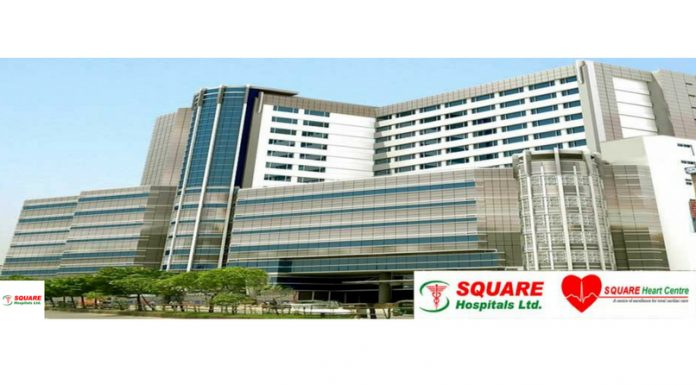
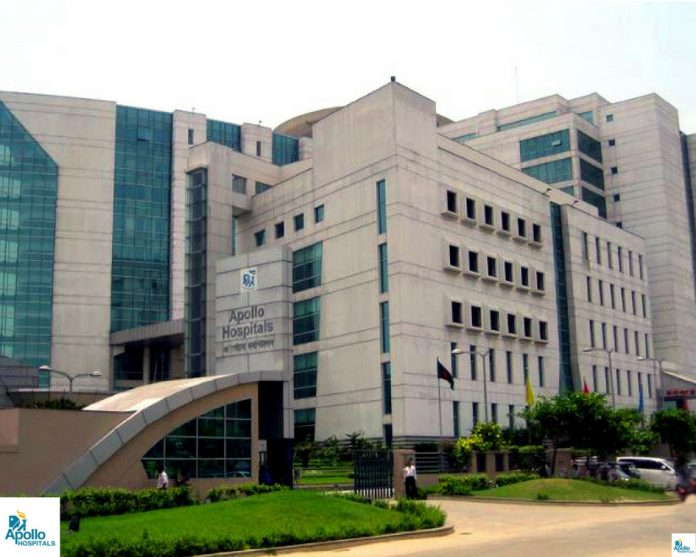
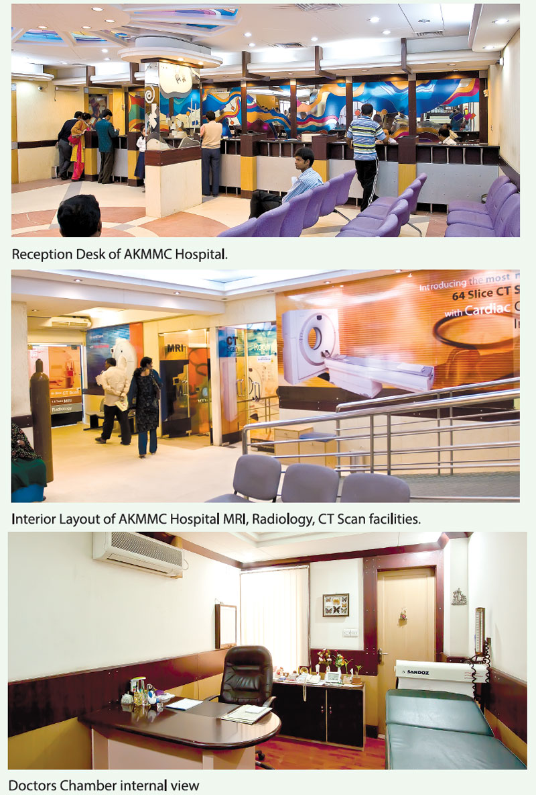
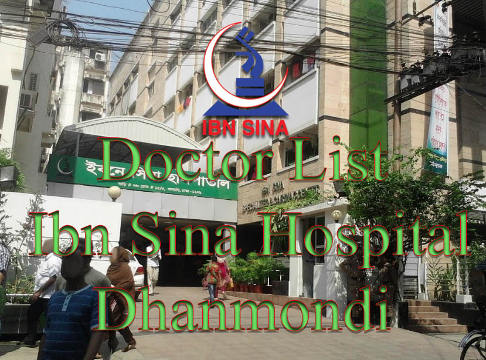
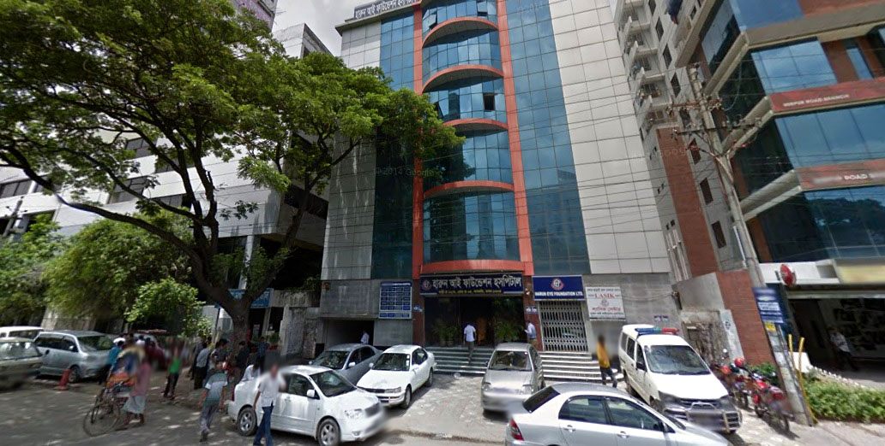
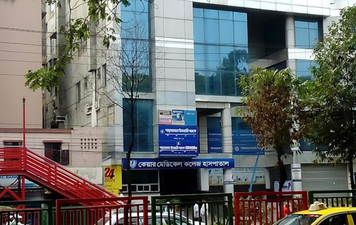
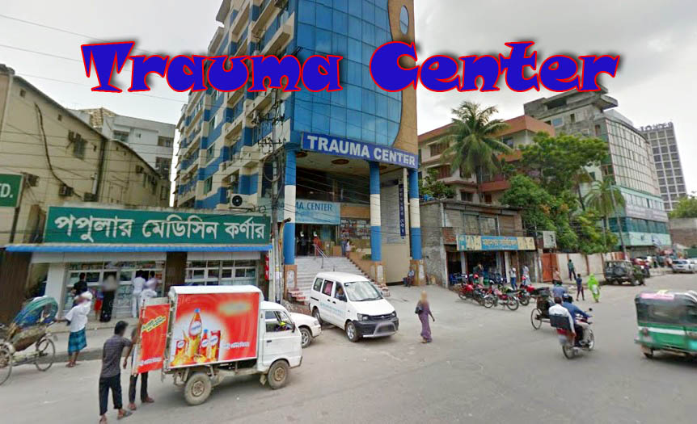

Doctors of Dhaka District
Labaid Hospital

Doctor List of Labaid Specialized Hospital Dhanmondi
Address: House- 06, Road-04, Dhanmondi, Dhaka-1205, Bangladesh
Phone:
+88029676356
+8802 58610793-8
Mobile:
+8801713 333337 (24Hour)
Customer Care:
+8801766662111
Hotline: 10606
Website:
Labaid Hospital
Dr. Kazi Naushad-Un-Nabi
Qualification: FRCP (Glasgow), MRCP (UK), MRCPCH (UK), DCH (IRE), MBBS (DMC) Chief Consultant,
Dept. of Paediatric / Neonatology Labaid Specialized Hospital
Pediatric and Neonatology
Dr.Quazi Md. Quamrul Hasan
Qualification: MBBS, DCH,
Pediatric and Neonatology
Expertise: Consultant Paediatrics & Neonatology
Visiting Hour: 9.00 AM - 7.00 PM
Prof. (Dr.) Sayeeda Anwar
Qualification: MBBS, FCPS (Paed) Fellowship
Training in neonatal intensive care unit & newborn medicine (USA)
Pediatric and Neonatology
Prof. Dr. Md. Abdul Mannan
Qualification: MBBS, FCPS, MD (Paed), MD (Neonatology), Fellow Neonatology,
NUH (Singapore), University College London Hospital, U.k
Pediatric and Neonatology
Visiting Hour: 6 pm - 9.30 pm
Prof. Dr. Syed Khairul Amin
Qualification: MBBS, DCH(Glasgo), MRCP(UK), FRCP(Edin), FRCP(Glasgo)
Pediatric and Neonatology
Visiting Hour: 3.00 pm - 7.00 pm, Friday Closed
Col. (Dr.) Nurun Nahar Fatema
Qualification: MBBS, FCPS(Pedi), FRCP(Edin), FACC(USA), FSCAI(USA)
Cardiology
Paediatric Interventional cardiologist
Visiting Hour: 4.00 pm - 6.30 pm, ECHO: 6.30 pm - 8.30 pm, Friday Closed
Dr. Abdullah Shahriar
Qualification: MBBS, MD (Paed)
Paediatric Cardiology
Visiting Hour: 4.00 pm - 8.00 pm, Friday Closed
PROF. DR, MD. ABDUL MANNAN
Qualification: MBBS, FCPS, MD(PAED), MD(NEONATOLOGY),
Fellow neonetalogy, NUH Singapur,All India Institute of medical science, Delhi
Paediatric Cardiology
Visiting Hour: Only Friday Open 10:00 AM - 12:00 PM
Dr. Syed Saimul Haque
Qualification: MBBS, MD (Child Kidney), Clinical Fellow (Child kidney diseases)
Paediatric Nephrology
Child & Child Kidney Specialist
Visiting Hour: 6.00 pm - 9.00 pm Thursday & Friday Closed
DR ABU SALIM
Qualification: MBBS,D,CARD,MD(CARDIOLOGY),FESC
Cardiology
Visiting Hour: Open Friday Only 5:30 PM 8:00 PM
DR. A K S ZAHID MAHAMUD KHAN
Qualification: MBBS(Dhaka),MD(Cardiology
Cardiology
Visiting Hour: Open Friday Only 5:00 PM 8:30 PM
Dr. AKS Zahid Mahmud khan
Qualification: MBBS(Dhaka) MD (Cardiology)
Cardiology
Visiting Hour: Evening 5:30 - Night 7:30
Dr. Mohammad Farhad Uddin
Qualification: MBBS, MD (Card)
Cardiology
Visiting Hour: 3.00Pm - 6.00Pm Friday Closed
DR. S MOKADDAS HOSSAIN (SADI)
Qualification: MBBS, FCPS(MED), MD (CARD), FAPSIC, FELLOW-NHC
Cardiology
Visiting Hour: Open Friday Only 10:00 AM 2:00 PM
Prof. (Dr.) Md. Abdul Kader Akanda
Qualification: MBBS, FCPS (Med), MD (Card), FACC (USA)
Cardiology
Prof. Dr. Md. Fakrul Islam
Qualification: MBBS, MD (Card), FESC (Europe), FACC (USA)
Cardiology
Dr. Lutfor Rahman
Qualification: MBBS, MS (CTS)
Cardiac Surgery
Chief Cardiac Surgeon
Visiting Hour: 9.00 AM - 9.00PM
Dr. Md. Lokman Hossain
Qualification: MBBS, MS(Cardiovascular & Thoracic Surgery)
Cardiac Surgery
Labaid Cardiac Hospital Sr. Consultant, Cardiac Surgery
Brig. Gen. (Prof.) Nurunnahar Fatema
Qualification: MBBS, FCPS (Paed), FRCP (Edin), FACC (USA), FACAI (USA)
Interventional Cardiology
Dr. A P M Sohrabuzzaman
Qualification: MBBS, MD (Card), FCPS (Med)
Interventional Cardiology
Visiting Hour: 10.00 AM - 9.00 PM
Dr. Abdul Wadud Chowdhury
Qualification: FCPS(Medi), MD(Card)
Interventional Cardiology
Dr. Arun Kumar Sharma
Qualification: MBBS, MCPS (Med)), MD (Card), FACC (USA)
Interventional Cardiology
Senior Consultant, Labaid Cardiac Hospital
Dr. M G Azam
Qualification: MBBS, MD (Card), FSCI (USA)
Interventional Cardiology
Visiting Hour: 4.30 pm - -7.30 pm, Friday & Saturday Closed
Dr. Mahbubor Rahman
Qualification: MBBS, MCPS (Med), MD (Card), FACC (USA), FSCAI (USA), FRCP (UK)
Interventional Cardiology
Senior Consultant, Cardiologist & Medicine Specialist
Visiting Hour: 9.00 AM-8.00PM
Dr. Md. Abu Salim
Qualification: MBBS, D-Card, MD (Card), FESC, Fellow Interventional Cardiology (India)
Interventional Cardiology
Dr. Reyan Anis
Qualification: MBBS, MRCP (UK), FRCP (London)
Interventional Cardiology
Labaid Cardiac hospital
Visiting Hour: 9.00 AM - 7.00 PM
Dr. S M Mustafa Zaman
Qualification: MBBS, DTCD, MD (Card), Fellow interventional cardiology (India, Singapore, Bangladesh)
Interventional Cardiology
Dr. S. Mokaddas Hossain (Sadi)
Qualification: MBBS, FCPS (Med), MD (Card), FAPSIC, Fellowship-National Heart Centre, Singapore
Interventional Cardiology
Visiting Hour: 9.00 am - 2.00 pm
Dr. Zahurul Alam Khan
Qualification: MBBS, FCPS(Medi), MD(Cardio)
Interventional Cardiology
Visiting Hour: 6.00 pm - 9.00 pm, Friday Closed
Prof Dr. A K Miah
Qualification: MBBS, DTMH(UK), PhD(Sweden)
Interventional Cardiology
Prof. (Dr.) M. Atahar Ali
Qualification: MBBS, FCPS, MD (Card), FRCP, FACC, FHRS
Interventional Cardiology
Prof. (Maj.Gen) Dr.M G Rabbani (Rtd)
Qualification: MBBS,MCPS(Card),Med(Card),OJT-Card,CMH
Interventional Cardiology
Visiting Hour: 5.00PM - 8.00PM Friday Closed
Prof. Dr. Abduz Zaher
Qualification: MBBS, FCPS (Med), FACC (USA), FRCP
Interventional Cardiology
Sr. Consultant,Clinical & Interventional Cardiologist
Visiting Hour: 11 .00 AM- 1.OO PM & 5.00 PM-9.00PM
Prof. Dr. Abul Hossain Khan Chowdhury
Qualification: MBBS, FCPS(Medi)
Interventional Cardiology
Interventional Cardiologist
Prof. Dr. Abul Hussain Khan Chowdhury
Qualification: MBBS, FCPS (Med), FACC (USA), Trained in Interventional Cardiology (Australia)
Interventional Cardiology
Prof. Dr. Baren Chakraborty
Qualification: MBBS, MCPS (Med), FCPS (Med), FACA (USA), FCCP (USA),
FACC (USA), FRCP (Ireland, Edin, Glasgow)
Senior Fellowship in Cardiology (Singapore)
Interventional Cardiology
Labaid Cardiac Hospital Sr. Consultant Cardiologist & Chief Medical Education And Research
Prof. Dr. M Jalaluddin
Qualification: MBBS, FCPS(Med)
Interventional Cardiology
Director, Academic Affairs, Labaid Cardiac Hospital 9.00 am - 7.00 pm, Friday Closed
Prof. Dr. Md. Abdul Kader Akanda
Qualification: MBBS, FCPS(Med), MD(Card), FACC(USA)
Interventional Cardiology
Clinical & Interventional Cardiologist, 6.00 pm - 9.00 pm, Friday Closed
Prof. Dr. Md. Afzalur Rahman
Qualification: MBBS, MD (Card), PhD (Card), FRCP (Glasgow), FRCP (Edin), FACC (USA)
Interventional Cardiology
7.30 pm - 10.00 pm, Thursday & Friday Closed
Prof. Dr. Md. Fakrul Islam
Qualification: MBBS, MD (Card), FESC, FACC (USA)
Interventional Cardiology
Visiting Hour: 10.30AM - 12.00PM 6.00PM - 8.00PM Every Wednesday time 6.00 - 7.00pm Thurs & Friday Closed
Prof. Dr. Razia Sultana Mahmud
Qualification: MBBS, D-Card, FACC (USA), Trained in Cardiology (Japan), WHO Fellow in Interventional Cardiology
Dr. M. Bahadur Ali Miah
Qualification: MBBS, MD (Neuro), Fellow-Interventional Neurology & Stroke Therapy
Neurology
Dr. Sirajee Shafiqul Islam
Qualification: MBBS, MD (Neuro), FINR (India) Clinical Fellow Stroke & Neurointervention
Neurology
Prof. (Dr.) Md. Ashraf Ali.
Qualification: MBBS, FCPS (Med), MD (Neuro), FRCP (Edin)
Neurology
Sr. Consultant,
Visiting Hour: 10.00 am - 2.00 pm & 6.00 pm - 9.00 pm, Friday Closed
Prof. (Dr.) Sirajul Haque
Qualification: MBBS, FCPS (Med), FACP (USA), FRCP (Edin) Chief Consultant,
Neurology Dept. Labaid Specialized Hospital
Neurology
Chief Consultant
Visiting Hour: 9.00 AM - 7.00 PM
Prof. Dr. Abu Nasar Rizvi
Qualification: MBBS, MD(Neuro)
Neurology
Visiting Hour: 5.00 pm - 7.00 pm, Friday Closed
Prof. Dr. M A Hannan
Qualification: MBBS(Hons in Medicine), FCPS(Med), MD(neuro),
FRCP (Edin-UK) World Health Organization Fellow in Neourology (Bangkok)
Medicine Specialist & Neurologist Chairman, Department of Neurology, BSMMU
Neurology
Visiting Hour: 5.00 pm - 9.00 pm, Friday Closed
Prof. Dr. M. A. Hannan
Qualification: MBBS (Med), FCPS (Med), MD (Neuro), FRCP (Edin-UK)
Neurology
Prof. Dr. Mansur Habib
Qualification: MBBS, FCPS (Med), MD (Neuro), MRCP (UK), FRCP (Edin), FRCP (London)
Neurology
Prof. Dr. Md. Azharul Hoque
Qualification: MBBS, FCPS (Med), MD (Neuro), FACP (USA), FRCP (Glasgow), FRCP (Edin).
Neurology
Neurology & Medicine Specialist
Visiting Hour: 4.00 pm - 9.30 pm Friday & Govt. Holiday Closed
Prof. Dr. Shahrukh Ahmed
Qualification: MBBS, FCPS (Med), MD (Neuro) Medicine and Neurmedicine Specialist, Senior Consultant
Neurology
Dr. Aminur Rahman
Qualification: MBBS, MD(Neurology)
Neuromedicine
Specialist in Neurology
Visiting Hour: 2.30 pm - 5.00 pm Friday Closed
Dr. M Bahadur Ali Miah
Qualification: MBBS, MD(Neuro)
Neuromedicine
Neurology & Medicine Specialist
Visiting Hour: 5.00 pm - 7.00 pm, Thursday & Friday Closed
DR. SHIRAJEE SHAFIQUL ISLAM
Qualification: MBBS,MD(Neurology),FINR(India
Neuromedicine
Visiting Hour: Open Friday Only 5:30 PM 8:00 PM
Prof. Col.Dr. Mohammad Mojibor Rahman
Qualification: MBBS(Dhaka),FCPS(Medicine) Fellow in Neurology(Turkey)
Neuromedicine
Visiting Hour: 10.00Am - 2.00Pm Friday Closed
Prof. Mansur Habib
Qualification: MBBS, FCPS(Med), MD(Neuro), MRCP(UK), FRCP(Edin)
Neuromedicine
Neurology & Medicine Specialist
Visiting Hour: 6.00 pm - 8.00 pm Thursday, Friday & Govt. Holiday Closed
Dr. Masud Anwar
Qualification: MBBS, FCPS, MS(Neurosurgery)
Neurosurgery
Visiting Hour: 9.00 am - 9.00 pm, Friday Closed
Dr. Moududul Haque
Qualification: MBBS,MD,PhD(MS) Neurosurgery. Fellow Spinal Surgery NUH Singapore WHO Fellow Vascular Neurosurgery
Dr. S I M Khairun Nabi Khan
Qualification: MBBS, MS(Neurosurgery)
Neurosurgery
Visiting Hour: 7.30 pm - 9.00 pm, Friday & Govt. Holiday Closed
Dr. Kazi Mohibur Rahman
Qualification: MBBS, MD (Neuro) Fellow-Interventional Neurology & Stroke Theraphy, HGRH (India)
Interventional Neurology
Visiting Hour: 5.00 pm - 9.00 pm, Friday Closed
Dr. Hasna Fahmima Haque
Qualification: MBBS, FCPS(Med)
Medicine
Medicine & Diabetic Specialist Saturday,
Visiting Hour: Monday, Wednesday & Thursday ( 4.00 pm - 6.30 pm )
Dr. Md. Robed Amin
Qualification: MBBS, FCPS(Med)
Medicine
Visiting Hour: Only Tuesday & Wednesday - 5.00 pm - 9.00 pm
Dr. Shah Habibur Rahman
Qualification: MBBS, FCPS(Med), WHO Fellow (India)
Medicine
Visiting Hour: 5.30 pm - 9.30 pm, Friday Closed
Prof. (Dr.) Md. Monzur Rahman (Galib)
Qualification: MBBS, FCPS (Med), WHO Fellow (India)
Medicine
Sr. Consultant
Visiting Hour: 10.00 AM - 2.00 PM & 4.00 PM - 9.00 PM
Prof. (Dr.) Samiran Kumar Saha
Qualification: MBBS,Ph.D(Med),FACP(USA),FRCP(Edin)
Medicine
Sr. Consultant
Visiting Hour: 10.00 AM - 2.00 PM & 5.00 PM - 10.00 PM
Prof. Dr. M A Faiz
Qualification: MBBS, FCPS (Med), FRCS (Edin), PhD (UK)
Medicine
Medicine & Neuromedicine Specialist
Visiting Hour: 6.00 pm - 8.00 pm Friday Closed
Prof. Dr. M A Jalil Chowdhury
Qualification: MBBS, FCPS, MD, FACP (USA)
Medicine
Prof. Sheikh Nesaruddin Ahmed
Qualification: MBBS, DTM & H, MRCP (Edin), FRCP (Edin), FCPS, FACP (USA)
Medicine
Prof. A K M Salek
Qualification: MBBS,FCPS(Physical Medi.)
Physical Medicine
Visiting Hour: Sat-Thu Open 6.00-11.00
Prof. Dr. A. K. M. Salek
Qualification: MBBS, FCPS (Physical Medicine)
Physical Medicine
Visiting Hour: 7.00 pm - 10.00 pm, Friday Closed
Prof. Dr. M Habibur Rahman
Qualification: MBBS, DTCD, FCPS, FRCP (Edin), Fellow Rheumatology (India) , Neuro-Rehab (England)
Physical Medicine
Visiting Hour: 6.00 pm - -9.00 pm, Thursday, Friday & Govt. Holiday are Closed
Prof. Dr. Syed Mozaffar Ahmed
Qualification: MBBS, FCPS (Phy Med), PhD (Rheumatology), MACP (USA)
Physical Medicine
Dr. Syed Mozaffar Ahmed
Qualification: MBBS, FCPS(Physical Medicine), PhD(Rheumatology)-USA
Physical Medicine & Physiotherapy
Assistant Professor, Physical Medicine
Visiting Hour: 4.30 pm - 9.00 pm Friday Closed
Dr. Faroque Ahmed
Qualification: MBBS (DMC). MD (HEPATOLOGY). Liver & Gastrointestinal
Liver & Medicine
Sat-Thurs Open 4.00-8.00
Prof. (Dr.) M. A. Samad
Qualification: MBBS, MD (Nephro) FCPS (Medicine),
FRCP (Glasgow, UK) Trained in Nephrology (USA, Japan, Singapore & India)
Nephrology
CAPD Expert Kidney and Medicine Specialist Chief Consultant & Head,
Dept. of Nephrology Labaid Specialized Hospital
Visiting Hour: 9.00 am - 8.00 pm, Friday Closed
Prof. (Dr.) Asia Khanam
Qualification: MBBS, MD(Nephrology)
Nephrology
MBBS, MD (Nephrology) Kidney (Medicine) Specialist
Visiting Hour: 5.30 pm - 9.00 pm, Friday Closed
Dr. Mohammad Moniruzzaman
Qualification: MBBS, MD (Nephro), Kidney Disease Specialist
Nephrology
Prof. Dr. Mohammed Mohsin
Qualification: MBBS, FCPS (Internal Medicine), F.W.H.O (Nephro)
Nephrology
Visiting Hour: 10.00 am - 1.00 pm & 4.00 pm - 9.30 pm Friday Closed
Prof. Dr. Muhammad Rafiqul Alam
Qualification: MBBS, MD (Nephro), FCPS (Med)
Nephrology
Dr. Foara Tasmim Palmy
Qualification: MBBS, MS (Burn & Plastic Surgery)
Burn, Plastic & Cosmetic Surgery
Dr. Maruf Alam Chowdhury
Qualification: MBBS, FCPS (Surgery), FCPS (Plastic & Reconstructive Surgery)
Burn, Plastic & Cosmetic Surgery
Dr. Md. Quamrul Hasan Chowdhury
Qualification: MBBS, DCD, MSc (Clinical Dermatology) Cardiff University School of Medicine, UK
Dermatology & Hair Transplant Surgery
Dr. Isabela Kabir
MBBS, MCPS, FCPS
Dermatology & Venereology
Dr. Mahmud Chowdhury
Qualification: MBBS, DDV, MCPS, FCPS
Dermatology & Venereology
11.30 am - 2.00 pm & 6.00 pm - 8.30 pm . Friday Closed
Dr. Md. Azizul Haque
Qualification: MBBS, DD(Thailand-Japan)
Dermatology & Venereology
Consultant
Visiting Hour: 6.00 pm - 9.00 pm Thursday & Friday Closed
Prof. Dr. Mir Nazrul Islam
Qualification: MBBS, DDS (Wels), MSC (UK), FRCP (Glasgow), FRCP (Edin)
Dermatology & Venereology
Skin & VD Specialist
Visiting Hour: 5.00 - 9.00 pm Friday & Govt. Holiday Closed
Prof. Lt. Col. (Retd) Dr. Md. Abdul Wahab
MBBS,DDV,MCPS,FACP(USA) FCPS(Dermatology),FRCP,Higher Trained in Thailand
Dermatology & Venereology
Open Sun,Tues & Thursday 3.30PM - 6.00PM
Dr. Riaz Uddin
Qualification: MBBS, DDV, MCPS, FCPS
Skin & VD
Visiting Hour: Only Friday Open 5.00 Pm- 8.00 Pm
Dr. Feroz Amin
Qualification: MD(Endocrinology, BIRDM)
Diabetology & Endocrinology
Dr. Indrajit Prashad
Qualification: MBBS, FCPS(Med), MD(Endocrinology), MACE(USA)
Diabetology - Endocrinology, Thyroid and hormone specialist
Mobile: 01742600191
Visiting Hour: 5pm - 10pm, Friday & Govt. Holiday Closed
Dr. M A Hasanat
Qualification: MBBS, M.Phil, MD
Diabetology & Endocrinology
Medicine, Diabetes & Hormone Specialist 5.00 pm - 7.00 pm Tuesday & Friday Closed
Dr. M Saifuddin
Qualification: MBBS (DMC), FCPS, MD, FACE (USA), FACP (USA), FRSM (UK)
Designation: Assistant Professor (Endocrinology)
Expertise: Diabetes and Endocrinology
Organization: Dhaka Medical College
BMDC Reg. No : 40901
Visiting Hours: 3.00 to 6.00 PM daily
Dr. Md. Feroz Amin
Qualification: MBBS, MD (Endocrinology), FACE (USA)
Diabetology & Endocrinology
Prof. Dr. A K M Musa
Qualification: FCPS(Phy Medi), MCPS(Medi), DTCD Gold Medalist
Diabetology & Endocrinology
Prof. Dr. Khwaja Nazim Uddin
Qualification: MBBS, FCPS (Med), FRCP (Glasgow), FACP (USA)
Diabetology & Endocrinology
Visiting Hour: 7.00 pm - 10.00 pm, Tuesday & Thursday Closed
Prof. Dr. M A Hasanat
Qualification: MBBS, MPhil, MD
Diabetology & Endocrinology
Dr. Nusrat Sultana
Qualification: MBBS(DMC),FCPS(Medicine),MD (Endocrinology)
Endocrinology
Visiting Hour: Sat-Mon & Wed-Thurs 9:00-1:00 MORN
Dr. K. M. Mamun Murshed
Qualification: MBBS, PGDND, DLO
ENT ( Ear,Nose &Throat)
ENT Specialist & Surgeon,
Visiting Hour: 5.00 pm - 8.00 pm (Dhanmondi) Night 9:00 - 10:00 (Mirpur)
Dr. M. Muinul Hafiz
Qualification: MBBS, DAND, DLO, MS(ENT), FACS(USA), FICS
ENT ( Ear,Nose &Throat)
Sr. Consultant,
Visiting Hour: 5.00 pm - 8.00 pm , Friday Closed
Prof. Dr. Sabah Uddin Ahmed
Qualification: MBBS, DLO, MS(Autolaryngology)
ENT ( Ear,Nose &Throat)
Visiting Hour: 6.00 pm - 9.30 pm, Friday Closed
Prof. Dr. Zaheer Al Amin
Qualification: MBBS, DLO(Eng), FRCS(Ireland), FRCS(Edin),
ENT ( Ear,Nose &Throat)
Visiting Hour: 5.00 pm - 10.00 pm, Friday Closed
Prof. Major (Retd.) Dr. M Motahar Hossain
Qualification: MBBS, DLO, FICH(USA)
ENT (Ear,Nose &Throat)
Visiting Hour: 10.00 am - 12.00 pm & 6.00 pm - 9.00 pm, Friday Closed
Dr. Atia Saeed
Qualification: MBBS, FCPS (Med), MD (Gastro)
Gastroenterology
Dr. Bimal Chandra Shil
MBBS, FCPS(Med), MD(Gastro), Member- ISG(India)
Gastroenterology
Visiting Hour: 5.00 pm - 9.00 pm, Thursday & Friday Closed
Dr. Chanchal Kumar Ghosh
Qualification: MBBS,FCPS(Medicine),MD(Gastroenterology) Gastroenterology,
Hepatology & Medicine specialist Interventional Gastroenterologist
Gastroenterology
Visiting Hour: 6:00PM to 10:00PM (Except Friday)
Dr. K M Anamul
Qualification: MBBS, PhD
Gastroenterology
Medicine & Gastro-Liver Specialist
Visiting Hour: 5.00 pm - 9.00 pm Friday Closed
Dr. Md. Ashraful Islam
Qualification: MBBs, FCPS(Med), MD(Gastro)
Gastroenterology
Visiting Hour: 5.00 pm - 9.00 pm, Friday & Govt holiday are closed
Prof. (Dr.) Mian Mashhud Ahmad
Qualification: MBBS, MD, Ph D
Gastroenterology
Chief Consultant
Visiting Hour: 10.00 AM - 2.00 PM & 5.00 PM - 10.00 PM
Prof. Dr. Mahmud Hasan
Qualification: MBBS, PhD (Edin) FCPS, FCPS (Pak) FRCP (Edin), FRCP (Glasgow)
Gastroenterology
Visiting Hour: 4.00PM - 8.00PM Tues & Friday
Prof. Dr. S. M. Ishaque
Qualification: MBBS, DTM, MD (Gastro),
Clinical Fellow: NUM (Singapore),
AIIMS (India) Ex. Register (Gastro), NUH (Singapore)
Gastroenterology
Prof. Dr. Swapan Chandra Dhar
Qualification: MBBS, FCPS(Med), MD, MACG(USA), FRCP(Edin)
Gastroenterology
Visiting Hour: 5.30 pm - 9.00 pm, Friday Closed
Prof. Dr. Shahadat Hossain Sheikh
Qualification: MBBS, FCPS, MRCS (Edin), Colorectal & Cancer Specialist Surgeon
General & Colorectal Surgery
Prof. Dr. Zulfiqur Rahman Khan
Qualification: MBBS, FCPS (Surgery), FRCA (UK), FICS (USA)
General & Pancreatic Surgery
Dr. Md. Saifullah
Qualification: MBBS, FCPS (Surgery) General, Laparoscopic, Colorectal and Cancer Specialist Surgeon
General Surgery
Laparoscopic & Colorectal Surgeon,
Visiting Hour: 5.00 pm - 8.00 pm, Friday & Govt. Holiday Closed
Dr. Md. Shahadat Hossain Sheikh
Qualification: MBBS, FCPS (Surgery), MRCS (Edin)
General Surgery
Prof. Dr. Golam Mohiuddin Akbar Chowdhury
Qualification: MBBS, FCPS (Surgery), FICS (USA)
General Surgery
Prof. Dr. M Khademul Islam
Qualification: MBBS, FCPS, Dip.Med (UK), FRCS (Glasgow), FICS, FACS, Chief Surgeon (Labaid Specialized Hospital)
General Surgery
Chief Consultant Surgeon,
Visiting Hour: 9.00 am - 9.00 pm, Thursday & Friday Closed
DR KANIZ FATEMA
Qualification: MBBS, FCPS, CMU(DU)
Gynecology & Obstetrics
Visiting Hour: Open Friday Only 11:00 AM 12:30 PM
Dr. Afzalunnessa Chowdhury
Qualification: MBBS, DGO, MCPS, FCPS (Gyn & Obs)
Gynecology & Obstetrics
Dr. Begum Hosne Ara
Qualification: FCPS(Gyne), MS(Gyne)
Gynecology & Obstetrics
Dr. Kaniz Fatema
Qualification: MBBS, FCPS(Obs & Gyn), CMU
Gynecology & Obstetrics
Visiting Hour: 10.00 am - 12.00 pm & 5.00 pm - 8.00 pm(Only Friday)
Dr. Moriom Faruki (Shati)
Qualification: MBBS, DGO, MCPS(Gyne), MS(Gyne), FCPS(Gyne)
Gynecology & Obstetrics
Sr. Consultant,
Visiting Hour: 9.00 am - 9.00 pm, Friday Closed
Dr. Tasnim Akter
Qualification: MBBS (CMC), FCPS (Gyn & Obs)
Gynecology & Obstetrics
Prof. Dr. Bayes Bhuiyan
Qualification: MBBS, FCPS(Gyne), FICS
Gynecology & Obstetrics
Prof. Major(Ret) Dr. Laila Arjumand Banu
Qualification: MBBS, DGO, FCPS(Obs. & Gynee), FICS
Gynecology & Obstetrics
Chief Consultant,
Visiting Hour: 10.00 am - 12.00 pm & 6.00 pm - 9.00 pm, Thursday & Friday Closed.
Dr. (Lt. Col) Mir Azim Uddin
Qualification: MBBS, DCP, MCPS, FCPS (Hematology)
Hematology
Prof. Dr. M A Khan
Qualification: FCPS(Hematology)
Haematology
Dr. Mamun Al Mahtab (Swapnil)
MBBS, MSC (Gastro, UK), MD (Hepato), FACG (USA), Fellow-OMGE, Hepatology (Japan)
Hepatology
Visiting Hour: 6.00 pm - 9.30 pm, Friday Closed
Prof. Dr Faruk Ahmed
Qualification: MBBS (DMC).MD(HEPATOLOGY)
Hepatology
Sat-Thurs Open everyday 4:00-8:00 & tuesday 8.30-10.00
Prof. Dr. Noor Uddin Ahmed
Qualification: MBBS, FCPS (Med), Trained in Liver Diseases (Japan & Thailand)
Hepatology
Liver & Medicine Specialist Saturday, Monday & Wednesday ( 5.00 pm - 8.00 pm )
Prof. Dr. Salimur Rahman
Qualification: MBBS, FCPS (Med), FRCP Postgraduate fellowship in liver disease (Japan)
Hepatology
Prof. Dr. SM Ishaque
Qualification: MBBS,DTM,MD (Gastroenterology),Clinical fellow: NUM(SINGAPORE),AIIMS(INDIA)
Hepatology
Visiting Hour: Sat-Thurs Open 3.00-6.00
DR. MD. NAZMUL ISLAM
Qualification: MBBS,FCPS(MEDICINE),MRCP(UK)PACES
Internal Medicine
Visiting Hour: Open Friday Only 5:00 PM 8:00 PM
Prof. Dr. Md. Ridwanur Rahman
Qualification: MBBS, FCPS(Internal Medicine)
Internal Medicine
Medicine Specialist,
Visiting Hour: 6.00 pm - 9.00 pm, Thursday, Friday & Govt. Holiday Closed
Dr. Mahmudur Rahman Laizu
Qualification: MBBS, DA, FCPS Member,
International Association of Pain(USA) Special Trained in Nerve Block
& Ahkupunkcher(Japan) Special Trained in Pain Medicine(Span)
Internal Medicine & Rheumatology
Visiting Hour: 5.00pm - 7.30pm Friday Closed
Prof. Dr. A. H. M Firoz
Qualification: MBBS,FCPS,MD(Medicine)
Internal Medicine & Rheumatology
Visiting Hour: Open Sat. Mon & Wednesday 5.00Pm - 8.30Pm
Prof. Dr. Md. Abdul Jalil Chowdhury
Qualification: MBBS, FCPS, MD, FACP(USA)
Internal Medicine & Reumatology
Visiting Hour: 6.00 pm - 9.00 pm, Thursday & Friday Closed
Prof. Dr. Md. Rafiqul Islam
Qualification: MBBS, FCPS
Internal Medicine & Reumatology
Prof. Dr. Samiran Kuman Saha
Qualification: MBBS, PhD (Med), MD (Med)
Internal Medicine & Reumatology
Prof. Dr. Sheikh Nesaruddin Ahmed
Qualification: MBBS, DTM & H, MRCP(Edin), FRCP(Edin), FCPS(honorary)
Internal Medicine & Reumatology
Visiting Hour: 5.00 pm - 8.00 pm, Friday Closed
Dr.Md. Shahadat Hossain Sheikh
Qualification: MBBS, FCPS(Surgery), MRCS(Edin)
Laparoscopic & Colorectal Surgery
Visiting Hour: 3.00 pm - 4.30 pm, Friday Closed
Dr Dilara Makhbul
Qualification: MBBS
Nutrition & Dietetics
Dr kamrunnaher
Qualification: MBBS
Nutrition & Dietetics
Dr Salma Pervin
Qualification: MBBS
Nutrition & Dietetics
Farzana Ahmed
Nutrition Consultant
Nutrition & Dietetics
Dr. A F M Kamal Uddin
Qualification: MBBS, DTCD, MD (Radiation Oncology),
UICC Fellow, NCC, Singapore IEA Fellow, UPMC, USA
Oncology-Cancer Specialist,
Visiting Hour: 5.00 pm - 7.30 pm, Friday Closed
Dr. Happy Hassain
Qualification: MBBS, M-PHILL(CLINICAL ONCOLOGY)
Oncology
Visiting Hour: Sat-Thurs Open 4.30-8.30
Dr. Shamsun Nahar
Qualification: MBBS, FCPS(Radiotherapy)
Oncology
Visiting Hour: Sat, Mon-Thurs Open 5.00-8.00
Prof. Dr. Lt. Col. (Rtd.) Md. Mofazzal Hossain
Qualification: MBBS, FCPS (Med), FACP (USA),
FRCP (Edin), FRCP (Glasgow), FRCP (Ireland),
Fellow Med Oncol, Trained in NUH (Singapore),
Member ASCO, Member ESMO.
Oncology
Prof. Dr. Moarraf Hossen
Qualification: MBBS, DMRT, FCPS, Fellowship Training (India)
Oncology
DR SYED ANWARUZZAMAN
Qualification: MBBS,MS(Ortho),AO Fellow(GERMANY)
Orthopedic
Visiting Hour: Open Friday Only 4:00 PM 6:00 PM
DR. ERFANUL HAQ SIDDIQUI
Qualification: MBBS(DMC), MS (Ortho),FRSH(London)
Orthopedic
Visiting Hour: Open Friday Only 4:00 PM 9:00 PM
PROF DR. ZIAUL HAQ
Qualification: MBBS,MS(Ortho)
Orthopedic
Visiting Hour: Sat-Mon& Wed-Thur Open 6:00-9:00pm
PROF DR. ZIAUL HAQ
Qualification: MBBS,MS(Ortho)
Orthopedic
Visiting Hour: Sat-Mon & Wed-thur Open 6:00-9:00pm
Dr. Abu Zafar Chowdhury (Biru)
Qualification: MBBS, MS (Ortho) Fellow, Arthoscopy & Replacement Surgery (UK)
Orthopedic & Trauma
Dr. Amjad Hossain
Qualification: MBBS, MS (Ortho) AO Fellow (Germany) Arthroplasty & Trauma Surgeon
Orthopedic & Trauma
President Bangladesh Orthopaedic Society Chief Consultant & Head of the Deptt. Orthopaedics
& Arthroplasty Centre Labaid Specialized Hospital Dhanmondi, Dhaka-1205.
Visiting Hour: 11.00 am - 8.00 pm, Thursday & Friday Closed
Dr. Erfanul Huq Siddiqui
Qualification: MBBS, MS (Ortho), FRSH (London)
Orthopedic & Trauma
Dr. Md. Zia Uddin
Qualification: MBBS,D-Ortho, MS (Ortho Surgery)
Orthopedic & Trauma
Consultant
Visiting Hour: 9.00 AM - 8.00 PM
Dr. Syed Anwaruzzaman
Qualification: MBBS, MS (Ortho)
Orthopedic & Trauma
Prof. (Dr.) Kh. Abdul Awal (Rizvi)
MBBS, MS (Ortho), FCPS (Ortho)
Orthopedic & Trauma
Dr. Chaya Bhattacharjee
Life Fellow-32, ATCB, Life Fellow(BACAMH), MSC(Psychiatrics),
M Fill (Psychiatrics),PHD (Psychiatrics),
Post Graduate Training In Phychotherapy (BSMMU)
Psychiatry
Visiting Hour: Sat-Thurs Open
Dr. M. A. Mohit (Kamal)
Associate Professor of Psychotherapy.
Psychiatry
Visiting Hour: 4.30 pm - 8.30 pm, Thursday, Friday & Govt. Holiday Closed
Dr. Md. Faruq Alam
Qualification: MBBS, FCPS, Trained from India, Germany, USA, Thailand, Japan & Italy)
Psychiatry
Associate Professor, Psychiatric
Visiting Hour: 6.00 pm - 10.00 pm Friday Closed
Dr. Rezwana Quaderi
Qualification: MBBS, FCPS (Psycho), Fellow, Psychotherapy (USA)
Psychiatry
Visiting Hour: 5.00 pm - 9.00 pm , Thursday, Friday & Govt, Holiday Closed
Dr. Saifun Nahar
Qualification: MBBS, FCPS, BCS (Health)
Psychiatry
Dr. Syed Zaber Mahmud
Qualification: MBBS, MD(USA), FIGP(USA), FICP(USA)
Psychiatry
Consultant,
Visiting Hour: 9.00 am - 1.00 pm & 5.00 pm - 9.00 pm, Friday Closed
Prof. Dr. M S I Mullick
Qualification: MBBS, PhD, FCPS, MRC-Psych (London), FRC-Psych (London), DCAP (London), FAACAP (USA), FAPA (USA)
Psychiatry
Psychiatrist,
Visiting Hour: 6.00 pm - 9.00 pm, Friday closed
Prof. Dr. Md. Shah Alam
MBBS, FCPS
Psychiatry
Psychiatrist
Visiting Hour: 7.00 pm - 10.00 pm Thursday & Friday Closed
Dr. Md. Sayedul Islam
Qualification: MBBS, DTCD, MD(Chest) Medicine, Asthma and Chest Specialist
Pulmonology
Visiting Hour: Evening 5:30-Night 9:00 (Friday closed)
Dr. Zakir Hossain Sarker
Qualification: MBBs, DTCD, MD(Chest)
Pulmonology
Sr. Consultant,
Visiting Hour: 5.00 pm - 8.00 pm, Tuesday & Friday Closed
Prof. (Dr.) Mohammad Atiqur Rahman
Qualification: MBBS, MD (Chest), FCCP (USA)
Pulmonology
Prof. Dr. F M Siddiqui
Qualification: MBBS, FCPS, FACP (USA), FRCP, Common Wealth Medical Fellow (England)
Pulmonology
Prof. Dr. Md. Ali Hossain
Qualification: MBBS, FCPS(Medi), MD(Chest)
Pulmonology
Professor, Respiratory Medicine,
Visiting Hour: 6.00 pm - 10.00 pm
Dr. Md. Abu Shahin
Qualification: MBBS, FCPS (Med), MD-Rheumatology
Rheumatology
Medicine & Rheumatology Specialist
Visiting Hour: 6.00 pm - 9.00 pm Friday Closed
Dr. Shah Habibur Rahman
Qualification: MBBS, FCPS(Medicine),Who Fellow(India)
Rheumatology
Visiting Hour: Open Friday Only 4:00 PM 7:00 PM
PROF. DR. RAJIBUL ALAM
Qualification: MBBS,FCPS MD.MACP(USA)
Rheumatology
Visiting Hour: Open Friday Only 7:00 PM 10:00 PM
Dr. kazi Rafiqul Abedin
Qualification: MBBS, MS(Urology)
Urology
Visiting Hour: 5.00 pm - 7.30 pm, Friday Closed
Dr. Md. Jahangir Kabir
Qualification: MBBS, FCPS, FRCS
Urology
Chief Consultant, Department Of Urology
Visiting Hour: 10.00 AM - 2.00 PM, 6.00 PM - 10.00 PM
Maj Gen Prof. Dr. H R Harun
Qualification: MBBS, FCPS, FRCS (Glasgow) FRCS (Edin), FWHO (Uro), D-Uro (London)
Urology
Prof. Dr. A Z M Zahid Hossain
Qualification: MBBS,FCPS(Surgery),MS(Urology),FCPS(Urology),FRCP(EDIN)
Urology
Visiting Hour: Sat-Thurs Open 8.00-10.00
Prof. Dr. Sirajul Hoque
Qualification: MBBS, FCPS (Surgery), MS (Urology) Urology Specialist
Urology
Dr. Bazlul Goni Bhuiyaan
Qualification: MBBS, MS(CVTS)
Vascular Surgery
Visiting Hour: 5.00 pm - 8.00 pm, Friday Closed
Dr. Kazi Saiful Islam (Shakil)
Qualification: MBBS, MS (Thoracic Surgery)
Thorasic Surgery
Prof. Dr. Golam Mohiuddin Akbar Chowdhury
Qualification: MBBS, FCPS (Surgery), FICS (USA)
Thoracic Surgery
Location map
Square Hospital

Square Hospital Doctor List
Address: 18/F, Bir Uttam Qazi Nuruzzaman Sarak, West Panthapath, Dhaka 1205
Phone: (880-2) 8144400, 8142431,
Mobile: 01713141447 (PABX)
Ambulance service:
8144466, 8144477, 8144488
ER Mobile: 01713377773-5,
Fax: (880-2) 9118921, 9114342
email:
do email
PATIENT VISITING HOUR: 4.00 pm to 7.00 pm
CLINICAL BRIEFING:
For ICU/CCU/NICU/PICU/CT ICU/Neuro ICU
MORNING: 9.30 am to 10.30 am
AFTERNOON: 5.30 pm to 7.00 pm
Hotline: 10616
web:
web address
Dr. A.B.M Sarwar-E-Alam
Qualification: MBBS, FCPS
Designation: Consultant
Expertise: Internal Medicine
Phone: +880 2 8159457, 8142431, 8141522, 8144400, 8142333
Dr. Abdul Kader Shaikh
Qualification: FCPS, MD
Designation: Assistance Professor
Expertise: Neuromedicine
Organization: Bangabandhu Sheikh Mujib Medical University
Phone: +880-2-8159457 (10 Numbers), 8142431 (10 Numbers), 8141522(10 Numbers),
Dr. Abdullah Al Jamil
Qualification: MBBS, FCPS, MD, FCAPSC, Trained in EPS & RFA (AIIMS, India)
Designation: Consultant
Expertise: Cardiology
Dr. Abu Reza Mohammad Nooruzzaman
Qualification: drnzaman@squarehospital.com
Designation: Consultant
Expertise: Internal Medicine
Dr. Ahmed Zahid Hossain
Qualification: MBBS, MS (Ped. Surgery)
Designation: Associate Consultant
Expertise: Pediatric Surgeon
Professor Dr. Anaware Begum
Qualification: MBBS, FCPS (Gyne & Obs)
Designation: Consultant
Expertise: Gynecology & Obstetrics
Phone: +880-2-8159457, 01713377773-5
Dr. ATM Samdani
Qualification: MBBS, MD (Radiology and Imaging from BIRDEM)
Designation: Associate Consultant
Expertise: Urology
Phone: 01713377773-5
Dr. Hiramoni Sarma
Qualification: MBBS, DOMS, Fellow Retinal lasers
Designation: Consultant
Expertise: Eye (Ophthalmology )
Phone: 01713377773
Dr. Jahangir Alam
Qualification: MBBS, (DMC), MRCP (UK)
Designation: Consultant
Expertise: Internal Medicine
Dr. Kashefa Nazneen
Qualification: MBBS, FCPS (Gyne & Obs)
Designation: Associate Consultant
Expertise: Gynecology & Obstetrics
Phone: 01713377773-5
Dr. Kazi Ali Hassan
Qualification: MBBS, M.Phil (EM), MRCP (UK)
Designation: Consultant, Specialist of Endocrinologist
Expertise: Diabetes & Endocrine
Dr. Khaled Mohsin
Qualification: MBBS (Gold Medalist from DMC),
MRCP (Ireland), MD (Cardiology – NICVD / DU),
MSc (Diagnostic & Interventional )
Designation: Consultant
Expertise: Cardiology
Dr. Khaleda Yeasmin Mirza
Qualification: MBBS, DGO (Obs & Gyne – Ireland)
Designation: Associate Consultant
Expertise: Gynecology & Obstetrics
Dr. Khandaker Abu Talha
Qualification: MBBS, MCPS, MS
Designation: Consultant
Expertise: Neurosurgeon
Professor Dr. Ko Ninan Chac
Qualification: MBBS, MS, MCh (Urology), FRCS (Urology)
Designation: Consultant
Expertise: Urology
Dr. M A Wahab Khan
Qualification: MBBS, MD (Nephrology)
Designation: Consultant
Expertise: Kidney (Nephrology)
Dr. M. A. Rashid
Qualification: MBBS, FCPS (Physical Medicine)
Designation: Consultant
Expertise: Physical Medicine
Dr. Md. Azharul Islam
Qualification: MBBS, FCPS
Designation: Consultant – Anesthesiology – Cardiac
Expertise: Anesthesiology
Dr. Md. Ismail Chowdhury
Qualification: MBBS, FCPS (Medicine), MD (Neurology)
Designation: Associate Consultant
Expertise: Neuromedicine
Professor Dr. Md. Kabirul Islam
Qualification: MBBS, MS (Ped. Surgery), FICS (USA) Trained on Pediatric Urology (UK)
Designation: Consultant
Expertise: Pediatric Surgeon
Professor Dr. Md. Khalilur Rahman
Qualification: MBBS, MCPS, FCPS, DA (UK), FFARCS (Ireland)
Designation: Consultant
Expertise: Anesthesiology
Dr. Md. Masudur Rahman
Qualification: MBBS, MRCP (UK), FCPS (Pediatrics)
Designation: Consultant
Expertise: Child – Pediatric
Dr. M. A. Zulkifl
Qualification: MBBS, FCPS, FRCS (England)
Designation: Consultant
Expertise: Urology
Professor Dr. Ko Ninan Chac
Qualification: MBBS, MS, MCh(Urology), FRCS (Urology)
Designation: Consultant
Expertise: Urology
Location: 18/F West Panthapath, Dhaka – 1205, Bangladesh.
Phone: 01713377773-5
Dr. M A Wahab Khan
Qualification: MBBS, MD (Nephrology)
Designation: Consultant
Expertise: Kidney (Nephrology)
Location: 18/F Bir Uttam Qazi Nuruzzaman Sarak, West Panthapath, Dhaka – 1205, Bangladesh.
Phone: +880-2-8159457, 8142431, 8141522, 8144400, 8142333, 01713377773-5
Dr. M. A. Rashid
Qualification: MBBS, FCPS (Physical Medicine)
Designation: Consultant
Expertise: Physical Medicine
Location: 18/F, Bir Uttam Nuruzzaman Sarak, West Panthapath, Dhaka-1205, Bangladesh
Phone: 01713377773-5
Dr. M. A. Zulkifl
Qualification: MBBS, FCPS, FRCS (England)
Designation: Consultant
Expertise: Urology
Location: 18/F Bir Uttam Qazi Nuruzzaman Sarak, West Panthapath, Dhaka – 1205, Bangladesh.
Phone: 01713377773-5
Dr. M. Motahar Hossain
Qualification: FCPS (medicine), MD (Hepatology )
Designation: Consultant – Gastroenterology & Hepatology
Expertise: Gastroenterology
Location: 18/F Bir Uttam Qazi Nuruzzaman Sarak, West Panthapath, Dhaka – 1205, Bangladesh.
Phone: 01713141447
Dr. M.H. Shaheel Mohmood
Qualification: MBBS, FCPS, MS
Designation: Consultant
Expertise: ENT – Head & Neck Surgeon
Location: 18/F Bir Uttam Qazi Nuruzzaman Sarak, West Panthapath, Dhaka – 1205, Bangladesh.
Phone: 01713141447
Dr. M. Motahar Hossain
Qualification: FCPS (medicine), MD (Hepatology )
Designation: Consultant – Gastroenterology & Hepatology
Expertise: Gastroenterology
Phone: 01713141447
Dr. M.H. Shaheel Mohmood
Qualification: MBBS, FCPS, MS
Designation: Consultant
Expertise: ENT – Head & Neck Surgeon
Organization: SQUARE Hospitals Ltd.
Location: 18/F Bir Uttam Qazi Nuruzzaman Sarak, West Panthapath, Dhaka – 1205, Bangladesh.
Phone: 01713141447
Professor Dr. Mahmud Hasan
Qualification: FCPS (Medicine), PhD, FRCP, MBBS
Designation: Consultant
Expertise: Gastroenterology
Dr. Md. Afzalur Rahman
Qualification: MBBS, MD (Card), PhD (Card), FACC (USA), FRCP (Glasgow), FRCP (Edin)
Designation: Consultant
Expertise: Cardiology
Professor Dr. Md. Ahsanul Habib
Qualification: MBBS, FCPS
Designation: Consultant
Expertise: Anesthesiology
Dr. Md. Amer Wahed
Qualification: MBBS (IPGMR), MD (USA), FACP (USA) Diplomate in Internal Medicine (UK)
Designation: Consultant
Expertise: Pathology & Laboratory
Dr. Md. Aminul Islam Khan
Qualification: MBBS (DMC), Board Certified in Pathology (AP & CP)
Designation: Consultant
Expertise: Pathology & Laboratory
Dr. Md. Azharul Islam
Qualification: MBBS, FCPS
Designation: Consultant – Anesthesiology – Cardiac
Expertise: Anesthesiology
Dr. Md. Ismail Chowdhury
Qualification: MBBS, FCPS (Medicine), MD (Neurology)
Designation: Associate Consultant
Expertise: Neuromedicine
Professor Dr. Md. Kabirul Islam
Qualification: MBBS, MS (Ped. Surgery), FICS (USA) Trained on Pediatric Urology (UK)
Designation: Consultant
Expertise: Pediatric Surgeon
Professor Dr. Md. Khalilur Rahman
Qualification: MBBS, MCPS, FCPS, DA (UK), FFARCS (Ireland)
Designation: Consultant
Expertise: Anesthesiology
Dr. Md. Masudur Rahman
Qualification: MBBS, MRCP (UK), FCPS (Pediatrics)
Designation: Consultant
Expertise: Child – Pediatric
Dr. Md. Mizanur Rahman
Qualification: MBBS, MD (Card), FICC (USA)
Designation: Consultant
Expertise: Cardiology
Professor Dr. Md. Samsul Arfin
Qualification: MBBS, FCPS, (Medicine)
Designation: Consultant
Expertise: Gastroenterology
Professor Dr. Md. Waziul Alam Chowdhury
Qualification: MBBS, FCPS (Psychiatry), Who Fellowship (NIMHANS)
Designation: Consultant
Expertise: Psychiatry
Dr. Md. Ziaul Haque
Qualification: MBBS, MD
Designation: Md. Ziaul Haque
Expertise: Radiology
Dr. Mesbah Uddin Ahmed
Qualification: MBBS, MS
Designation: Consultant
Expertise: Orthopaedic
Dr. Mirza Nazim Uddin
Qualification: MBBS
Designation: Consultant
Expertise: Critical Care Medicine
Location: 18/F, Bir Uttam Nuruzzaman Sarak, West Panthapath, Dhaka-1205, Bangladesh
Phone: 01713377773-5
Professor Dr. Mohammad Samiul Huq
Qualification: MBBS, DDSc (UK), MSc- Dermatology (UK)
Designation: Consultant
Expertise: Dermatology
Dr. Mohammad Zakir Hussain
Qualification: MBBS, Ph.D, Fellow AIE (Japan)
Designation: Consultant
Expertise: Radiology
Dr. Mohammed A. Hashem
Qualification: MBBS, MD (Interna. Med. USA), Fellow in Nephrology (USA)
Designation: Consultant
Expertise: Kidney (Nephrology)
Dr. Mosaddeq Ahmed
Qualification: MBBS, MRCP (UK)
Designation: Consultant
Expertise: Kidney (Nephrology)
Organization: Square Hospital
Location: 18/F Bir Uttam Qazi Nuruzzaman Sarak, West Panthapath, Dhaka – 1205, Bangladesh.
Phone: 01713377773-5
Dr. Mosaddeque Ahmed
Qualification: MBBS, USMLE, MRCP (UK)
Designation: Consultant
Expertise: Kidney (Nephrology)
Dr. Muhammad Tawfique
Qualification: MBBS (DMC), MD (Ped.) MD (Ped. Haematology & Oncology)
Designation: Consultant – Pediatric Hematology and Oncology
Expertise: Cancer – Oncology
Professor Dr. Nargis Fatema
Qualification: MBBS, FCPS (Gyne & Obs)
Designation: Consultant
Expertise: Gynecology & Obstetrics
Phone: 01713377773
Dr. Nazneen Sultana
Qualification: MBBS, Trained on Sonologist
Designation: Sonologist & Radilogist
Expertise: Sonology & Radiology
Dr. Qamruzzaman Chowdhury
Qualification: MBBS, FCPS, DMRT
Designation: Consultant
Expertise: Cancer – Oncology
Phone: 01713377773
Dr. Ranadhir Kumar Kundu
Qualification: MBBS, MD
Designation: Consultant
Expertise: Anesthesiology
Phone: 01713141447
Dr. Ruhul Hassan Joarder
Qualification: MBBS, FCPS (Surgery), FRCS (Edinburgh)
Designation: Consultant
Expertise: General Surgeon
Phone:01713141447
Dr. Salma Wafa
Qualification: MBBS, FCPS
Designation: Sonologist
Expertise: Sonology & Radiology
Phone: 01713377773-5
Dr. Samina Begum
Qualification: MBBS, MCPS, FCPS
Designation: Associate Consultant
Expertise: Gynecology & Obstetrics
Phone: 01713377773-5
Professor Dr. Sanawar Hossain
Qualification: MBBS, MD, FCPS, FICS
Designation: Consultant
Expertise: General Surgeon
Phone: 01713141447
Dr. Selva Pandia
Qualification: MBBS, MCh (Neurosurgery)
Designation: Consultant
Expertise: Neurosurgeon
Phone: 01713377773-5
Dr. Shagufta Afreen Azhar
Qualification: MBBS, FCPS
Designation: Associate Consultant
Expertise: Radiology
Phone: 01713377773-5
Professor Dr. Shah Alam
Qualification: MBBS, FCPS (Ophthalmology)
Designation: Consultant
Expertise: Eye (Ophthalmology)
Dr. Shah Muhammad Ali
Qualification: MBBS, FCPS
Designation: Consultant
Expertise: Anesthesiology
Dr. Shyama A. A. Huq
Qualification: MBBS, MRCOG (UK)
Designation: Consultant
Expertise: Gynecology & Obstetrics
Phone: 01713377773-5
Professor Dr. Sultana Razia Begum
Qualification: MBBS, FCPS (Gyne & Obs), FICS
Designation: Consultant
Expertise: Gynecology & Obstetrics
Phone:01713377773-5
Dr. Syeda Ishrat Jahan
Qualification: MBBS, DDV (Singapore), MSc In Clinical Dermatology (London), MSSVD (London)
Designation: Associate Consultant
Expertise: Dermatology
Phone: 01713141447
Dr. Tahmina Banu
Qualification: MBBS, MD
Designation: Consultant – Anesthesiology – Neuro
Expertise: Anesthesiology
Dr. Towhiduzzaman
Qualification: MBBS, FCPS, MD (CARD – NICVD), FIC (Singapore)
Designation: Consultant
Expertise: Cardiology
Professor Dr. Wahiuddin Mahmood
Qualification: MBBS, FCPS
Designation: Consultant
Expertise: Anesthesiology
Professor Dr. Zahidul Hasan
Qualification: MBBS, M Phil (Microbiology), MPH (Epidemiology)
Designation: Consultant – Microbiology
Expertise: Pathology and Laboratory Services
Dr. Zakiur Rahman
Qualification: MBBS, MD
Designation: Consultant, IVF
Expertise: IVF & Embryology
Professor Dr. Mahmud Hasan
Qualification: FCPS (Medicine), PhD, FRCP, MBBS
Designation: Consultant
Expertise: Gastroenterology
Phone: 01713141447
Dr. Md. Afzalur Rahman
Qualification: MBBS, MD (Card), PhD (Card), FACC (USA), FRCP (Glasgow), FRCP (Edin)
Designation: Consultant
Expertise: Cardiology
Professor Dr. Md. Ahsanul Habib
Qualification: MBBS, FCPS
Designation: Consultant
Expertise: Anesthesiology
Location: 18/F Bir Uttam Qazi Nuruzzaman Sarak, West Panthapath, Dhaka – 1205, Bangladesh.
Phone: 01713141447
Dr. Md. Amer Wahed
Qualification: MBBS (IPGMR), MD (USA), FACP (USA) Diplomate in Internal Medicine (UK)
Designation: Consultant
Expertise: Pathology & Laboratory
Location: 18/F, Bir Uttam Nuruzzaman Sarak, West Panthapath, Dhaka-1205, Bangladesh
Phone: 01713377773-5
Dr. Md. Aminul Islam Khan
Qualification: MBBS (DMC), Board Certified in Pathology (AP & CP)
Designation: Consultant
Expertise: Pathology & Laboratory
Location: 18/F, Bir Uttam Nuruzzaman Sarak, West Panthapath, Dhaka-1205, Bangladesh
Phone: 01713377773-5
Dr. Md. Azharul Islam
Qualification: MBBS, FCPS
Designation: Consultant – Anesthesiology – Cardiac
Expertise: Anesthesiology
Location: 18/F Bir Uttam Qazi Nuruzzaman Sarak, West Panthapath, Dhaka – 1205, Bangladesh.
Phone: 01713141447
Dr. Md. Ismail Chowdhury
Qualification: MBBS, FCPS (Medicine), MD (Neurology)
Designation: Associate Consultant
Expertise: Neuromedicine
Location: 18/F West Panthapath, Dhaka – 1205, Bangladesh.
Phone: 01713377773-5
Professor Dr. Md. Kabirul Islam
Qualification: MBBS, MS (Ped. Surgery), FICS (USA) Trained on Pediatric Urology (UK)
Designation: Consultant
Expertise: Pediatric Surgeon
Phone: 01713141447
Professor Dr. Md. Khalilur Rahman
Qualification: MBBS, MCPS, FCPS, DA (UK), FFARCS (Ireland)
Designation: Consultant
Expertise: Anesthesiology
Phone: 01713141447
Dr. Hiramoni Sarma
Qualification: MBBS, DOMS, Fellow Retinal lasers
Designation: Consultant
Expertise: Eye (Ophthalmology)
Phone: 01713377773
Dr. Jahangir Alam
Qualification: MBBS, (DMC), MRCP (UK)
Designation: Consultant
Expertise: Internal Medicine
Dr. Kashefa Nazneen
Qualification: MBBS, FCPS (Gyne & Obs)
Designation: Associate Consultant
Expertise: Gynecology & Obstetrics
Location: 18/F West Panthapath, Dhaka – 1205, Bangladesh.
Phone: 01713377773-5
Dr. Kazi Ali Hassan
Qualification: MBBS, M.Phil (EM), MRCP (UK)
Designation: Consultant, Specialist of Endocrinologist
Expertise: Diabetes & Endocrine
Location: 18/F Bir Uttam Qazi Nuruzzaman Sarak, West Panthapath, Dhaka – 1205, Bangladesh.
Phone: 01713141447
Dr. Khaled Mohsin
Qualification: MBBS (Gold Medalist from DMC), MRCP (Ireland),
MD (Cardiology – NICVD / DU), MSc (Diagnostic & Interventional)
Designation: Consultant
Expertise: Cardiology
Dr. Khaleda Yeasmin Mirza
Qualification: MBBS, DGO (Obs & Gyne – Ireland)
Designation: Associate Consultant
Expertise: Gynecology & Obstetrics
Location: 18/F West Panthapath, Dhaka – 1205, Bangladesh.
Phone: 01713377773-5
Dr. Khandaker Abu Talha
Qualification: MBBS, MCPS, MS
Designation: Consultant
Expertise: Neurosurgeon
Dr. Md. Masudur Rahman
Qualification: MBBS, MRCP (UK), FCPS (Pediatrics)
Designation: Consultant
Expertise: Child – Pediatric
Phone: 01713141447
Location map
 United Hospital Gulshan Location
Plot 15, Road 71, Gulshan,
Dhaka-1212
Bangladesh
Tel:
+8802 8836444
+8802 8836000
Fax: +88 02 8836446
Email: info@uhlbd.com
Web. http://www.uhlbd.com/page/contact
CARDIOLOGY DOCTORS UNITED HOSPITAL
United Hospital Gulshan Location
Plot 15, Road 71, Gulshan,
Dhaka-1212
Bangladesh
Tel:
+8802 8836444
+8802 8836000
Fax: +88 02 8836446
Email: info@uhlbd.com
Web. http://www.uhlbd.com/page/contact
CARDIOLOGY DOCTORS UNITED HOSPITAL
PROF. DR. AFZALUR RAHMAN
MBBS, MD (Cardiology), PhD (Cardiology)
Consultant
DR. FATEMA BEGUM
MBBS, FCPS (Med), MD (Card)
Consultant
DR. KAISAR NASRULLAH KHAN
MBBS, FCPS (Med), MD (Card)
Consultant
DR. MOMENUZZAMAN
MBBS, D-Card. MD (Card)
Chief Consultant
CARDIAC SURGERY DOCTORS UNITED HOSPITAL
DR. JAHANGIR KABIR
MBBS, MS (CTS)
Chief Cardiac Surgeon & Director – Cardiac Centre
DR. NIZAM UDDIN AHMED
MBBS, MS (CTS)
Associate Consultant
DR. REZAUL HASSAN
MBBS, MS (CTS)
Consultant
DERMATOLOGY DOCTORS UNITED HOSPITAL
PROF. DR. KAZI A. KARIM
MBBS, DDV (Vienna), MSSVD (London)
Consultant
DR. MORAL NAZRUL ISLAM
MBBS, DD (Singapore), DHRS, FDCS, FICD (USA)
Consultant
DR. BRIG. GEN M. NURUL AMIN
MBBS, DDV, MD, FCPS
Consultant
PROF. DR. SHAH ATAUR RAHMAN
MBBS, Ph.D (Japan), Post doctoral fellow (Japan & USA) Trained in Cosmetic Dermatology (India, UAE)
Consultant
DIABETES & ENDOCRINOLOGY DOCTORS UNITED HOSPITAL
DR. NAZMUL ISLAM
MBBS, Diploma in Internal Medicine (UK), MRCP, US Board Certified in Medicine, Diabetes & Endocrine
Consultant
ENT & HEAD NECK SURGERY DOCTORS UNITED HOSPITAL
PROF. DR. MESBAH UDDIN AHMED
MBBS, MS(ENT)
Consultant ENT
FAMILY MEDICINE DOCTORS UNITED HOSPITAL
DR. MAHBOOB RAHMAN KHAN
MBBS, MD (USA)
Family Physician
GASTROENTEROLOGY & HEPATOLOGY DOCTORS UNITED HOSPITAL
DR. FOWAZ HUSSAIN (SHUVO)
MBBS, MD (Hepatology)
Consultant
DR. MOHAMMED MAHBUB ALAM
MBBS, MD, PhD (KI, Sweden), MFCR (USA)
Consultant gastrology
OBSTETRICS & GYNAECOLOGY DOCTORS UNITED HOSPITAL
PROF. DR. FARHANA DEWAN
MBBS, FCPS
Consultant
DR. HASINA AFROZ
MBBS, MS (Obs.& Gynae.), MCPS, FCPS
Consultan
DR. HUMAIRA ALAM
MBBS, MRCOG (Part 1), FCPS (Obs & Gynae)
Consultant
DR. NASEEM MAHMUD
MBBS, DTM, Ph.D,
Consultant
DR. NUSRAT
Consultant
DR. SELINA AKTER
MBBS, FCPS (Obs & Gynae)
Consultant
GENERAL SURGERY DOCTORS UNITED HOSPITAL
DR. ABU SAYEED M.M. RAHMAN
MBBS, FRCS (Edin), FRCS (Glasg)
Consultant
PROF. DR. ANISUR RAHMAN
MBBS (DMC), MSc (Canada), FCPS (Surgery), FRCS (Glasgow, UK)
Consultant
PROF. DR. M A MAJID
MBBS (Dac), FCPS, FRCS (Edinburgh)
Consultant
PROF. DR. ZAHIDUL HAQ
MBBS, FCPS (Surgery), FRCS (Glasgow), MS (surgery), Fellow Colorectal Surgery (Singapore)
Consultant
NEPHROLOGY DOCTORS UNITED HOSPITAL
PROF. DR. M. MUJIBUL HAQUE MOLLAH
MBBS, MRCP (UK), Fellow Nephrology (UK)
Consultant
DR. TANVEER BIN LATIF
MBBS, MRCP (UK)
Consultant
PROF. DR. MAJ. GEN. ZIAUDDIN AHMED (RETD.)
MBBS, MRCP, FCPS (UK)
Consultant
PROF. DR. BRIG. GEN.MAMUN MOSTAFI
MBBS,Grading(Med),FCPS(Med),MACP,FRCP
Consultant
PROF. DR. M. MUJIBUL HAQUE MOLLAH
MBBS, MRCP (UK), Fellow Nephrology (UK)
Consultant
DR. TANVEER BIN LATIF
MBBS, MRCP (UK)
Consultant
PROF. DR. MAJ. GEN. ZIAUDDIN AHMED (RETD.)
MBBS, MRCP, FCPS (UK)
Consultant
INTERNAL MEDICINE DOCTORS UNITED HOSPITAL
DR. AFSANA BEGUM
MBBS, FCPS (Med)
Consultant
DR. MD. IQBAL HOSSAIN
MBBS, MRCP (Ireland)
Consultant
PROF. DR. KANIZ MOULA
MBBS, FCPS (Medicine)
Consultant
DR. MAJ GEN (RETD.) M.A. MOYEED SIDDIQUI
MBBS, MCPS, FCPS (BD),FCPS (PAK)
Consultant
DR. MOHAMMAD JAHANGIR TALUKDER
MBBS, MRCP (UK.)
Consultant
DR. PRADIP R SAHA
MBBS, FCPS
Consultant
NEONATOLOGY DOCTORS UNITED HOSPITAL
DR. NARGIS ARA BEGUM
MBBS, FCPS (Paed), MD (neonatology), Fellow New Born Medicine (Singapore)
Consultant
NEUROLOGY DOCTORS UNITED HOSPITAL
DR. S M HASAN SHAHRIAR
MBBS, MRCP (UK)
Consultant
DR. KANUJ KUMAR BARMAN
MBBS,M.Sc,MPH,MD(Neurology),AMBO Fellow(NCVCRI,Osaka,Japan)
Consultant
PROF. DR. (COL.) MOHD. MOZIBOR RAHMAN
MBBS,FCPS(Medicine)
Consultant
DR. MD SHAHIDULLAH SABUJ
MBBS,MD(Neurology),FCPS(Medicine)
Consultant
NEUROSURGERY DOCTORS UNITED HOSPITAL
PROF. DR. BRIG GEN (RETD.) H M SHAFIQUL ALAM
MBBS,FCPS
Consultant
DR. M AL AMIN SALEK
MBBS, MCPS (Surgery), FCPS (Surgery), MRCS (eng), FCPS
Consultant
DR. SYED SAYED AHMED
MBBS, FRCS(UK)
Consultant – Neurosurgery
NUCLEAR MEDICINE DOCTORS UNITED HOSPITAL
DR. M A WAHAB
MBBS, DNM (DU), FNM (UK)
Consultant
ONCOLOGY DOCTORS UNITED HOSPITAL
DR. ASHIM KUMAR SENGUPTA
MBBS, M.Phil
Consultant
DR. SAUMEN BASU
MBBS, MD (Radiation Oncology), DNB (Radiation Oncology)
Consultant
DR. BISWAJIT BHATTACHARJEE
MBBS, M.Phill( Radiotherapy)
Consultant – Radiation Oncology
DR. MD. EHTESHAMUL HOQUE
MBBS, BCS (Health), M.Phil (Radiotherapy)
Consultant
DR. FERDOUS SHAHRIAR SAYED
MBBS, MD
Consultant
PROF. DR. SK GOLAM MOSTAFA
MBBS, FCPS (RT), GTC (Japan, France)
Consultant
DR. A F M KAMAL UDDIN
MBBS, DTCD, MD (Radiotherapy)
Consultant
DR. RASHID UN NABI
MBBS, M.phill (Radiotherapy) IAEA Fellow (Thailand), VARIAN Fellow (India) KFDA Fellow (Korea), UICC Fellow (Singapore)
Consultant
PROF. DR. SANTANU CHAUDHURI
MBBS, DMRT, PGDHM, MD (Tata Memorial Hospital) DNB, M.Phil
Consultant, Clinical Oncology & Director Oncology Center
OPHTHALMOLOGY DOCTORS UNITED HOSPITAL
PROF. DR. FARIDUL HASAN
MBBS, DO (DU) MS (Ophthalmology)
Consultant
DR. SHABNEEN RAHMAN
MBBS, MS (Opthalmology)
Consultant
ORTHOPAEDICS DOCTORS UNITED HOSPITAL
DR. A H M REZAUL HAQUE
MBBS, MS (Ortho)
Consultant
DR. AMINUL HASSAN
MBBS, D.Orth, MS (Orth), FACS
Orthopaedic Surgeon
PROF. DR. BRIG GEN MD ABDUL MANNAN (RTD)
MBBS,MS(Orthopaedic)
Consultant
DR. BRIG. GEN. PROF. REZAUL KARIM
MBBS, MS (Orthopedics)
Consultant
PAEDIATRIC NEUROLOGY DOCTORS UNITED HOSPITAL
DR. COL ANJUMAN ARA BEAUTY
MBBS, DCH, FCPS (Paed)
Consultant
PAEDIATRIC SURGERY DOCTORS UNITED HOSPITAL
DR. KANIZ HASINA
MBBS, MS (Paediatric Surgery)
Consultant
DR. ABDUL HANIF (TABLU)
MBBS, MS (Paediatric Surgery), MMEd
Consultant
PAEDIATRICS DOCTORS UNITED HOSPITAL
DR. ASHRAF A. SHEIKH
MBBS, DCH (Glasgow), MRCP (London) UK MRCP (Ireland)
Consultant
DR. MD. MOSHIUR RAHMAN
MBBS, FCPS, DCH (Dublin), MRCP (Dublin)
Consultant
DR. PROF. MD. SALIM SHAKUR PHD
FRCPCH (UK),MRCP (UK), DCH (Glas), DCH (Dublin)
Consultant
DR. SURAIYA NOOR
MBBS, DCH
Associate Consultant
PHYSICAL MEDICINE & REHABILITATION DOCTORS UNITED HOSPITAL
DR. LT. COLONEL SM SHAHIDUL HAQUE
MBBS, MCPS (Med) FCPS (Physical Medicine & Rehabilitation)
Consultant
PLASTIC SURGERY DOCTORS UNITED HOSPITAL
DR. MD. ABDUL MABIN
MBBS, (DMC), DSS (Univ of Vienna), Fellow in Specialiozed Surgery (Plastic & Reconstructive)
Consultant
PSYCHIATRY DOCTORS UNITED HOSPITAL
PROF. DR. COL MD NURUL AZIM (RETD)
MBBS, MD, FCPS
Consultant
DR. ZAHIRUDDIN AHMED
MBBS, MCPS, MPH
Consultant
COUNSELING DOCTORS UNITED HOSPITAL
MS. ANIKA HUMAIRA
BSc.(Psychology),MS (Clinical Psychology,Dhaka University)
Counselor
THORACIC SURGERY DOCTORS UNITED HOSPITAL
DR. ANWARUL ANAM KIBRIA
MBBS, MS (Thoracic Surgery)
Consultant
THORACIC & ESOPHAGEAL SURGERY DOCTORS UNITED HOSPITAL
PROF. DR. MD SHAMSUL ALAM
MBBS, MCPS (Surgery), MS (Cardiothoracic Surgery)
Consultant
UROLOGY DOCTORS UNITED HOSPITAL
PROF. DR. MD ABDUL AWAL
MBBS, MS (Urology)
Consultant
PROF. DR. M. ABDUS SALAM
MBBS, FCPS (Oncological Urology)
Consultant

Apollo hospital Dhaka
Ambulance: 01714-090000
Duty Manager: 01713-064563
Master Health Check : (02) 8431600
More Information:
Apollo Hospital Location
Make an Appointment
Cardiology
Dr. Shams Munawar
MBBS, MRCP (UK), D.Card. (London)
Senior Consultant – Clinical & Interventional Cardiology
Prof. (Dr.) Md. Shahabuddin Talukder
MBBS, D.Card. (DU), FCPS (Medicine)
Senior Consultant – Clinical & Interventional Cardiology
Prof. Dr. A. Q. M. Reza
MBBS, MD (Cardiology)
Senior Consultant & Coordinator – Clinical & Interventional Cardiology
Prof. Dr. Tamzeed Ahmed
MBBS, MRCP (UK)
Senior Consultant – Clinical & Interventional Cardiology
Dr. Kazi Atiqur Rahman
MBBS, MD (Cardiology), MRCP (UK)
Senior Consultant-Cardiology
Prof. Dr. A.H.M. Waliul
MBBS, Ph.D. Card. (Osaka University), FRCP (Glasgow)
Associate Consultant- Clinical & Interventional Cardiology
Dr. Md. Zulfiqur Haider
MBBS, MS (Cardiothoracic & Vascular Surgery)
Coordinator & Senior Consultant– Cardiothoracic & Vascular Surgery
Dr. Sohail Ahmed
MBBS, MCPS (Surgery), MS (CT Surgery)
Consultant -Cardiovascular & Thoracic Surgery
Clinical & Interventional
Pediatric Cardiology
Dr. Tahera Nazrin
MBBS (SSMC), DCH (BICH), FCPS (Paed),
Consultant-Clinical & Interventional Paediatric Cardiology
Cardiothoracic & Vascular Surgery
Dr. Md. Zulfiqur Haider
MBBS, MS (Cardiothoracic & Vascular Surgery)
Coordinator & Senior Consultant – Cardiothoracic & Vascular Surgery
Dr. Sohail Ahmed
MBBS, MCPS (Surgery), MS (CT Surgery)
Consultant -Cardiovascular & Thoracic Surgery
Dr. Md Momenul Huq
MBBS, DA (South Arica), FCS (South Africa), FRCSC (Canada).
Consultant Cardiac Surgeon
Dental & Maxillofacial Surgery
Dr. Kazi Hasinur Rahman
BDS, MS
Consultant – Dental Surgeon
Prof. (Dr.) Motiur Rahman Molla
BDS, FCPS (Hons), Ph.D. (Japan)
Senior Consultant & Coordinator-Maxillofacial Surgery
Prof. (Brig.Gen) Dr. Golam Mohiuddin Chowdhury
BDS, FCPS (OMS)
Consultant & OMF Surgeon
Dr. Md. Golam Rubby
BDS, FCPS (Orthodontics & Dentofacial Orthopedics)
Dental Surgeon – Orthodontics
Dermatology & Venereology
Dr. Jasmin Manzoor
MBBS, DDSc (UK), MDSc (USA)
Senior Consultant & Coordinator – Dermatology
Dr. Q.M. Mahabub Ullah
MBBS, FRCP (Glasgow), DDV, MCPS, MD
Senior Consultant – Dermatology & Venereology
Dr. Rubaiya Ali
MBBS, Diploma in Dermatology and Venereology, FCPS (Dermatology and Venereology)
Consultant – Dermatology.
Prof. (Dr.) Hasibur Rahman
MBBS, FCPS (Dermatology & VD), MRCPS (Glasgow), FACP (USA), FRCP (Edin)
Consultant – Dermatology & Venereology
Apollo Cosmetic Clinic
Dr. Ajay Abrol
MBBS, MS (Gen. Surgery), M. Ch. (Plastic Surgery)
Coordinator & Senior Consultant – Plastic, Reconstructive & Cosmetic Surgery
Nephrology
Dr. Md. Nabiul Hassan (Rana)
MBBS (DMC), MD (Nephrology)
Senior Consultant & Coordinator -Nephrology
Dr. Fahmida Begum
MBBS, MD (Nephrology)
Consultant- Nephrology
Associate Prof. Dr. KBM. Hadiuzzaman
MBBS, MD (Nephrology) (BSMMU)
Consultant – Nephrology
Neurology
Dr. Alim Akhtar Bhuiyan
MBBS, DTM & H (London, UK), MD (New York, USA),
Board Certified in Neurology (USA)
Senior Consultant & Coordinator – Neurology
Dr. Khandker Mahbubar Rahman
MBBS, MD (Neurology)
Senior Consultant – Neurology
Prof. Dr. Uttam Kumar Saha
MBBS, MCPS, MD
Senior Consultant – Neurology
Dr. Sandip Kumar Dash
MBBS, MD (Medicine), DNB (Medicine),
DNB (Neuro), MNAMS, FRCP (Glasgow)
Senior Consultant – Neurology
Orthopedics
Dr. M. Ali
Arthroscopy & Arthroplasty Surgeon
MBBS, MS (Ortho.)
Coordinator & Senior Consultant – Orthopaedics
Dr. Nandkumar Katakdhond
MBBS, MS (Orthopaedics), SICOT Diploma,
Senior Consultant – Orthopaedics- Arthritis, Sportsortho, Joint Replacement & Shoulder Clinic
Dr. Amit Kapoor
MBBS, D. Ortho, DNB
Consultant – Orthopaedics (Hip & Knee Joint Replacement Spine Surgery, Sports Medicine & Complex Trauma),
Joint Replacement and Spine Surgery
Dr. O.F.G. Kibria
MBBS, MS (Ortho.)
Consultant – Orthopaedics
Obstetrics & Gynaecology
Dr. Gulshan Ara
MBBS, MCPS, MS (Obs./Gynae.)
Consultant – Obstetrics/Gynaecology
Dr. Monowara Begum
MBBS, FCPS (BCPS), MS (Obs./Gynae.)
Senior Consultant & Coordinator – Obstetrics/Gynaecology
Dr. Mrinal Kumar Sarker
MBBS, DGO, FCPS
Coordinator & Senior Consultant – Fertility Centre; Senior Consultant – Obstetrics/Gynaecology
Dr.Nasrin Zulfiqar
MBBS, FCPS, DGO
Consultant- Obstetrics & Gynecology|
Prof. (Dr.) Nilufar Sultana
MBBS, FCPS
Consultant – Obstetrics/Gynaecology
Urology
Dr. M. Zahid Hasan
MBBS, MS(Urology)
Consultant- Urology
Prof. ATM Mowladad Chowdhury
MBBS, MS (Urology), FCPS (Surgery),
MRCS (Edin), MRCPS (Glasgow)
Consultant – Urology, Andrology & Transplant Surgeon
General & Laparoscopic Surgery
Dr. S.K. Basu
MBBS, MS (GS), DNB (Surgery)
Senior Consultant – General, Laparoscopic GI, Metabolic and Bariatric Surgery
Dr. Mohammad Farid Hossain
MBBS (India), M.S (PGIMER-India)
Consultant-General, Laparoscopic & G.I Surgical Oncology
Dr. Sheikh M. Abu Zafar
MBBS, FRCSI (Ireland)
Senior Consultant & Coordinator
General, Laparoscopic GI, Metabolic and Bariatric Surgery
Dr. Md. Iqbal Masud Khan
MBBS, MS (Surgery)
General & Laparoscopic Surgery

Doctor List Anwar Khan Modern Hospital Ltd. Dhaka
Phone Hospital/Diagnostic: Hot Line: +88-02-9661213 , +88-02-9670295, +88-02-58616074
Phone : +88-02-58617201, +88-02-58614812, +88-02-9663840, +88-02-9667985, +88-02-9667808, +88-02-58613716, +88-02-58614827, +88-02-58613883, +88-02-58614143, +88-02-58614820, +88-02-58613477, +88-02-58610470, +88-02-58614313
Phone Medical College: +88-01792125251, +88-01980089724
Address: Holding no-17, Road-8, Dhanmondi, Dhaka
Website: http://www.akmmc.edu.bd/
Prof. Dr. N K Datta
MBBS, D-Orth, MS (Ortho)
Bone pairs and crippled diseases specialist
Visiting Hour: 6PM- 9PM (Friday Off)
Phone: 01788 786380
Prof. Dr. A.K.M Masud
MBBS, MS (Ortho),
Bone breaking pairs, rheumatic diseases and litter specialists.
Visiting Hour: 6.30PM-9.30PM
For Serial: 01747-219974
Dr. Md. Matiur Rahman
Rheumatologist
Phone for serial: 01913597059(8am-9am)
Prof. Dr. Md Abdul Wohab Khan
Skin And Vd Specialists.
Dr. Selina Khanum
Pediatricians, Child Specialists.
Prof. Dr. Manisha Banerjee
MD (Paediatric), MD(Neonatology)
Visiting Hour: 5PM-8PM (Monday, Friday & Govt. Holiday arte closed)
Appointment: 01725 588547
Dr. Mohammad Yakub Ali
Spine Surgery.
Professor Dr. S M Mahbub Alam
Urologists.
Prof. Dr. Md Ekhlasur Rahman
Cancer Specialists.
Prof. Dr. Md. Siarajul Islam
Cardiologists..
Prof. Dr. M M A Bari
Medicine Specialists.
Prof. Dr. Syed Ali Ahsan
MBBS, MD(Cardiology), FICC(India), FACC(USA)
Cardiologists.
Visiting Hour: 6PM-9PM ( Thursday and Friday closed)
For Appointment: 01775 540003
Prof. Dr. Fazlur Rahman
Cardiologists.
Prof. Dr. Md Saleh Uddin
Child Specialists.
Prof.(Dr.) Syed Khairul Amin
DCH (Glasgow), MRCP(UK), FRCP (Edin) FRCP (Glasg)
Paediatrics
For Appointment: 01916 957664
Dr. Saika Shaheed
Gynecologist/ Obstetrician.
Dr. Nausher Alam
Neurologists/ Pain Specialists.
Dr. Sarwar Alam
Eye Specialists.
Dr. S.m. Khorshed Alam Majumder
Ent.
Dr. Suha Jesmin
Medicine Specialists.
Dr. Maruf Siddiqui
Infertility/ Reproduction Specialists.
Dr. Farzana Deeba
Gynecologist/ Obstetrician.
Prof. Dr. Sehereen F. Siddiqua
MBBS, FCPS
Specialist in gynae & Obs. and Laparoscopic Surgeon
Visiting Hour: Morning: 11AM-1PM,(Sunday, Monday & Wednesday)
Evening: 4PM-8PM (Saturday to Thursday)
Appointment: 01863 333483, 01705 407477, 01705 407478 (9AM-12PM)
Prof. Dr. Shisir K. Dutta
Medicine Specialists.
Prof. Dr. Hasina Sultana
Gynecologist/ Obstetrician.
Prof. Dr. Md Rashidul Hassan
Medicine Specialists, Asthma/ Chest Specialist.
MBBS, MCPS, FCPS, MS( Chest)
Visiting Hour: 4.30PM-10.00PM (Friday off)
For Serial: 01552 389896
Dr. Abdus Salam Arif
General/ Laparoscopic Surgeons.
Dr. Md Firoz Khan
Neurologists/ Pain Specialists.
Dr. Abdus Salam Arif
Surgery Consultants.
Dr. Md. Faruque
Cardiologists.
Visiting Hour: 5PM-9PM (Thursday and Friday closed)
Dr. Sayed Mohammad Arif
Medicine Specialists.
Dr. Fazlur Rahman
Medicine Specialists.
Dr. Mamun Al Mahtab Shapnil
Medicine Specialists.
PROFESSOR (DR.) MD. MAHTAB UDDIN HASSAN
MBBS. MCPS (Medicine), FCPS (Medicine)MRCP (UK), FRCP (Edin, UK)
Medicine Specialist
Visiting Hours : 11 AM-1PM & 6PM - 9PM
For Serial: 01757-138425
Dr. Md. Golam Azam
Liver/pancreatic Diseases, Gastroenterologist.
Dr. Md. Azizul Haque
Diabetologists.
Dr. Badrul Haque
Neurologists/ Pain Specialists.
Dr. Uttam Kumar Saha
Neurologists/ Pain Specialists.
Dr. Major Mujibar Rahman
Cardiologists..
Dr. A.s.m Qamrul Hasan
Neurologists/ Pain Specialists.
Dr. Anisa Jahan
Neurologists/ Pain Specialists, Child Specialists.
Dr. Manzoor Rashed Chowdhury
Urologists.
Dr. Abul Hasnat Joarder
Ent.
PROF. DR. MOHAMMAD AHSANUL HABIB
MBBS, FCPS (Psychiatry)
Ex-Director, Mental Hospital, Pabna
Professor, Department of Psychiatry
Visiting Hours : 10 AM to 12 AM & 6 PM to 9 PM (Thursday and Friday are Closed)
For Serial: 0167 592 4222
Department of Cardiology
Dr. S-K.A. Razzaque
Degree: MBBS, FCPS (PAED),
Designation: Consultant
Institution: AKMMCH
Specialist: Paediatric Cardiologist
Room No.: Room-256,
Block: Floor-lst B
Visiting Time: 7:00 PM - 10:00PM (Saturday- Thursday)
Contact No.: 01552314586
Professor Syed Ali Ahsan
Degree: MBBS, MD (Cardiology)FICC (India), FACC (USA)
Designation: Professor
Institution: BSMMU
Specialist: Clinical & Interventional Cardiologist
Room No.: Room-318,
Block: Floor-2nd E
Visiting Time: 6:00PM to 9:00PM Saturday- Wednesday
Contact No.: +88 01775 540003
Prof. Dr. Fazlur Rahman
Degree: MBBS (Dhaka), MCPS (Medicine), D-Card (DU) MD (Cardiology), FACC (USA)
Designation: Professor
Institution: BSMMU
Specialist: Interventional Cardiology
Room No.: Room-426,
Block: Floor-3rd E
Visiting Time: 6.00 PM- 9.00 PM Saturday- Thursday
Contact No.: +88 01718 103356
Prof. Dr. H. I. Lutfur Rahman Khan
Degree: MBBS, D.Card, MD (Cardiology), FRCP (Edin), FACC (USA)
Designation: Professor
Institution: AKMMCH
Specialist: Clinical & Interventional Cardiologist
Room No.: Room-458,
Block: Floor-3rd Bv
Visiting Time: 10.00 AM - 1.00 PM Sunday- Thursday
Contact No.: +88 02 9670295, +88 028613883, +88 028616074
PROF. (DR.) MD. FARUQUE
Degree: MBBS, MD (Cardiology), FACC, WHO Fellow (USA)
Designation: Professor
Institution: AKMMCH
Specialist: Clinical & Intervantional Cardiologist
Room No.: Room-233,
Block: Floor-1st C
Visiting Time: 10.00 AM - 2.00 PM & 6.00 PM - 9.00 PM Saturday- Wednesday
Contact No.: +88 02 9670295, +88 028613883, +88 028616074
Prof. Dr. K.M.H.S. Sirajul Haque
Degree: MBBS, FCPS [BD), FCPS (Pak), FRCP (Edin) FACC
Designation: Professor and Head
Institution: AKMMCH
Specialist: Clinical Cardiologist
Room No.: Room-350,
Block: Floor-2nd B
Visiting Time: 10.00 AM - 2.00 PM Sunday- Thursday
Contact No.: +88 02 9670295, +88 028613883, +88 028616074
Dr.Golam Mahfuz Rabbani
Degree: MBBS, BCS (Health), MD (Cardiology)
Designation: Consultant
Institution: Sir Salimullah Medical College & Mitford Hospital
Specialist: Clinical Cardiologist
Room No.: Room-143,
Block: Floor-Ground C
Visiting Time: 9.00 AM - 12.30 PM & 4.00 PM - 8.00 PM Friday
Contact No.: +88 01711 113221
Department of Medicine
Prof. Md. Mostafizur Rahman
Degree Designation: MBBS, FCPS (Med), FRCP (UK), FCCP (USA)
Institution: Professor and Head AKMMCH
Clinical Specialist: medicine specialist
Room No.: Room-305,
Block: FIoor-2nd A
Time: 7.00 PM - 9.00 PM Saturday- Thursday
Serial Day:
Contact No. +88 01757 138425, +88 01711 561491
Prof. Dr. MMA Bari
Degree: MBBS, FCPS (Medicine), MD (DU), Ph.D (R)
Designation: Professor
Institution: BSMMU
Clinical Specialist: Medicine, Cardiology, Cheast Speciallist
Room No.: Room-324,
Block: Floor-2nd E
Visiting Time: 5.00 PM 10.00 PM Saturday- Thursday
Contact No. +88 01714 251471, +88 01819 223433
Prof. Dr. A.K.M. Aminul Haque
Degree: MBBS, FCPS, MD, FACP (USA)
Designation: Professor
Institution: BSMMU
Clinical Specialist:
Room No.: Room-554, Floor-4th
Block: B
Visiting Time: 5.00 PM- 9.00 PM Saturday- Thursday
Contact No. +88 01964 288120
Prof. Dr. Mohammad Azizul Kahhar
Degree : MRCP (UK), FCPS
Designation: Professorv
Institution: Dhaka Medical College Hospital
Clinical Specialist: Medicine
Room No.: Room-419/421,
Block: Floor-3rd E
Visiting Time: 5.00 PM- 9.00 PM Saturday- Wednesday
Professor Dr. Rajibul Alam
Degree: MBBS, FCPS, MD, MACP (USA)
Designation: Professor
Institution: AKMMCH
Specialist: Medicine & Rheumatology Specialist
Room No.: Room-206
Block: Floor-1st A
Visiting Time: 11:30 AM -1:30 PM , 6.00 PM - 9.00 PM Saturday- Thursday
Contact No.: +88 01780 315319, +88 01757 138425
Dr. Md. Mahmudur Rahman Siddiqui
Degree: MBBS, FCPS (Medicine)
Designation: Associate Professor
Institution: AKMMCH
Specialist: Medicine
Room No.: Room-310,
Block: Floor-2nd A
Visiting Time: 11.00 AM- 1.00 PM, 5.30 PM - 8.00 PM Sunday- Thursday
Dr. Rubayat Sheik Giasuddin
Degree: MBBS (DU), MRCP (UK), MACP (USA)
Designation: Asst. Professor
Institution: AKMMCH
Specialist: medicine specialist
Room No.: Room-140,
Block: Floor-Ground C
Visiting Time: 10.00 AM- 2.00 PM Saturday- Thursday
Contact No.: +88-01819 248290
Department of Surgery
Dr. MD. Abul Kalam Chowdhury
Degree: MBBS, MS
Designation: Associate Professor
Institution: BSMMU
Specialist: Laporascopic Surgery, Colorectal Surgery
Room No.: Room-456,
Block: Floor-3rd B
Visiting Time: 6.00 PM- 9.00 PM Saturday- Thursday
Contact No.: +88 01974 971074
Prof. Dr. Mohammed Mostafizur Rahman
Degree: MBBS (DMC), FRCS (Ed)
Designation: Professor
Institution: AKMMCH
Specialist: Laparoscopic, breast, colorectal surgery
Room No.: Room-255,
Block: Floor-1st B
Visiting Time: 6:00PM to 9:00PM Sunday- Thursday
Contact No.: +88 01713 001346
Prof. Dr. A.Z.M. Mostaq Hossain Tuhin
Degree: MBBS, FCPS (Surgery)
Designation: Professor
Institution: AKMMCH
Specialist: General, laparoscopic, Breast Surgeon
Room No.: Room-215,
Block: Floor-lst A
Visiting Time: 7.00 PM - 9.00 PM Saturday- Wednesday
Contact No.: +88 01715 049580
Prof. Dr. Abdus Salam Arif
Degree: MBBS, FCPS (Surgery)
Designation: Professor
Institution: Dhaka Medical College Hospital
Specialist: General, laparoscopic, Breast Surgeon
Room No.: Room-219,
Block: Floor-lst A
Visiting Time: 9.00 AM- 2.00 PM, 7.00 PM - 9.00 PM Saturday- Thursday
Contact No.: +88 02 9670295,, +88 028613883, +88 028616074
Prof. Dr. M.I.M. Nasim Sobhani Khondker
Degree: MBBS, FCPS (Surgery), FRCS (Edin., UK)
Designation: Professor
Institution: AKMMCH
Specialist: General, laparoscopic, Surgeon
Room No.: Room-215,
Block: Floor-lst A
Visiting Time: 9.00 AM- 2.00 PM, 6.30 PM - 8.00 PM Sunday- Wednesday
Contact No.: +88 01757 138421
Dr. Ali Nafisa
Degree: MBBS (RMC), FCPS (Surgery)
Designation: Asst. Professor
Institution: AKMMCH
Specialist: General, laparoscopic, Colorectal, Breast Surgeon
Room No.: Room-212,
Block: Floor-lst A
Visiting Time: 8.00 AM- 1.00 PM & 6.00 PM - 8.00 PM Saturday- Thursday
Contact No.: +88 01910 734568, +88 01722 053211
Department of Neurosurgery
Dr. Md. Nuruzzaman Khan
Degree: MBBS, MS (Neuro Surgery)
Designation: Asst. Professor
Institution: Shaheed Shahrawardi Medical College & Hospital
Specialist: Neuro spine surgry, minimally Invasive spine surgery, Endoscopic spine surgery
Room No.: Room-217,
Block: Floor-lst A
Visiting Time: 6.00 PM- 9.00 PM Saturday- Wednesday
Contact No.: +88 01977 471472
Prof. Dr. Nausher Alam
Degree: MBBS, FCPS, FICS (Neurosurgery)
Designation: Professor and Head
Institution: Bangladesh Medical College, Dhaka
Specialist: neurosurgeon
Room No.: Room-417,
Block: Floor-3rd E
Visiting Time: 5.00 P.M. - 8.00 PM Saturday- Wednesday
Contact No.: +88 01932 117347
Dr. Dewan Shamsul Asif
Degree: MBBS, FCPS (Neurosurgery)
Designation: Asst. Professor
Institution: AKMMCH
Specialist: Neuro spine surgry
Room No.: Room-424,
Block: Floor-3rd A
Visiting Time: 9.00 AM- 2.00 PM & 7.00 PM - 9.00 PM Saturday- Thursday
Contact No.: +88 01757 138425
Dr. Md. Zahed Hossain
Degree: MBBS, FCPS (Surgery), MS (Neurosurgery)
Designation: Professor
Institution: Room-305,
Specialist: Floor-2nd A
Dr. Md. Nuruzzaman Khan
Degree: MBBS, MS (Neuro Surgery)
Institution: AKMMCH
Room No.: Room-217,
Block: Floor-lst A
Department of ENT
Prof. Dr. S.M. Khorshed Mazumder
Degree: MBBS, FCPS, MS, FRCS)
Designation: Professor and Head
Institution: Holy Family Red Crescent Medical College & Hospital
Specialist: ENT & Head-Neck Specialist Surgeon
Room No.: Room-305,
Block: FIoor-2nd
Visiting Time: 4.00 P.M. - 8.00 PM Saturday- Wednesday
Contact No.: v+88 01919 545058, +88 01511 545058
Prof. Dr. Md. Abul Hasnat Joarder
Degree: MBBS, FCPS
Designation: Professor
Institution: BSMMU
Specialist: ENT Surgeon
Room No.: Room-555,
Block: Floor-4th B
Visiting Time: 6.00 PM- 9.00 PM Saturday- Thursday
Contact No.: +88 01728 621089, 223433
Dr. Afroza Suraya Majumder
Degree: MBBS, DLO
Designation: Asst. Professor
Institution: AKMMCH
Specialist: ENT & Head-Neck Specialist Surgeon
Room No.: Room-217,
Block: Floor-lst A
Visiting Time: 9.00 AM- 2.00 PM & 7.00 PM - 9.00 PM Saturday- Thursday
Contact No.: +88 01757 138425
Prof. Dr. M. Alamgir Chowdhury
Degree: MBBS, DLO, MS (ENT), FICS
Designation: Professor & Head
Institution: AKMMCH
Specialist: ENT
Room No.: Room-201,
Block: Floor-1 st A
Visiting Time: 10.00 AM- 1.00 PM & 5.30 PM- 10.00 PM Saturday- Thursday
Contact No.: +88 01919 222 182
Department of Darmatology
Dr. Syed Al-Amin
Degree: MBBS, DPD (Uk)
Designation: Consultant
Institution: AKMMCH
Specialist: Laser & Cosmetic Surgeon
Room No.: Room-417
Block: Floor-3rd E
Visiting Time: 9.00 AM- 2.00 PM & 7.00 PM - 9.00 PM Saturday- Thursday
Contact No.: +88 01744 898934, +88 01713 423263
Prof. Dr. Md. Akram Ullah Shikdar
Degree: MBBS, DVD
Designation: Chairman
Institution: BSMMU
Specialist: Darmatology, Skin &VD
Room No.: Room-251
Block: Floor-1st B
Visiting Time: 4.00 PM- 6.30 PM Saturday- Thursday
Contact No.: +88 01744 898934, +88 01711 069930, +88 01938 265772
Dr. A T M Asaduzzaman
Degree: MBBS, MD (darmatology)
Designation: Associate Professor
Institution: BSMMU
Specialist: Skin &VD, Sex, Allergy
Room No.: Room-453
Block: Floor-3rd B
Visiting Time: 6.00 PM- 10.00 PM Saturday- Wednesday
Contact No.: +88 01914 499496
Prof. Dr. A Z M Maydul Islam
Degree: MBBS, DD (Dhaka), AEL (Paris), DTAE (Paris) AESD & V (Paris), FAAD (USA), FCPS Slock-A,
Designation: Professor & HOD
Institution: AKMMCH
Specialist: Skin &VD, Sex, Allergy
Room No.: Room-207
Block: Floor-1 st A
Visiting Time: 10.00 AM- 1.00 PM & 5.30 PM- 7.00 PM Saturday- Thursday
Contact No.: +88 01757 138425
Dr. Mir M Siddiq
Degree: MBBS, DD (Bangkok)
Designation: Consultant
Institution: AKMMCH
Specialist: Skin, VD & Skin Laser Surgery
Room No.: Room-330
Block: Floor-2nd E
Visiting Time: 6.00 PM - 9.00 PM Saturday- Thursday
Contact No.: +88 01822 990324
Department of Pediatrics
Dr. Gazi Zahirul Hasan
Pediatric Surgery
View Details
Dr. Gule Tajkia
Neonatal Intensive Care Unit
View Details
Prof. Dr. Selina Khanum
Neonatology Pediatrics
View Details
Dr. Kuntal Roy
Pediatric
View Details
Dr. Sumon Chowdhury
Pediatric Chlld Nutrition
View Details
Dr. Mumtahina Setu
Pediatric
View Details
Prof. Dr. Syed Khairul Amin
Pediatric
View Details
Prof. Dr. Monisha Banarji
Pediatric
View Details
Prof. Dr. Md. Ekhlasur Rahman
Pediatric
View Details
Dr. Anisa Jahan
Pediatric
View Details
Department of Respiratory & Chest Diseases
Prof. Dr. Md. Azizul Haque
Diabetes & Chest Diseases
View Details.
Dr. Md. Rafiqul Islam
Respiratory & Chest Diseases
View Details.
Dr. Md. Abdus Shakur Khan
Pulmonology
View Details.
Prof. Dr. Md. Rashidul Hassan
Pulmonology
View Details.
Department of Gynaecology
Prof. Dr. Rumana Shaikh
Obstetrics & Gynecology
View Details
Prof. Dr. Sehereen F. Siddiqua
Obstetrics & Gynecology
View Details
Prof. Brig. Gen. (Retd.) Dr. Hasina Sultana
Obstetrics & Gynecology
View Details
Dr. Sharmin. Abbasi
Obstetrics & Gynecology
View Details
Professor Dr. Jesmin Banu
Obstetrics & Gynecology
View Details
Dr. Sufia Sultana
Obstetrics & Gynecology
View Detailsv
Department of Orthopedic
Brig. Gen. Prof. Dr. A.K.M. Masud
Ortho - Surgery
View Details
Prof. Dr. N.K. Datta
Ortho - Surgery
View Details
Dr. Mohammad Yakub Ali
Orthopaedic Rheumatologist Spine. Knee Laser & Cell Surgery
View Details
Professor Qazi Shahidul Alam
Orthopaedic Surgery
View Details
Prof. Dr. Monowarul Islam
Orthopaedic Surgery
View Details
Prof. Dr. Muhammad Shahiduzzaman
Orthopedics
View Details
Prof. Dr. Md. Abdul Hannan
Orthopedics
View Details
Department of Neurology
Dr. Mahmuda Hossain
Clinical Neurophysiology
View Details.
Dr. Uttam Kumar Saha
Neuromedicine Specialist
View Details.
Prof. Dr. Firoz Ahmed Quaraishi
Neurology
View Details.
Prof. Dr. Badrul Haque
Clinical Neurology
View Details.
Dr. Aminur Rahman
Clinical Neurophysiology
View Details.
Department of Rheumatology
Prof. Dr. Md. Nazrul Islam
Rheumatology
View Details
Dr. Md. Matiur Rahman
Rheumatology
View Details
Dr. Nira Ferdous
Rheumatology & Arthrytis
View Details
Department of Oncology
Prof. Dr. Mohammad Ehteshamul Haque
Oncology
View Details
Department of Urology
Prof. Dr. Md. Amanur Rashul
Urologist
View Details
Dr. Md. Abid Hossain
Urologist
View Details
Dr. Monzoor Rashid Chowdhury
Urologist
View Details
Department of Nephrology
Prof. Dr. Md. Firoz Khan
Nephrology
View Details
Dr. Nazneen Mahmood
Nephrology
View Details
Department of Hepatology
Dr. Md. Golam Azam
Hepatology
View Details
Dr. Mamun Al-Mahtab (Swapnil)
Hepatology
View Details
Department of Endocrinology
Prof. (Dr.) M. A. Mannan
Endocrinology & Metabolism Thyroid, Diabetics, Hormone and PancreaticAKMMCH,
View Details
Dr. P P Dey
Thyroid, Diabetics, Hormone and Pancreatic specialists
View Details
Department of Opthalmology
Prof. Dr. Md. Sanwar Hossain
Retina Specialist
View Details.
Dr. Zakia Sultana Shahid
Anterior Segment, Facho and Glaucoma Surgeon
View Details.
Prof. Dr. Md. Saleh Uddin
Eye Surgeon
View Details.
Prof. Dr. Sarwer Alam
Phaco & Cornia Surgeon
View Details.
Dr. P P Dey
Phaco & Laser Surgeon (Ophthalmology)
View Details.
Department of Infertility
Dr. Maruf Siddiqui
Infertility Specialist
View Details
Dr. Nusrat Mahmud
Infertility Specialist
View Details
Department of Gastroenterology
Prof. Dr. Swapon Chondra Dhar
Gastroenterology
View Details
Dr. Syed Mohammad Arif
Gastroenterology, Medicine
View Details
Department of Psychiatry
Dr. Md. Delwer Hossain
Psychiatry, Drug Rehabilitation
View Details.
Professor (Dr.) Md Waziul Alam Chowdhury
Psychiatry, Drug Rehabilitation
View Details.
Prof. Dr. Mohammad Ahsanul Habib
Psychiatry, Drug Rehabilitation
View Details.
Department of Radiology & Imaging
Dr. Shamim Rima
Radiology & Imaging
View Details
Prof. DR. Mohammad Ali Sarker
Radiology & Imaging
View Details
Prof. Dr. M Tajul Islam
Radiology & Imaging
 Popular Diagnostic Centre Ltd. Dhanmondi
Dhanmondi Branch
House # 16, Road #2, Dhanmondi
Dhaka
Hotlines: +8809613787801 (Touch on the number to make a call).
Phone for Appoinment:
+88029669485
+88029669486
+88029669487
02-9669480, 02-9661491, 02-9661493
01553341060, 01553341061, 01553341063
web: populardiagnostic.com
Email: info@populardiagnostic.com
Location & Doctor List
Popular Diagnostic Centre Dhanmondi Doctor List
Popular Diagnostic Centre Ltd. Dhanmondi
Dhanmondi Branch
House # 16, Road #2, Dhanmondi
Dhaka
Hotlines: +8809613787801 (Touch on the number to make a call).
Phone for Appoinment:
+88029669485
+88029669486
+88029669487
02-9669480, 02-9661491, 02-9661493
01553341060, 01553341061, 01553341063
web: populardiagnostic.com
Email: info@populardiagnostic.com
Location & Doctor List
Popular Diagnostic Centre Dhanmondi Doctor List
PROF. DR. SK. SADER HOSSAIN
MBBS, FCPS, FICS
SPECIALTY : NEURO SURGEON
Visiting Hour : 6 PM-8 PM
Closed : THURSDAY & FRIDAY
DR. RUMANA HABIB
MBBS, FCPS(MEDICINE)
SPECIALTY : NEUROLOGY
Visiting Hour : 5 PM-7 PM, Closed : FRIDAY
PROF. DR. SYED WAHIDUR RAHMAN
MBBS(DHAKA), FCPS(MEDICINE), TRAINED IN NEUROLOGY (AUSTRALIA)
Professor & Head(Trd.), Neuromedicine Department, Shaheed Suhrawardy Medical College & Hospital, Dhaka
SPECIALTY : NEUROLOGY
Visiting Hour : 6 PM-9 PM, Closed : THURSDAY & FRIDAY
PROF. DR. NIRMALENDU BIKASH BHOWMIK
MBBS, MD(NEUROLOGY)
SPECIALTY : NEUROLOGY
Visiting Hour : 6 PM-9 PM, Closed : FRIDAY
DR. NARAYAN CHANDRA KUNDU
MBBS, FCPS(MEDICINE), MD (NEORUMEDICINE), MACP(USA)
SPECIALTY : NEUROLOGY
Visiting Hour: 5 PM-9 PM, Closed : FRIDAY
call for serial: 01717 841946
DR. MD. MAHBUBUL ALAM
MBBS, MCPS(MEDICINE), MD(NEUROLOGY)
SPECIALTY : NEUROLOGY
Visiting Hour: 5 PM-8 PM, Closed: TUESDAY,FRIDAY & SATURDAY
DR. MOHAMMAD HOSSAIN
MBBS, MS (NEUROSURGERY), FICS (NEUROSURGERY), TRAINED SPINE SURGERY, U.S.A,ENDOSCOPIC SPINE
SURGERY, SWITZERLAND
SPECIALTY : NEURO SURGEON
Visiting Hour : 5 PM-9 PM, Closed : FRIDAY
PROF. DR ANISUL HAQUE
MBBS, PH.D, FCPS, FRCP(EDIN), CONSULTANT NEUROLOGY, NHS-ENGLAND
Former Professor & Chairman,Department of Neuro Medicine,Bangbandhu Sheikh Mujib Medical
University
SPECIALTY : NEUROLOGY
Visiting Hour : 10 AM-12 PM & 2 PM-8 PM, Closed : FRIDAY
PROF. (DR.) HASAN ZAHIDUL RAHMAN
MBBS, MD(NEOROLOGY)
SPECIALTY : NEUROLOGY
Visiting Hour: 6 PM-9 PM, Closed: THURSDAY & FRIDAY
PROF. (DR.) SHELLY JAHAN
MBBS, MD (NEUROLOGY), NEUROLOGIST
SPECIALTY : NEUROLOGY
Visiting Hour: 6 PM-9 PM, Closed: THURSDAY & FRIDAY
DR. BIPLOB KUMAR ROY
MBBS, MPH, MCPS (MEDICINE), MD (NEUROLOGY)
SPECIALTY : NEUROLOGY
Visiting Hour : 5 PM-9 PM, Closed : SATURDAY
PROF. DR. KANAK KANTI BARUA
MBBS, FCPS(SURGERY), MS(NEUROSURGERY), PH.D FICS
SPECIALTY : NEURO SURGEON
Visiting Hour : 6 PM-8 PM
Closed : THURSDAY,FRIDAY & GOVT. HOLIDAYS
PROF. (DR.) MAINUL HAQUE SARKER
MS NEUROSURGERY (D.U), BOARD CERTIFIED IN NEUROSURGERY (HUNGARY)
Ex-Professor & Head,Department of Neurosurgery,Dhaka Medical College & Hospital,Dhaka
SPECIALTY : NEURO SURGEON
Visiting Hour : 4 PM-6 PM
Closed : THURSDAY,FRIDAY & GOVT. HOLIDAYS
DR. SAUMITRA SARKER
MBBS, MS (NEUROSURGERY), FELLOW IN NEUROENDOSCOPY (INDIA), ADVANCED NEUROSURGUCAL TRAINING (JAPAN)
SPECIALTY : NEURO SURGEON
Visiting Hour : 6 PM-8 PM, Closed : THURSDAY,FRIDAY & SATURDAY
PROF. DR. KHAN ABUL KALAM AZAD
MBBS(DMC), FCPS(MED.), MD(INTERNAM MED.), FACP(USA)
SPECIALTY: MEDICINE
Visiting Hour : 5 PM - 9 PM, Closed : THURSDAY & FRIDAY
PROF. DR. QUAZI TARIKUL ISLAM
MBBS, FCPS(MEDICINE), FACP(USA), FRCP(GLASG, UK), FRCP(EDIN)
SPECIALTY : MEDICINE
Visiting Hour : 5 PM - 9 PM, Closed : FRIDAY
PROF. DR. H A M NAZMUL AHSAN
MBBS, FCPS, FRCP(GLASSGOW), FRCP(EDIN), FACP(USA)
SPECIALTY : MEDICINE
Visiting Hour: 5 PM - 8 PM, Closed: FRIDAY
PROF. DR. M A AZHAR
MBBS, FCPS(MEDICINE), FACP, FRCP(EDIN)
Professor & Head, Department of Medicine (EX), Sir Salimullah College & Mitford Hospital, Dhaka
Speciality: MEDICINE
Visiting Hour: 3 PM - 8 PM, Closed: FRIDAY
PROF. DR. MD. TITU MIAH
MBBS, FCPS(INTERNAL MEDICINE), TRAINED IN RHEUMATOLOGY
Speciality: MEDICINE
Visiting Hour: 4 PM - 10 PM, Closed: FRIDAY
PROF. DR. MD. ABU SIDDIQUE
MBBS(DMC), PH.D(CARDIOLOGY), FPGCS(MEDICINE)
SPECIALTY: CARDIOLOGIST
Visiting Hour: 5 PM-9 PM, Closed: THURSDAY, FRIDAY & GOVT. HOLIDAYS
PROF. DR. M. ABDULLAH-AL-SAFI MAJUMDER
MBBS, D.CARD, MD(CARD), FACC, FSGC, FRCP
Director & Professor of Cardiology, National Institute of Cardiovascular Diseases, Dhaka
Speciality: CARDIOLOGIST
Visiting Hour: 11AM-1PM & 5PM-7PM, Closed: FRIDAY
PROF. DR. KHANDAKER QAMRUL ISLAM
MBBS, D.CARD(DU), MD(CARDIOLOGY), FACC(USA)
Professor of Cardiologist, National Institue of Cardiovascular Diseases, Dhaka
SPECIALTY: CARDIOLOGIST
Visiting Hour: 7 PM-10 PM, Closed: TUESDAY,THURSDAY & FRIDAYv
PROF. DR. MD. FARID UDDIN
MBBS, DEM, MD
Speciality: DIABETOLOGIST AND ENDOCRINOLOGY
Visiting Hour: 5:30PM-8:30PM, Closed: FRIDAY
DR. M A SAYEM
MBBS, DLP (DIABETOLOGY), C.C ON STD-CWFD, TRAINING IN E-HL-HIC
SPECIALTY: DIABETOLOGIST AND ENDOCRINOLOGY
Visiting Hour : 8 AM-2 PM & 2 PM- 4 PM
Closed : FOR 8 AM-2 PM(WEDNESDAY & GOVT. HOLIDAYS) & FOR AFTER CHAMBER 2 PM- 4 PM (WEDNESDAY,SUNDAY & GOVT. HOLIDAYS)
DR. IQBAL AHMED
MBBS, CCD, PGT
SPECIALTY: DIABETOLOGIST AND ENDOCRINOLOGY
Visiting Hour : 7:30 AM-2:30 PM
Closed : MONDAY & FRIDAY
DR. MIRZA AZIZUL HOQUE
MBBS, M.PHIL(ENDOC), MD(MEDICINE), MACP(USA)
SPECIALTY: DIABETOLOGIST AND ENDOCRINOLOGY
Visiting Hour : 10 AM-12 PM & 6 PM- 9 PM
Closed : THURSDAY,FRIDAY,SATURDAY & GOVT. HOLIDAYS
DR. CAPT. (RETD.) H S FERDOUS
MBBS, DEM, FELLOW ENDOCRINOLOGY (AUSTRALIA), FACE, FACP
SPECIALTY : DIABETOLOGIST AND ENDOCRINOLOGY
Visiting Hour : 11 AM- 1 PM& 4:30 PM-8:30 PM
Closed : THURSDAY & FRIDAY
PROF. DR. MUHAMMAD SHAHIDUZZAMAN
MBBS, MS(ORTHO), RCO(USA)
Professor and Head, Departmnet of Orthopaedic Surgery(Rtd), Dhaka Medical College & Hospital
SPECIALTY : ORTHOPAEDICS SPECIALIST
Visiting Hour: 11AM-1PM, Closed: FRIDAY
PROF. DR. MOINUDDIN AHMED CHOWDHURY
MBBS, MS(ORTHO), RCO(USA)
SPECIALTY: ORTHOPAEDICS SPECIALIST
Visiting Hour : 6 PM-9 PM, Closed: THURSDAY & FRIDAY
DR. MD. ANOWARUL ISLAM
MBBS(DHAKA), MS(ORTHO), FICS(AMERICA)
SPECIALTY : ORTHOPAEDICS SPECIALIST
Visiting Hour : 5:30 PM - 9:00 PM
Closed : FRIDAY
PROF. DR. SHAMIM AHMED
MBBS(DMC), FCPS(MED), FRCP(RDIN), FRCP(GLASG), FACP(USA), FWHO(NEPH)
Ex. Director & Professor of Nephrology,National Institute of Kidney Diseases & Urology (NIKDU), Ex-Professor & Head,Nephrology,Dhaka Medical College & Hospital
SPECIALTY : NEPHROLOGIST
Visiting Hour: 5PM-9PM, Closed : FRIDAY
PROF. DR. M. MUHIBUR RAHMAN
MBBS(DNC), FCPS(MEDICINE), MRCP(UK), PH.D NEPHROLOGY (LONDON)
SPECIALTY: NEPHROLOGIST
Visiting Hour: 5 PM-8 PM
Closed: FRIDAY & GOVT. HOLIDAYS
PROF. DR. ZAHIDUL HAQ
MBBS, FCPS(SURGERY), FRCS(GLASGOW), MS(SURGERY), FICS
Ex. Professor,Departmnet of Surgery,Bangabandhu Sheikh Mujib Medical University,Dhaka
SPECIALTY : COLORECTAL SURGEON
Visiting Hour: 6:30PM-8:30PM, Closed: FRIDAY & SATURDAY
PROF. DR. SAYEBA AKHTER
MBBS, FCPS(BD), FCPS(PAK), FICMCH(IN), DRH(UK)
Ex. Professor of Obstretrics & Gynaecology,Bangabandhu Sheikh Mujib Medical University,Dhaka
SPECIALTY: OBSTETRICS AND GYNAECOLOGY
Visiting Hour : 6:30PM-7:30PM, Closed: THURSDAY & FRIDAY
PROF. DR. MRS. FARHAT HOSSAIN
MBBS(DHAKA), FCPS(GYNAE)
SPECIALTY: OBSTETRICS AND GYNAECOLOGY
Visiting Hour: 6:30PM-8:30PM, Closed: FRIDAY, SATURDAY & GOVT. HOLIDAYS
DR. NAZMA NASRIN
SPECIALTY : OBSTETRICS AND GYNAECOLOGY
DR. S. F. NARGIS
MBBS, FCPS, MS
SPECIALTY : OBSTETRICS AND GYNAECOLOGY
Visiting Hour : 5 PM-7 PM
Closed : THURSDAY, FRIDAY & GOVT. HOLIDAYS
PROF. DR. REHANA BEGUM
SPECIALTY : OBSTETRICS AND GYNAECOLOGY
DR. UTPALA MAZUMDER
MBBS, FCPS, MS(GYNAE & OBS)
SPECIALTY : OBSTETRICS AND GYNAECOLOGY
Visiting Hour: 5PM-9PM, Closed: FRIDAY
DR. JOYSREE SAHA
MBBS(DMC), FCPS (GYNAE & OBS)
SPECIALTY: OBSTETRICS AND GYNAECOLOGY
Visiting Hour: 4 PM-9 PM
Closed: FRIDAY
DR. FERDOUSI BEGUM
MBBS, DGO, FCPS
SPECIALTY: OBSTETRICS AND GYNAECOLOGY
Visiting Hour: 6 PM-9 PM
Closed : FRIDAY
DR. ASMA HABIB
MBBS, FCPS (GYNAE & OBS)
SPECIALTY : OBSTETRICS AND GYNAECOLOGY
Visiting Hour : 7 PM-9 PM
Closed : FRIDAY
PROF. DR. KOHINOOR BEGUM
MBBS, FCPS
SPECIALTY : OBSTETRICS AND GYNAECOLOGY
Visiting Hour : 5 PM-9 PM, Closed : FRIDAY
DR. HAFIZUR RAHMAN
FRCOG(LONDON)
SPECIALTY : OBSTETRICS AND GYNAECOLOGY
Visiting Hour : 9 AM-1 PM & 3 PM-5 PM, Closed : FRIDAY
DR. KANIZ FATEMA
SPECIALTY : OBSTETRICS AND GYNAECOLOGY
DR. SHIULY CHOWDHURY
MBBS, FCPS, MS(GYNAE)
SPECIALTY : OBSTETRICS AND GYNAECOLOGY
Visiting Hour : 6 PM-9 PM, Closed : FRIDAY & GOVT. HOLIDAYS
PROF. DR. MD. MUZIBAR RAHMAN
MBBS, FCPS, FICS, FACS, FRCS(GLASGOW), FELLOW WHO(URO) AUSTRALIA, ADVANCED TRAINING IN URO
(UK)(LAPAROSCOPIC UROLOGICAL & COLORECTAL SURGEON)
Professor,Departmnet of Surgery(Retd.),Dhaka Medical College & Hospital,Dhaka
SPECIALTY : GENERAL SURGEON
Visiting Hour : 6:00 PM-10.00 PM, Closed : FRIDAY
PROF. DR. SYED SERAJUL KARIM
MBBS, FCPS, FICS
SPECIALTY : GENERAL SURGEON
Visiting Hour: 5PM-7PM, Closed: THURSDAY & FRIDAY
PROF. DR. MD. MAZHARUL HAQUE KHAN
MBBS(DHAKA), FRCS(GLASGOW), FRCS(EDIN)UK, FELLOWSHIP(JAPAN)
Ex. Professor & Consultant, Departmnet of Surgery, BIRDEM(Diabetes) Hospital & Ibrahim Medical Collge, Dhaka
SPECIALTY : GENERAL SURGEON
Visiting Hour: 5 PM-7 PM, Closed: FRIDAY & GOVT. HOLIDAYS
PROF. DR. MAJ (RTD) MD. ASHRAFUL ISLAM
MBBS, FCPS, FICS(USA)
SPECIALTY: ENT SPECIALIST
Visiting Hour: 6 PM-9 PM, Closed : FRIDAY
PROF. DR. MOHAMMAD ABDULLAH
FCPS, FICS
SPECIALTY: ENT SPECIALIST
Visiting Hour: 6PM- 9PM, Closed: FRIDAY
PROF. DR. M MUJIBUL HOQUE
FCPS, FRCP, DDV(DU), DDV(AUSTRIA)
Ex. Head of Department,Skin & VD,Dhaka Medical college & Hospital,Dhaka
SPECIALTY: SKIN AND SEX DISEASE SPECIALIST
Visiting Hour: 5PM-9PM, Closed: FRIDAY
PROF. DR. KAZI A. KARIM
MBBS(DHK), DDV(VIEN), MSSVD(LOND)
SPECIALTY : SKIN AND SEX DISEASE SPECIALIST
Visiting Hour : 5 PM- 9 PM
Closed : FRIDAY & GOVT. HOLIDAYS
DR. ABIDA SULTANA
MBBS, FCPS(DERMATOLOGY & VENAREOLOGY, DDV
Associate Professor of Dermatology,PG
SPECIALTY : SKIN AND SEX DISEASE SPECIALIST
Visiting Hour: 6 PM- 8 PM, Closed: THURSDAY & FRIDAY
PROF. DR. MD. ABU JAFOR
MBBS(DHAKA), MCPS(SURGERY), FCPS(SURGERY), MS(PAEDIATRIC SURGERY)
SPECIALTY : PADIATRICT
Visiting Hour : 4 PM-6 PM, Closed : FRIDAY
PROF. DR. MOHAMMAD HANIF
MBBS, FCPS, FRCP (EDIN)
SPECIALTY : PADIATRICT
Visiting Hour : START TIME 5 PM
Closed : FRIDAY & GOVT. HOLIDAYS
PROF. DR. MD. RUHUL AMIN
MBBS, FCPS (PAEDIATRICS), FELLOW IN PAEDIATRIC PULMONOLOGY (UK)
SPECIALTY : PADIATRICT
Visiting Hour : MORNING 11 AM-1 PM(SAT,MON,TUE),EVENING 5 PM-9 PM(SAT & THU)
Closed : FRIDAY
DR. MOHD. FAIZUL ISLAM
ARAB BOARD (FCPS), DCH, RCPS (IRE), MBBS
Ex. Consultant Dammam,Maternity & Children Hospital,Saudi Arabia
SPECIALTY : PADIATRICT
Visiting Hour: 10AM-1PM & 5PM-9PM, Closed : FRIDAY
PROF. DR. MD. SELIMUZZAMAN
MBBS, DCH, MD (PAEDIATRICS), DU
SPECIALTY : PADIATRICT
Visiting Hour: 4PM-6PM
Closed : FRIDAY
PROF. DR. M. S. ALAM
MBBS, DMU, FCPS, MS (PAED-SURGERY), WHO CLINICAL FELLOW PAEDIATRIC-UROLOGY (INDIA), HIGHER TRAINED ON LAPAROSCOPIC SURGERY & UROLOGY
SPECIALTY : PADIATRICT
Visiting Hour : 6 PM-9 PM
PROF. DR. M. A. JAIGIRDAR
SPECIALTY : PADIATRICT
PROF. DR. MD. MONIMUL HOQUE
SPECIALTY : PADIATRICT
Visiting Hour : 9AM-1PM & 6PM-9PM, Closed: FRIDAY
call for serial: 01704 899950
DR. MD. RAFIQUL ISLAM
SPECIALTY : RESPIRATORY MEDICINE
PROF. DR. A S M A RAIHAN
MBBS, MD(GASTRO), FRCP(EDIN)
SPECIALTY : GASTROENTEROLOGY
Visiting Hour : 6 PM-9 PM, Closed: FRIDAY
PROF. DR. ANISUR RAHMAN
MBBS, FCPS, TRAINED IN THERAPEUTIC ENDOSCOPY (JAPAN)
Professor & Senior Consultant(retd), Department of Gastrointestinal Liver and Pancreatic Disorder, BIRDEM(Diabetes) Hospital & Ibrahim Medical College
SPECIALTY: GASTROENTEROLOGY
Visiting Hour : 11 AM-1 PM & 6 PM-10 PM, Closed : FRIDAY
PROF. DR. M T RAHMAN
MBBS, FCPS, TRAINED IN FRANCE & JAPAN
SPECIALTY: GASTROENTEROLOGY
Visiting Hour: 11 AM-12:30 PM & 5 PM-9 PM, Closed : FRIDAY
PROF. DR. KAZI MANZUR KADER
MBBS, DMRT, MSC, FACP, FRCP (GLASGOW)
Ex. Professor, Radiation Oncology, National Institue of Cancer Research & Hospital
SPECIALTY: ONCOLOGIST
Visiting Hour: 5PM-9PM, Closed: FRIDAY
PROF. DR. MD. HABIBUR RAHMAN
Speciality: KIDNEY SPECIALIST
PROF. DR. MD. GOLAM KIBRIA KHAN
MBBS(DHAKA), FCPS(MEDICINE), MACP(USA), FACP(USA)
SPECIALTY : MEDICINE AND RHEUMATOLOGY SPECIALIST
Visiting Hour : 5:30 PM-9 PM, Closed: FRIDAY
DR. MD. JAHANGIR ALAM SARKER
MBBS (DHAKA), CCD, FCPS (MEDICINE), BIRDEM
SPECIALTY: MEDICINE
Visiting Hour: 3PM - 5PM, Closed: SATURDAY, THURSDAY & FRIDAY
PROF. DR. MD. MONJURUL ALAM
MBBS, FCPS, MS(ENT), FICS (USA)
SPECIALTY: ENT SPECIALIST
Visiting Hour: 6PM-9PM, Closed: FRIDAY
PROF. DR. JALAL AHMED
FCPS, FICS
Director & Professor of Ophthalmology(Rtd), National Institute of Ophthalmology & Hospital, Dhaka
SPECIALTY: EYE SPECIALIST
Visiting Hour: 5PM-8PM, Closed: THURSDAY & FRIDAY
PROF. DR. MD. OMAR ALI
MBBS, FCPS, FICS (USA), WHO FELLOWSHIP IN LAPAROSCOPIC & ENDOSCOPIC SURGERY (THAILAND)
SPECIALTY : GENERAL SURGEON
Visiting Hour: 7 PM-9 PM
Closed : THURSDAY & FRIDAY
PROF. DR. MD. FAIZUL ISLAM CHOWDHURY
MBBS, FCPS(MEDICINE), PhD (USA), WHO FELLOW(THAILAND),
POST FELLOWSHIP TRAINING (CARDIOLOGY), TRAINING (KIDNEY DISEASES),
INTEREST IN NEUROLOGY
SPECIALTY: MEDICINE
Visiting Hour : 4 PM - 6:30 PM
Closed : MONDAY, THURSDAY & FRIDAY
PROF. DR. MD. ENAMUL KARIM
MBBS, FCPS(MEDICINE), FACP(USA), WHO FELLOW (DIABETICS)
Professor & Head, Department of Medicine(Ex), Dhaka Medical College & Hospital, Dhaka
SPECIALTY : MEDICINE
Visiting Hour : 5 PM - 9 PM, Closed : THURSDAY & FRIDAY
PROF. DR. MOINUL HOSSAIN
MBBS, FCPS, PAIN SPECIALIST (TRAINED IN JAPAN)
SPECIALTY : PAIN MEDICINE AND ANESTHESIOLOGIST
Visiting Hour : 8 PM-10 PM, Closed : THURSDAY & FRIDAY
DR. G. M. REZA
MBBS, MCPS(SURGERY), D(ORTHO), MS(ORTHO), AAOS(USA)
SPECIALTY : ORTHOPAEDICS SPECIALIST
Visiting Hour : 6 PM-8 PM, Closed : WEDNESDAY & FRIDAY
DR. FARZANA KHAN
SPECIALTY : CONSULTANT SONOLOGIST
PROF. DR. A H M ROWSHON
MBBS, FCPS(MEDI), MD(GASTRO), COMMONWEALTH FELLOW- GASTRO(UK)
SPECIALTY : GASTROENTEROLOGY
Visiting Hour : 3 PM-5 PM, Closed : FRIDAY & GOVT. HOLIDAYS
PROF. DR. KAZI MD. JAHANGIR
MBBS(DHK.), FCPS(MED.), FACP(USA), FRCP(EDIN)
Ex-Head of the Dept. of Medicine, Rangpur Medical College Hospital, Rangpur
SPECIALTY : MEDICINE
Visiting Hour : EVERY MONTH 1ST - 7TH & 15TH - 21ST, 11 AM - 2 PM
Closed : FRIDAY
DR. K. C. GANGULY, MD
SPECIALTY : RESPIRATORY MEDICINE
DR. HASHIM RABBI
FCPS(SURGERY), MRCS(EDIN), MRCPS(GLASGOW)
SPECIALTY : HAPATO-BILIARY-PANCREATIC SURGEON
Visiting Hour : 5 PM- 8 PM(SATURDAY & WEDNESDAY),3 PM-6 PM(OTHER DAY)
DR, A K M MOTIUR RAHMAN BHUIYAN
MBBS, MPH, MD(MEDICINE)
SPECIALTY : MEDICINE AND RHEUMATOLOGY SPECIALIST
Visiting Hour: 7 PM-9 PM, Closed: FRIDAY
DR. M. M. ZAMAN
MBBS, FCPS, FIAS, MACR, MAAPMR, MAARM(USA)
SPECIALTY : PHYSICAL MEDICINE AND REHABILITATION
Visiting Hour : 6 PM-11 PM, Closed : THURSDAY & FRIDAY
DR. SARWAR IQBAL
MBBS, MD(NEPHROLOGY)
SPECIALTY : NEPHROLOGIST
Visiting Hour : 5 PM-9 PM, Closed : FRIDAY & GOVT. HOLIDAYS
PROF. DR. FARUQUE AHMED
MBBS, FCPS(MED), MD(GASTRO)
SPECIALTY : GASTROENTEROLOGY
Visiting Hour : 3 PM- 5 PM, Closed : FRIDAY & GOVT. HOLIDAYS
PROF. DR. MUSHTAQUE AHMED
SPECIALTY : CONSULTANT MICROBIOLOGIST
DR. R. N. SARKER
SPECIALTY : CONSULTANT RADIOLOGIST
DR. MD. ZAKIR HUSSAIN
SPECIALTY : CONSULTANT RADIOLOGIST
PROF. DR. S A NURUL ALAM (AGA)
MBBS, PH.D, FELLOW, PHYSICIANS FOR PEACE (USA)
Professor of Vascular Surgery(Retd.),
Departmnet of Vascular Surgery, National Institute of Cardiovascular Diseases(NICVD)
SPECIALTY : VASCULAR SURGEON
Visiting Hour: 6 PM-9 PM, Closed: FRIDAY
DR. ANJUMAN ARA BEGUM
SPECIALTY: CONSULTANT SONOLOGIST
DR. HAIDER ALI KHAN
SPECIALTY : CONSULTANT SONOLOGIST
DR. MD. MUSTAFIZUR RAHMAN
SPECIALTY: CONSULTANT PATHOLOGIST
DR. SHAHARA HAQUE ZERIN
SPECIALTY: CONSULTANT SONOLOGIST
PROF. (DR.) M. NAZRUL ISLAM
MBBS, FCPS, FRCP (EDIN), FCCP, FACC, FESC
Former Director and professor of cardiology, National Institute of Cardiovascular Disease, Dhaka
SPECIALTY: CARDIOLOGIST
Visiting Hour : 3PM-5PM & 8PM-10PM, Closed : THURSDAY & FRIDAY
Phone for serial: +8801727497319
PROF.(DR.) MANABENDRA NATH NAG
MBBS (DHAKA), FCPS (MEDICINE)
Ex-Professor & Head, Department of Medicine, Rangpur Medical College Hospital, Rangpur
SPECIALTY: MEDICINE
Closed: SUNDAY
PROF. (DR) MOHAMMAD SAIFUDDIN
MBBS (DHAKA), MD (CARDIOLOGY), DTCD(DU), FRCP(EDIN). FACC (USA), FCCP (USA), FESC, FRCP (GLASGOW)
SPECIALTY : CARDIOLOGIST
Visiting Hour: 5 PM-9 PM
Closed : TUESDAY & FRIDAY
DR. GOLAM SATTAR RAHMAN (HAROON)
MBBS, MD (USA), MPH (HARVARD), CART (NUS),
SPECIALTY: MEDICINE
Visiting Hour : 10 AM - 3 PM, Closed : TUESDAY & FRIDAY
DR. MD. RAFIQUL ALAM
SPECIALTY : RESPIRATORY MEDICINE
DR. M. DELWAR HOSSAIN
SPECIALTY: RESPIRATORY MEDICINE
PROF. (DR.) MOHD. TASLIM UDDIN
SPECIALTY: MEDICINE AND RHEUMATOLOGY SPECIALIST
DR. MD. MONIRUZZAMAN
SPECIALTY : MEDICINE AND RHEUMATOLOGY SPECIALIST
PROF. (DR.) M. T. RAHMAN
SPECIALTY : GASTROENTEROLOGY
PROF. (DR.) MD. NIZAMUDDIN CHOWDHURY
MBBS (BACHELOR OF MEDICINE), MCPS(INTERNAL MEDICINE),
MD (NEPHROLOGY), ISN SCHOLAR(TRANSPLANT NEPHROLOGY), FASN (FELLOW AMERICAN SOCIETY OF NEPHROLOGY)
SPECIALTY: NEPHROLOGIST
Visiting Hour: 6 PM-9 PM, Closed: FRIDAY
PROF. (DR.) T I M A FARUQ
MBBS, FCPS
Professor of Surgery(Retd), Dhaka Medical College & Hospital, Dhaka
SPECIALTY: GENERAL SURGEON
Visiting Hour: 5PM-9PM, Closed: FRIDAY
PROF. SAFQUAT HUSSAIN KHUNDAR
FCPS, WHO FELLOW IN PLASTIC SURGERY (AUSTRALIA)
Former Prof and Head of Dept. of Plastic Surgery, Dhaka Medical College & Hospital
SPECIALTY : BURN PLASTIC SURGERY SPECIALIST
Visiting Hour : 10 AM-6 PM, Closed : THURSDAY & FRIDAY
DR. IFTEKHAR IBNE MANNAN
MBBS, FCPS (PLASTIC SURGERY)
SPECIALTY : BURN PLASTIC SURGERY SPECIALIST
Visiting Hour : 6 PM-9 PM
Closed : SUNDAY,TUESDAY & FRIDAY
DR. MD. ANWARUL ISLAM
SPECIALTY : ORTHOPAEDICS SPECIALIST
PROF. DR. M. A. RAZZAK
MBBS (DMCH), DA (DU), MASA (USA)
SPECIALTY : PAIN SPECIALIST
Visiting Hour : SATURDAY & TUESDAY
Closed : FRIDAY, SUNDAY, MONDAY,WEDNESDAY,THURSDAY
DR. MD. SHAUKAT HAIDER
MBBS, DTM & H, DD, FELLOW IN LASER & COSMETIC SURGERY (BANGKOK), FELLOW IN DERMACON (DELHI, BANGALORE)
SPECIALTY : SKIN AND SEX DISEASE SPECIALIST
Visiting Hour: FRIDAY-7:30 PM-9:30 PM(POPULAT CONSULTATION CENTRE-1),
SATURDAY-MORNING 11 AM-1 PM EVENING 8:00PM-10.00PM(POPULAR MEDICAL COLLEGE HOSPITAL CONSULTATION CENTRE)
DR. REHANA BEGUM
MBBS(DHAKA), LM, DGO (IRELAND)
SPECIALTY: BREAST CANCER SPECIALIST
Visiting Hour: 9AM-12PM, Closed: FRIDAY
PROF. (DR.) MOHD. TASLIM UDDIN
MBBS, FCPS, MUSCULOSKELETAL SYSTEM PHYSICIAN
SPECIALTY : PHYSICAL MEDICINE AND REHABILITATION
Visiting Hour : 6 PM- 8 PM
Closed : THURSDAY,FRIDAY & GOVT. HOLIDAYS
PROF. (DR.) AKM ANWARUL ISLAM
MBBS, FCPS, FRCS, FICS
SPECIALTY : UROLOGY SPECIALIST
Visiting Hour : 3 PM-6 PM, Closed: THURSDAY & FRIDAY
PROF. (DR.) S. A. KHAN
MBBS, FCPS, MS (UROLOGY)
Former Professor Urology & Transplantation Centre, Bangabandhu Sheikh Mujib Medical University, Dhaka
SPECIALTY: UROLOGY SPECIALIST
Visiting Hour : 10 AM-12 PM(MORNING HOUR- SUNDAY, TUESDAY & THURSDAY)& 6 PM-9 PM(EVENING HOUR-SATURDAY TO WEDNESDAY)
Closed : FRIDAY & GOVT. HOLIDAYS
DR. MD. MAMUNUR RASHID
FCPS(SURGERY), MRCS (Edinburgh, UK), MS(UROLOGY)
SPECIALTY : UROLOGY SPECIALIST
Visiting Hour : 4 PM-7 PM, Closed: FRIDAY
PROF. MIRZA M H FAISAL
MBBS, FCPS, FRCS(ED), FICS, FACS
SPECIALTY : UROLOGY SPECIALIST
Visiting Hour : 6:30 PM-8:30 PM
Closed : FRIDAY & GOVT. HOLIDAYS
DR. A. B. SIDDIQUE
MBBS(DHAKA), MRCS(England), FCPS(Surgery), MS(UROLOGY)
SPECIALTY : UROLOGY SPECIALIST
Visiting Hour : 4 PM-6 PM
Closed : FRIDAY
Map Location
Green Life Hospital Ltd
Address: 32, Green Road, Dhaka, Bangladesh-1205
Phone: +88-01618800088
Website: http://gmch-bd.net
Green Life Hospital Ambulance (24 Hours) Call 029612345-54
Green Life Hospital Outdoor (24 Hours) Call 029612345, PABX-221.
(The best time to get the serial is to call at 7am.)
Green Life Hospital Blood Bank (24 Hours)Call 02-9612345, PABX-706.
Green Life Hospital Pharmacy (24 Hours)Call 029612345, PABX-253.
Specialist in Green Life Medical College Hospital
Professor Pran Gopal Datta
MBBS, MCPS, ACORL (Odessa), Ph.D (Kiev)
M.Sc. in Audiology (UK), FCPS, FRCS (Glasgow)
Professor, Dept. of ENT
Consulting Hours: New Patient 8am-11am & Old Patient 4pm-8pm
Tuesday, Thursday & Friday Closed
For Serial: 01966010138 (Phone call Time 9am-10am for next day appointment)
Dr. Shirin Akter Begum
MS(Gynae), DZO, MCPS
Visiting Time: Sat – Thus : 7.00 pm - 9.00 pm
Dr. Fahmida Khan Lima
MBBS, MCPS (Gynae), DGO (Dhaka)
Visiting Time: Sat – Thus : 6.00 pm - 8.00 pm
Dr. Muna Salima Jahan
MBBS, FCPS, MS(Gynae & Obs)
Visiting Time: Sun - Sat 5.30 PM-8.30 PM
appointment: +8801967988910 ( Calling Time 1pm-2pm)
Dr. Begum Nasrin Kiron
MBBS, FCPS, MS
Visiting Time: Sat – Thus : 6.00 pm - 8.00 pm
Prof.Nusrat Zahan
MBBS, FCPS (Gynae & Obs)
Visiting Time: Wed : 7.00 pm - 9.00 pm
Prof. A.K.M Anowar-ul Azim
B.Sc. MBBS, FCPS (Pak), FCPS (BD), FACS, FICS, FICMCH.
Visiting Time: Sat – Thus : 6.00 pm - 9.00 pm
Prof. Joy Sree Ray
MBBS, MCPS, MS
Visiting Time: Sat – wed : 6.30 pm - 8.30 pm
Dr. Gopen Kumar Kundu
Child Neuro Specialist
MBBS, DCH, FCPS(Child)
Visiting Time: Sat-Thus : 7.30 PM - 9.00 PM
Prof. Ainun Afroza
Child Specialist
MBBS, FCPS (Child) Dip., M. Med. Ad
Visiting Time: 6.00 PM - 8.00 PM, Tue & Fri Closed.
Dr. Begum Shorifun Nahar
Child Specialist
MBBS, FCPS (Ped), MD (Medicine)
Visiting Time: Tue, Wed & Thus : 7.30 PM - 9.30 PM
Dr. Sumon Chowdhury
Child Specialist
MBBS, MPH, Phd
Visiting Time: Sat – Thus : 8.30 PM - 10.30 PM
Dr.Sontosh Kumar Shaha
Child Specialist
MBBS, DCH,FCPS(Paed)
Visiting Time: Sat – Thus : 2.30 PM - 4.30 PM
Prof. Ashraful Haq Kazal
Child Surgeon
MS (Ped. Surgery), FICS, EMSB (Australia), Phd
Visiting Time: Sat – Wed : 6.00 PM - 9.00 PM
Dr. Najir Ahmed Chowdhury Ronju
Cardiologist
Dr. Md. Mamunur Rashid (Sizar)
MBBS, MD, Cardiologist
Associate Professor of Cardiology
Clinical & Interventional Cardiologist
National Institute of Cardiovascular
Disease & Hospital, Dhaka.
Mobile: 01819-247177
Visiting Hour::6pm -9pm (Thu & Friday Closed)
Dr. Sabina Hashem
MBBS, FCPS (Cardiology), D-Card
Dr. Asifur Rahman Bijou
MBBS, MS (Neurology)
Visiting Time: Sat – Wed : 7.00 pm - 10.00 pm
Dr. Ayub Ansari
MBBS, MS (Neuro surgery)
Dr. Shamsul Alam Sabuj
MBBS, MS (Neuro surgery)
Prof. Abul Khair
General & MBBS, FCPS(Neuro Surgery)
Visiting Time: Sat-Wed: 5.00 pm - 9.00pm
For Serial call only Tuesday on 4pm
Phone: 9612345-54, Ext.251,252
Dr. Shyamal Debnath
Orthopaedic Surgeon
MBBS, DCH, FCPS(ped)
Visiting Time: Sat, Mon & Wed : 5.00 PM - 9.00 Pm
For Appointment : 0171576110
Dr. Sazedur Reza Faruqee
Orthopaedic Surgeon
MBBS, MS (Orthopedic Surgery)
Visiting Time: Sat – Thus : 6.00 PM - 9.00 PM
Prof. Quayyum Chowdhury
Orthopaedic Surgeon
MBBS, MS (Ortho), FICS, FACS (USA),
Visiting Time: Sat – Thus : 4.00 PM - 6.00 PM
Prof. Khandakar Abdul Awal
Orthopaedic Surgeon
MBBS, MS (Ortho), FICS
Visiting Time: Mon & Thus : 5.30 PM - 9.00 PM
Prof. R. R. Kairy
Orthopaedic Surgeon
MBBS, MS, FICS
Visiting Time: New patient 10am-12pm & Old patient 6.00 PM - 8.00 PM, Sat, Mon & Friday Closed.
Prof. Shamsuddin Ahmed
Orthopaedic Surgeon
MBBS, FCPS, FRCS (Glasgow) FA. Ortho (Germany), FICS (USA)
Visiting Time: Tue & Friday Closed, 10.00 AM - 12.00 PM & 5:00 PM - 8:00 PM
For Appointment: 01715-546912.
Brig. Gen. Prof. Dr. Munshi Md. Mojibur Rahman
Cardio Vascular Surgeon
MBBS, MCPS, FCPS, FICS, Post Fellowship Training in Cardiovascular Surgery
Prof. Dr. Md. Mahbubur Rahman
Cardiac Vascular Surgery
MBBS, Ph.D. (Vascular Surgery), FICA (USA)
Visiting Time: Sat : Wed 7.00 pm - 9.00 pm
Dr.Sunil Kumar Sarkar
Cardio Vascular Surgeon
MBBS, MS (Cardio Vascular Surgery)
Visiting Time: 9:00 AM- 1:00 PM & 4.00 PM - 6.00 PM (Every Day)
Professor Dr. Syed Atiqul Haq
MBBS, FRCP, FCPS, MD
Speciality: Rheumatology
Visiting Hour: Thu & Friday off
Serial: 01916 267769 (Phone call time 10Am- 11Am only Friday)

Ibn Sina Hospital Dhanmondi Doctor List Location Phone
27
House no 64, Road# 15/A, Dhanmondi, Dhaka 1209 For Serial, Test, and Reports Contact: 81195145, 8118526, 8113709, 8124236, 81107...
Green Life Hospital Location Phone Doctors List
Doctor List Anwar Khan Modern Hospital Ltd.
SQUARE Hospitals Ltd. Doctors List Location Phone
House no 64, Road# 15/A, Dhanmondi, Dhaka 1209
For Serial, Test, and Reports
Contact: 81195145, 8118526, 8113709, 8124236, 8110706.
Hotline: 10615
Appointment:
+88029126625
+88029126626
+88029128835
+88029128836
+88029128837
Reception: +8801823039800
Cardiac Service: +8801771241673
Customer Care: +8801824666536
ICU: +8801817144612
CCU: +8801775918016
Professor Dr. Md. Lutful Kabir
Specialty: Medicine
Chamber Time: 6PM-9PM Off Day: Everyday Open
Floor Number: 2nd, Room Number:315
Professor Dr. Mohammad Zohir Uddin
Specialty: Medicine
Chamber Time: 6 PM -9 PM Off Day: Thu & Friday Closed
Floor Number: 2nd, Room Number:309
Dr. Shohael Mahmud Arafat
Specialty: Medicine
Chamber Time: 4.30 PM – 9 PM Off Day: Tue & Friday Closed
Floor Number: 3rd, Room Number:415,416
Dr. A.R Khan
Specialty: Medicine
Chamber Time: 10.00AM- 1.00PM Friday 6.00pm -8.00PM
Floor Number: 2nd, Room Number:322
Dr. Md. Ayub Ali Chowdhury
Specialty: Medicine and Nephrology
Chamber Time: 4PM -10PM and Friday 9AM-12PM
Floor Number: 3rd, Room Number:401,402
Dr.Ahmed Manadir Hossain
Specialty: Medicine
Chamber Time: 5.30PM - 8.00PM (Off Day: Only Friday Open)
Floor Number: 3rd, Room Number:414
Dr. Md. Ferdous Khan
QUALIFICATION: MBBS, D.Card (BSMMU), MRCP (UK)
VISITING HOURS: Visiting Hour: 7pm-9.30pm (Friday close)
SPECIALIZATION: Medicine
Dr. Sakina Anwar
Specialty: Internal Medicine
Chamber Time: 7.00 - 9.00 PM (Off Day: Friday)
Floor Number: 2nd, Room Number:303
Visit Fee: 700/-
Prof. Dr. M. Touhidul Haque
Specialty: Cardiology
Chamber Time: 5.00 PM -9.00 PM (Saturday to Thursday) (Friday 11.00 AM to 2.00PM)
Floor Number: 3rd (IPD), Room Number:402 (IPD)
Col.(Rtd.) Prof.Dr.Zehad Khan
Specialty: Cardiology
Chamber Time: 8.30PM— 9.30 PM (Off Day: Friday Closed)
Floor Number: 2nd, Room Number:316
Visit Fee: 1000/-
Dr. Md.Monsurul Haque
Specialty: Cardiology
Chamber Time: 5.00 PM -9.00 PM (Off Day: Friday Closed)
Floor Number: 3rd, Room Number:424
Visit Fee: 700/-
Dr. Sufia Jannat
Specialty: Cardiology
Chamber Time: 6.00 PM -9.00 PM (Friday & Monday Closed)
Floor Number: 3rd, Room Number:414
Prof. Dr. S M. Siddiqur Rahman
Specialty: Interventional & Clinical Cardiology
Chamber Time: 6.00PM to 8.30PM Off Day: Wed,Friday & Govt. Holidays
Floor Number: 4th, Room Number:509
Dr. Md. Shafiqur Rahman Patwary
Specialty: Cardiology & Medicine
Chamber Time: 1.30PM - 3.00 PM (Off Day: Friday)
Floor Number: 2nd, Room Number:319
Visit Fee: 700/-
Dr. M. Delwar Hossain
Specialty: Pulmonology & Medicine
Chamber Time: 10AM-1PM & 7PM- 9PM
Off Day: Thursday, Friday & Saturday Open
Floor Number: 2nd, Room Number:316
Prof. Dr. Mirza Mohammad Hiron
Specialty: Specialist in Medicine & Pulmonologist
Chamber Time: 7.00 PM -9.00 PM (Thursday 6.00 PM -8.00 PM ) Off Day: Friday
Floor Number: 3rd, Room Number:422
Professor Dr. Mohammad Rofiqul Islam
Specialty: Chest (Respiratory Medicine) Specialist
Chamber Time: 6.30 PM -8.30 PM (Off Day: Friday & Govt. Holiday)
Floor Number: 4th (IPD), Room Number:503 (IPD)
Professor Dr. Jhunu Shamsun Nahar
Specialty: Psychiatry & Psychotherapy
Chamber Time: 6.00 PM -9.00 PM
Off Day: Sunday, Wednesday & Thursday open
Floor Number: 2nd, Room Number:321
Prof. Dr. AHM Mustafizur Rahman
Specialty: Psychiatry & Psychotherapy
Chamber Time: 11.00AM -1.00 PM (Thursday & Friday Closed)
Floor Number: 2nd, Room Number:321
Brig. Gen. Prof. Md. Saidur Rahman (Retd.)
Specialty: General Surgery
Chamber Time: 6 PM - 8 PM (Friday Closed)
Floor Number: 3rd, Room Number:417
Visit Fee: 800/=
Let. Gen. (Retd) Prof. Dr. Zafrullah Siddiq
Specialty: General Surgery
Chamber Time: 10 AM - 1 PM (Friday Closed)Surgery
Chamber Time: 4.00 PM -7.00 PM Off Day: Mon, Thurs & Friday Closed
Floor Number: 2nd, Room Number:314
Dr. Wakil Ahmed
Specialty: Orthopaedic Surgery (Arthoscopy & Joint Replacement)
Chamber Time: 7.00PM -10.00 PM (Thursday & Friday)
Floor Number: 3rd (IPD) Room Number:401 (IPD)
[Dr. Md. Kamrul Ahsan
Specialty: Spine Surgery( Orthopaedic Spine Surgury)
Chamber Time: 6.00PM -10.00 PM (Thursday & Friday)
Floor Number: 2nd, Room Number:307
Visit Fee: 800/-
Professor Dr. Mainul Haque Sarker
Specialty: Neuro & Spine Surgery
Chamber Time: 4.30 PM - 6.30 PM Off Day: Sunday & Tuesday open
Floor Number: 3rd, Room Number:407
Dr. F.H. Chowdhuray (Forhad)
Specialty: Neuro & Spine Surgery
Chamber Time: 7.30 PM -9.30 PM (Thursday, Friday & Govt. Holiday Closed)
Floor Number: 3rd, Room Number:407
Visit Fee: 800/-
Professor Dr. Muhammad Siraj-ul-Islam
Specialty: Orthopedic Surgery
Chamber Time: 11AM-1PM & 5 PM - 9 PM (Friday Closed)
Floor Number: 2nd, Room Number:305
Professor Dr. Rafiqul Islam
Specialty: Orthopedic Surgery
Chamber Time: 5.00 PM - 9.00 PM (Sunday & Friday Closed)
Floor Number: 3rd, Room Number:406
Professor Dr. Md. Lutfor Rahman Khan
Specialty: Orthopedic Surgery
Chamber Time: 8.30 PM -10.00 PM
Off Day: Friday Closed & Saturday (On Call)
Floor Number: 2nd, Room Number:317
Professor Dr. A K M Hamidur Rahman
Specialty: Oncology
Chamber Time: 7.00 PM -9.00 PM (Friday Close)
Floor Number: 2nd, Room Number:310
Dr. Parvin Akhter Banu
Specialty: Oncology
Chamber Time: 5.30 PM - 8 PM (Thursday & Friday Closed)
Floor Number: 3rd, Room Number:409
Professor Dr. M. Fakhrul Islam
Specialty: Urology
Chamber Time: 7.00 PM -9.00 PM
Sunday, Tuesday & Thursday Available
Floor Number: 2nd, Room Number:311, 312
Visit Fee: 1000/-
Professor Dr.Md.Golam Mowla Chowdhury
Specialty: Urologist
Chamber Time: 6.30 PM -9.00 PM
Off Day: (Saturday, Monday Wednesday & Friday)
Floor Number: 2nd (IPD), Room Number:306 (IPD)
Dr. Mohammad Shofiqur Rahman
Specialty: Laparoscopy Surgeon, Urology & Uro-oncologist
Chamber Time: 6.30 PM -8.30 PM Off Day: Friday
Floor Number: 2nd, Room Number:304
Visit Fee: 700/-
Dr. Mst. Hosne Ara Nargis (Sumy)
Specialty: Kidney, Ureter, Urethra and Prostate Specialist & Surgeon
Chamber Time: 6.00 PM -8.00 PM (Sun, Tue & Thursday)
Off Day: Other days off
Professor Dr. Salma Rouf
Specialty: Gynecology & Obstetrics
Chamber Time: 6.00 PM - 9.00 PM Off Day: Friday Closed
Floor Number: 2nd, Room Number:308
Dr. Musarrat Sultana (Sumi)
Specialty: Gynecology & Obstetrics
Chamber Time: 7.30 PM -9.30 PM, (Sat & Mon 9.30-10.30PM)
Off Day: Wednesday Closed (Friday Open)
Floor Number: 2nd, Room Number:320
Dr. Nazlima Nargis
Specialty: Gynecology & Obstetrics
Chamber Time: 6.30 PM - 8.30 PM
Off Day: Monday & Friday Closed
Floor Number: 3rd, Room Number:419
Dr. Rashida Khanom (Ritu)
Specialty: Gynecology & Obstetrics
Chamber Time: 6PM - 8PM (Friday 10AM-12PM)
Floor Number: 2nd, Room Number:313
Dr. Shahana Pervin
Specialty: Gynae Oncology
Chamber Time: 6.30 PM – 9.00 PM (Off Day: Friday)
Floor Number: 2nd (IPD)
[Dr. Rushdana Rahman (Toma)
Specialty: Gynecology & Obstetrics
Chamber Time: 6.00 PM -9.00 PM
Off Day: Thursday Closed & Friday Oncall
Floor Number: 4th (IPD) Room Number:507
Dr.Sabiha Islam
Specialty: Gynecology & Obstetrics
Chamber Time: 5.00 PM -8.30 PM Off Day: Friday & Govt. Holidays
Floor Number: 3rd (IPD) Room Number:403 (IPD)
Dr. Fahmida Zabin
Specialty: Gynecology & Obstetrics
Chamber Time: 6.30 PM -9.00 PM
Off Day: Friday & Govt. Holidays
Floor Number: 3rd (IPD) Room Number:407 (IPD)
Visit Fee: 800/-
Professor Suraiya Begum
Specialty: Gynecology & Obstetrics
Chamber Time: 5.00 PM -8.30 PM Off Day: Friday
Floor Number: 2nd (IPD) Room Number:305 (IPD)
Dr. Naimah Masood
Specialty: Gynecology & Obstetrics
Chamber Time: 6.30 PM -8.30 PM Off Day: Friday & Govt. Holidays
Floor Number: 2nd (IPD) Room Number:302 (IPD)
Prof. Dr. M. Ferdous
Specialty: Skin, Allergy & VD Specialist
Chamber Time: 11 AM - 2PM (6PM - 8PM Sat, Mon & Wednesday)
Off Day: Monday, Wednesday & Friday Closed
Floor Number: 2nd Room Number:317
Professor Dr. Zakir Hossain Galib
Qualifications: MBBS, MD (Dermatology)
Specialty: Skin, Allergy & VD Specialist
Chamber Time: 5.00 PM -9.00 PM Off Day: Friday
Floor Number: 2nd Room Number:307
Dr.Masuda Khatun
Specialty: Skin, Allergy & VD Specialist
Chamber Time: 6.00 PM -9.00 PM Off Day: Friday
Floor Number: 4th (IPD) Room Number:206 (IPD)
Visit Fee: 800/-
Prof. Kamrul Hassan Tarafder
Specialty: ENT & Head Neck Surgery
Chamber Time: 9.30 PM -10.30 PM
Off Day: Thursday & Friday Closed
Floor Number: 2nd, Room Number:310
Professor Brig. Gen. (R.) MS Khurshid Alam
Specialty: ENT & Head Neck Surgery
Chamber Time: 11AM-1PM & 7.30 PM -9.00 PM Off Day: Friday & Govt. Holiday
Floor Number: 3rd, Room Number:408
Visit Fee: 800/-
Lt. Colonel (Retd) Prof. Dr. Md. Abdullah Hel Kafi
Specialty: Ear Nose Throat & Head Neck Surgery
Chamber Time: 4.00 PM -7.00 PM Off Day: Friday
Floor Number: 3rd (IPD) Room Number:406 (IPD)
Visit Fee: 800/-
Dr. Md. Arif Hossain Bhuyan
Specialty: ENT & Head Neck Surgery
Chamber Time: 5.30 PM -9.00 PM Off Day: Tuesday & Friday Closed
Floor Number: 3rd Room Number:425
Dr. Mahmudul Haque
Specialty: Hormone Specialist
Chamber Time: 8.30 PM -9.30 PM Off Day: Friday
Floor Number: Ground Floor Room Number:108 (IPD)
Visit Fee: 700/-
Dr. Sultana Marufa Shafin
Specialty: Diabetes, Hormone & Medicine Specialist
Chamber Time: 3.30 PM - 7.00 PM Off Day: Thursday & Friday Closed
Floor Number: 3rd Room Number:405
Dr. M.A Azad
Specialty: Diabetes, Hormone & Medicine Specialist
Chamber Time: 8.00AM -2.00 PM Off Day: Friday & Govt. Holiday
Floor Number: Ground Floor, Room Number:108
Visit Fee: 100/-
Professor Dr. Md. Sarwar Ferdous
Specialty: Neonatal - Pediatric Specialist
Chamber Time: 5.30 PM -9.00 PM Off Day: Friday Closed
Floor Number: 3rd Room Number:413
Dr. M.A Motin
Specialty: Neonatal and Pediatrics
Chamber Time: 11 AM-1.00 (Friday 5PM-8PM)
Off Day: Sunday, Monday & Thursday Closed
Floor Number: 2nd Room Number:310
Dr. Maherunnessa Masud
Specialty: Neonatal - Pediatric Specialist
Chamber Time: 6.00 PM -6.30 PM (One call) Off Day: Friday
Floor Number: 2nd (IPD) Room Number:302 (IPD)
Professor Dr. M.S.Alam
Specialty: Pediatric Surgery
Chamber Time: 5.00 PM - 7.00 PM Off Day: Friday Closed
Floor Number: 2nd Room Number:317
Dr .Md. Sajedul Haque
Specialty: Pediatric Surgery
Chamber Time: 6.00 PM -9.00 PM Off Day: Monday, Thursday & Friday
Floor Number: 4th (IPD) Room Number:505 (IPD)
Visit Fee: 600/-
Dr. M.S. Khaled
Specialty: Paediatric Asthma, Allergy & Chest Disease Specialist
Chamber Time: 7.00PM -10.00 PM Off Day: Friday
Floor Number: 3rd (IPD) Room Number:405 (IPD)
Visit Fee: 600/-
Professor Dr. Md. Shohidul Islam (Salim)
Specialty: Nephrology
Chamber Time: 4.00 PM - 6.00 PM
Off Day: Sat, Mon & Wednesday Open
Floor Number: 2nd Room Number:322
Dr. Md. Abdul Muqueet
Specialty: Nephrology
Chamber Time: 6.00 PM -9.00 PM
Off Day: Friday
Floor Number: 2nd (IPD) Room Number:204 (IPD).
Visit Fee: 600/-
Dr. Kaniz Fatema
Specialty: Pediatric Neurology
Chamber Time: 6.00 PM -9.00 PM
Off Day: Tuesday & Friday
Floor Number: 4th (IPD) Room Number:404(IPD)
Visit Fee: 700/-
Dr. AKM Nazmus Saquib PhD
Specialty: Ophthalmology
Chamber Time: 11AM - 1PM & 5 PM -8 PM
Off Day: Friday Closed
Floor Number: 4th Room Number:513
Visit Fee: 1000/-
Prof. Dr. Nurul Amin
Specialty: Oral & Maxillofacial Surgery
Chamber Time: 6.00PM -9.00 PM (Saturday, Monday & Wednesday)
Off Day: (Sunday, Tuesday, Thursday & Friday)
Floor Number: 1st (IPD) Room Number:203(IPD)
Professor Dr. Mohammad Shafi Ullah
Specialty: Conservatine Dentistry (Root Canal, Crown & Cosmetic Dentistry)
Chamber Time: 6.00 PM - 10.00 PM (Sunday, Tuesday & Thursday) Off Day: (Saturday, Monday Wednesday& Friday)
Floor Number: 1st Room Number:203
Dr. Sharmin Sultana
Specialty: Dentistry
Chamber Time: 9.00 AM -2.00 PM Off Day: Friday
Floor Number: 1st (IPD) Room Number:204 (IPD)
Dr. Mosharof Hossain
Specialty: Dental Surgeon
Chamber Time: 9.00 AM -3.00 PM Off Day: Friday
Floor Number: 1st (IPD) Room Number:205 (IPD)
Dr. Md. Wazed Ali
Specialty: Orthodontics
Chamber Time: Wednesday 2.30PM to 5.30PM
Off Day: (Saturday, Sunday, Monday, Tuesday, Thursday & Friday)
Floor Number: 1st (IPD) Room Number:202 (IPD)
Dr. Fouad Al-Hasanat
Specialty: Implantologist, Oral Pathology & General Dentistry
Chamber Time: 5.00 PM -8.30 PM Off Day: Friday
Floor Number: 1st (IPD) Room Number:206 (IPD)
Dr. Roksana Begum
Specialty: General Dentistry
Chamber Time: 4.30 PM -9.30 PM, Off Day: Thursday
Floor Number: 1st (IPD) Room Number:205 (IPD)
Dr. Fatema Khatun Rumi
Specialty: Endodontics
Chamber Time: 4.00 PM -9.00 PM, Friday 11AM to 4.00PM, Off Day: Saturday
Floor Number: 1st (IPD) Room Number:204 (IPD)
Professor Dr. Alamgir Kabir
Specialty: Hematology
Chamber Time: 7 PM -9 PM, Off Day: Friday Closed
Floor Number: 3rd Room Number:403
Dr. Tasnim Ara
Specialty: Hematology
Chamber Time: 6 PM - 9 PM, Off Day: Friday Closed
Floor Number: 2nd Room Number:321
Brig.Gen.(Retd) Prof. M H M Delwar Hossain
Specialty: Anesthesiologist & Pain
Chamber Time: 4 PM - 6.30 PM, Off Day: Friday Closed
Floor Number: 3rd Room Number:417
Dr. Md. Fida Hassan Lohani
Specialty: Natural Medicine
Chamber Time: 5.00 PM - 8.30 PM, Off Day: Friday & Govt. Holidays
Floor Number: 4th (IPD) Room Number:502
Visit Fee: 500/-
Professor Altaf Hossain Sarker
Qualifications: BSPT, SRP, MS (Physio), Ph.D.
Specialty: Back Pain
Chamber Time: 6.00 PM -7.00 PM, Off Day: Thursday to Sunday
Floor Number: 2nd (IPD) Room Number:312 (IPD)
Dr. M. A Azad
Specialty: Diabetologist
Chamber Time: 8.00 AM -2.00 PM, Off Day: Friday & Govt. Holidays
Floor Number: Ground Floor Room Number:108
Dr. M.K Azad
Specialty: Endocrinologist
Chamber Time: 8.00 AM -2.00 PM (Friday & Govt. Holidays)
Off Day: (Saturday, Sunday, Monday, Tuesday, Wednesday & Thursday)
Floor Number: Ground Floor, Room Number:108
Sumaiya Shahnaz
Specialty: Nutrition
Chamber Time: 10 AM - 1 PM, Off Day: Friday Closed
Floor Number: 2nd, Room Number:304
Dr. Farida Khatun Chhobi
Specialty: (Physical Medicine & Rehabilitation)
Chamber Time: 6.00 PM -8.30 PM, Off Day: Friday
Floor Number: 4th (IPD), Room Number:508 (IPD)
Prof. M. A. Shakoo
Specialty: (Physical Medicine & Rehabilitation)
Chamber Time: 6.00 PM -9.30 PM, Off Day: Friday & Govt. Holidays
Floor Number: 2nd (IPD Annex), Room Number:313 (IPD Annex)
Dr. Muhammad Shoaib Momen Majumder
Specialty: Rheumatology
Chamber Time: 6.30 PM -9.30 PM, Off Day: Friday
Floor Number: 3rd (IPD), Room Number:408 (IPD)
Professor Dr. Md. Abdul Hayee
Specialty: Neurology & Medicine
Chamber Time: 5.00 PM -9.00 PM (Friday 6PM - 9PM)
Off Day: Everyday Open
Floor Number: 2nd Room Number:301, 302
Professor Dr. Md. Amirul Haque
Qualifications:FCPS, FRCP, FACP (USA), DCN ( London).
Specialty: Neurology & Medicine
Chamber Time: 6.00 PM -9.00 PM, Off Day: Thursday & Friday Closed
Floor Number: 3rd Room Number:421
Prof. Dr. Md. Mahbubur Rahman Major (Retd.)
Specialty: Neurology & Medicine
Chamber Time: 10AM-1PM & 6 PM -9 PM (Friday 5PM - 8.PM), Off Day: Everyday Open
Floor Number: 3rd Room Number:410
Dr. Parvez Ahsan
Specialty: Orthopedic Surgery (Hip & Knee)
Chamber Time: 6.30 PM -10.00 PM, Off Day: Every day
Floor Number: 3rd Room Number:418
Dr. Shahidul Islam
Specialty: Orthopedic Surgery (Spine)
Chamber Time: 8.30 PM -10.00 PM, Off Day: Friday Closed
Floor Number: 2nd Room Number:322
Prof. Dr. Brig. Gen. (Retd) Md. Mokhlesur Rahman
Qualifications: FCPS, Fellowship Gastroenterology & Hepatology.
Specialty: Gastroenterology & Liver
Chamber Time: 5.00 PM - 7.00 PM, Off Day: Friday Closed
Floor Number: 3rd, Room Number:404
Visit Fee: 800/- BDT
Professor Dewan Saifuddin Ahmed
Qualifications: FCPS (Medicine), MD (Gastro),
Specialty: Gastroenterology & Liver Medicine
Chamber Time: 6 PM - 9PM (Thursday 7PM - 9PM)
Off Day: Friday Closed Floor Number: 2nd
Room Number:306
Dr. Md. Shahinul Alam
Qualifications: FCPS (Medicine), MD (Hepatology),
Specialty: Liver & Medicine
Chamber Time: 5.00 PM - 9.00 PM, Off Day: Friday Closed
Floor Number: 3rd, Room Number:411, 412
Location Map
 BRB Hospitals Ltd.
(Former Gastro Liver Hospital & Research Institute)
77/A East Rajabazar, West Panthapath, Dhaka 1215, Bangladesh
Call for Appointment :
+8802 9131537
+8802 9140333
+8802 9140346
Mobile :
+8801753337093
+8801966761756
+8801777 764800
+8801777 764801
+8801777 764802
+8801777 764803
https://findoutadoctor.blogspot.com/
website: brbhospital.com
Doctor List
BRB Hospitals Ltd.
(Former Gastro Liver Hospital & Research Institute)
77/A East Rajabazar, West Panthapath, Dhaka 1215, Bangladesh
Call for Appointment :
+8802 9131537
+8802 9140333
+8802 9140346
Mobile :
+8801753337093
+8801966761756
+8801777 764800
+8801777 764801
+8801777 764802
+8801777 764803
https://findoutadoctor.blogspot.com/
website: brbhospital.com
Doctor List
Dr. Kazi Monisur Rahman
MBBS, MD (Gastroenterology)
Gastroenterology, Medicine & Liver
Consultant
Visiting Hours: 03:00pm - 09:00pm Friday Close
Dr. Mahabubul Alam Prince
MBBS, MD Hepatology
Gastroenterology & Hepatology
Consultant
Visiting Time: 02:30pm - 08:00pm Friday Close
Brig.Gen.(Retd.) Prof. Dr. SK.Md. Bahar Hussain
MBBS, FCPS (Medicine), FRCP (Edin & Glasgow)
Gastroenterology & Medicine
Senior Consultant
Visiting Hours: 12:00pm - 04:00pm Friday Close
Prof. Dr. Mahbub H Khan
MBBS, PhD-Liver Medicine (Sydney) DSM(Vienna) FAMS
Liver Gastric & Medicine
Room no. 117
Visiting Time: 09:30am - 03:00pm & 06:00pm - 09:00pm, Friday Close
For serial: 01911 356298
Prof. Dr. M A Masud
MBBS MD (Gastroenterology)
FCPS (Medicine), FACG (Edin)
Gastroenterology & Liver Diseases
Senior Consultant
Visiting Time 10:00am to 08:00pm
hursday & Friday Close
Prof. Dr. A.Q.M Mohsen
FCPS, FGH
Gastroenterologist & Hepatologist
Senior Consultant
Gastro Liver Center
Visiting Hours: Thursday & Friday closed
Dr. Tariq Akhtar Khan
MBBS, FCPS (Surgery), MS (Colorectal Surgery).
Specialty of Colorectal Surgery (Surgery of Anal Canal, Rectum, etc.)
Consultant, Dept. of Colorectal Surgery, BSMMU & Gastro Liver Hospital & Research Institute Ltd.
Chamber: BRB Hospitals Ltd. (Room No: 116), Panthapath, Dhaka
Prof. Mohammad Ali
MBBS, FVPS, FRCS(Ed). FACS
Fellow Hepatobiliary Pancreatic Surgery & Liver Transplant, QLD, Australia
Visiting Hours: 6:00pm to 8:00pm (Sat, Mon, Wednesday)
Dr. Md. Mohsin Kabir
MBBS, MD (Gastro)
Gastroenterologist & Hepatologist
Consultant
Gastro Liver Center
Visiting Hours: 11:00am to 2:00pm, 7:00pm to 10:00pm
Thursday & Friday closed
Dr. Zafor Md. Masud
MBBS, MPhil, FCPS
Medical Oncology Fellow (Singapore)
Associate Prof.
Cancer Specialist
Visiting hour: 6:00pm to 9:00pm (Fryday Closed)
Dr. Aminur Rahman
MBBS, FCPS (Medicine)
MD (Neurology), FINR (Switzerland)
Fellow Interventional Neurology (Thailand)
Consultant
(Clinical, Interventional Neurology & Medicine
Advanced Speciality in stroke management)
Visiting hour: 6:00pm to 8:00pm (Thursday & Friday closed)
Dr. Hashim Rabbi
FCPS (Surgery), MRCS (Edin, UK), MRCPS (Glasgow, UK)
Fellow HPB Surgery & Liver Transplant (Apollo, New Dilhi)
Asst. Professor
Visiting Hours: 5:00pm to 8:30pm
Dr. Kazi Monisur Rahman
MBBS (Dhaka Medical College)
MD (Gastroenterology)
Asst. Professor
Specialist in Medicine, Liver & Gastroenterology
Visiting Hours: 3:00pm to 09:00pm (Friday Closed)
Dr. Israt Jahan
MBBS, FCPS (Surgery)
Specially Trained in Breast Surgery (Thailand)
Associate Consultant
General & Laparoscopic Surgery
Assistant Prof.
Visiting Hours: 5:00pm to 7:00pm (Friday Closed)
Prof. Dr. Md. Hasan Masud
MBBS, MD (Gastroenterology)
Specialist: Gastrointestinal, Liver & Medicine
Visiting Hours: 04:00pm to 07:00pm (The, Wed, Thursday)
Dr. H.A. Nazmul Hakim (Shaheen)
MBBS (DMC), FVPS (Surgery)
Fellow Hepatobiliary Pancreatic Surgery & Liver Transplant, India
General, Laparoscopic, Hepatobiliary & Pancreatic Surgeon
Asst. Prof.
Visiting Hour: 2:30pm to 8:00pm (Fryday Closed)
Dr. Farzana Zufia Khan
MBBS (DU), D-Card (DU)
Trained in echo & color doppler in NHF
Consultant, Cardiology
Dr. Md. Mahabubur Rahman
MBBS, D-Card
Associate Professor (Cardiology)
Visiting Hour: 05:00pm to 08:00pm (Fryday Closed)
Dr. A.N.M. Harunur Rashid (Uzzal)
MBBS,MS(Ortho Surgery, NITOR)
ORTHOPAEDIC, TRAUMA & ARTHOSCOPIC SURGERY
Consultant Bone & Joint Center
Visiting Time: 07:00pm-09:00pm, Friday Closed
Dr. Md. Zahid Raihan
MBBS, Ms(Surgical Neurology)
NEURO SURGERY
Consultant- Brain & Spine Center
Visiting Time 03:00pm-06:00pm, Friday Closed
Dr. Md. Hedayet Ali Khan
MBBS, FCPS
BURN, PLASTIC & COSMETIC SURGERY
Consultant
Visiting Time: 07:00pm-09:00pm, Thursday & Friday Closed
Prof. Dr. M. A. Mannan
MBBS, MRCP
INTERNAL MEDICINE
Senior Consultant
Internal Medicine Center
Visiting Time: 10:00-02:00pm, Friday Closed
Dr. A. F. M. Saidur Rahman
MBBS, FCPS, D- Card, DTCD
INTERNAL MEDICINE, CARDIOLOGY & CHEST DISEASES
Consultant https://findoutadoctor.blogspot.com/
Internal Medicine Center
Visiting Time: 03:00pm-06:00pm, Friday Closed
Dr. Md. Motlebur Rahman
MBBS, MCPS, FCPS(Medicine)
INTERNAL MEDICINE
Consultant
Internal Medicine Center
Visiting Time: 03:30pm-05:30pm, Friday Closed
Dr. M. R. Islam
MBBS, MS
ENT & HEAD NECK SURGERY
Consultant
Visiting Time: 07:00pm-09:00pm, Friday Closed
Dr. Marufa Mustari
MBBS, FCPS
ENDOCRINOLOGY & DIABETOLOGY
Specialist
Diabetology & Endocrinology
Visiting Time: 07:00am-05:00pm, Thursday & Friday Closed
Dr. Md. Mahabubur Rahman
MBBS, D-Card
CARDIOLOGY
Consultant
Visiting Time: 05:00pm-08:00pm, Friday Closed
Dr. Farzana Zulfia Khan
MBBS, D-Card
CARDIOLOGY
Consultant
Visiting Time: 09:00am-05:00pm, Friday Closed
Dr. Md. Wahidur Rahman
MBBS, MS (Ortho)
ORTHOPAEDIC & TRUMA
Consultant
Visiting Time: 04:00pm-07:00pm, Friday & Sunday Closed
Prof. Dr. Golam Mohiuddin Faruque
ONCOLOGY
Senior Consultant
Dr. Zafor Md. Masud
MBBS, Mphil, FCPS
CANSER SPACIALIST
Visiting Time: 06:00pm-09:00pm, Friday Closed
Dr. Qazi Mushtaq Hossain
MBBS, Mphil
ONCOLOGY
Visiting Hour: 07:00pm – 09:00pm, Friday Closed

Harun Eye Foundation Hospital
Address: Mirpur Road, House #12/A Road No. 5, Dhaka 1205, Bangladesh
Phone: 9613930-34, 01552397518, 01552397517
Website: haruneyehospital.com
Saturday~Thursday: 9AM–9PM
Friday Closed
Doctor List of Harun Eye Hospital
Prof. Dr. Sheikh M. A. Mannaf
MBBS, FCPS (Ophth)
Fellow in Glaucoma (USA)
Specialty: Phaco, Medical Retina & Glaucoma
Consultant Eye Surgeon
Phone : 9613930-34 Ex-102, 9663183, 01712111871, 01812158618
Saturday to Thursday 5:00PM to 9:00PM
Dr. Md. Kamrul Hasan
MBBS, MS, DO
Phaco, Laser & retina Specialist
Dr. Syed A. Hasan
MBBS, DO, FCPS, FICO
Cornea, Phaco and Lasik Surgeon
Dr. Kibria Alam Kabir
MBBS, DO,
Eye Specialist & Surgeon
Dr. Khandoker Ziaul Islam (Zia)
MBBS, DO, MS
Eye Specialist & Surgeon
Md. Abdur Rakib Tushar
MBBS, DO, FCPS
Eye Specialist & Surgeon
Dr. Md. Shawkat Kabir
MBBS, DO, MS
Eye Specialist & Surgeon
Dr. Md. Bazlul Bari Bhuiya
MBBS, DO, FCPS,
Laser DCR & Phaco Surgeon
Dr. Quamrul Islam Khan
MBBS, MS, ICO
Glaucoma Specialist
Dr. Md. Shaheen Reza Chowdhury
MBBS, DO, FCPS
Fellow in Cornea
Saifuddin Ahmed Pintu
MBBS, DO, MCPS, MS
Fellow Vetreo-retinal

Care Medical College Hospital
Category: General Hospital
Address : 2/1-A Iqbal Road, Mohammadpur (on Main Mirpur Road), Dhaka-1207, Bangladesh
Phone : +880 2 9134407, 9132548, 8124974, 8110864,
Email: moazzam@citechco.net, pfatima@citech.net
Hospital Website: carehospitalbd.com
Medical College website: http://caremc.edu.bd
GYNAE and OBS (INFERTILITY)
Prof. Parveen Fatima
MBBS, FCPS (Gynae & Obs))
Post Graduate Award in A.R.T (UK)
Professor of Infertility, Dept. of Obs. & Gynae
Bangabandhu Sheikh Mujib Medical University
Chamber: CARe HOSPITAL
Visiting hour: 6pm—9pm, Friday Closed
Dr. Ratna Pal
MBBS, MS (Gynae & Obs), BCS (Health)
Residence Surgeon, Dept. of Gynae & Obs
Sarkari Karmochari Hospital, Dhaka
Chamber: CARe Specialized Hospital
Visiting hour: 2pm—4pm, Thursday & Friday Closed
GYNAE and OBS (ONCOLOGY)
Prof. Atika Begum
MBBS, FCPS (Gynae & Obs)
Professor & Head, Dept. of Obs. & Gynae
Shaheed Suhrawardi Medical College & Hospital (Rtd)
Chamber: CARe HOSPITAL
Visiting hour: 7pm—9pm, Thursday & Friday Closed
GYNAE and OBS
Dr. Bilkis Mahmuda
MBBS, FCPS (Gynae & Obs)
Consultant, Dept. of Gynae & Obs
SSMC & Mitford Hospital
Chamber: CARe HOSPITAL
Visiting hour: 5pm—8pm, Friday Closed
Dr. Munira Ferdousi
MBBS, FCPS (Gynae & Obs)
Assistant Professor, Gynae & Obs Dept
Shaheed Suhrawardi Medical College & Hospital
Chamber: CARe Specialized Hospital
Visiting hour: 12 noon—3pm, Friday Closed
Dr. Khodeja Begum Jhumi
MBBS, BCS (Health),FCPS (Gynae & Obs)), MS (Gynae & Obs)
Assistant Professor, NICRH, Mohakhali
Chamber: CARe Specialized Hospital
Visiting hour: 7pm—9pm, Friday Closed
Dr. Menoka Ferdous
MBBS(DMC), BCS(Health), MCPS, MS (Gynae & Obs)
Consultant, Dept. of Gynae & Obs
Shaheed Suhrawardi Medical College & Hospital
Chamber: CARe Specialized Hospital
Visiting hour: 6pm—9pm, Friday Closed
Dr. Nahid Sultana Mili
MBBS, MS (Gynae & Obs)
Assistant Professor of Obs. & Gynae, BIRDEM Hospital
Chamber: CARe Specialized Hospital
Visiting hour: 7pm—9pm, Friday Closed
Dr. Zeba Ahmed
MBBS, FCPS (Gynae & Obs) MCPS, DGO (Dublin)
Consultant Gynecologist
Shaheed Suhrawardi Medical College & Hospital
Chamber: CARe HOSPITAL
Visiting hour: 6pm—8pm, Friday Closed
Dr. Saila Parvin
MBBS, FCPS (Gynae & Obs),MS (Gynae & Obs)
Assistant Professor, Gynae & Obs Dept, NICRH, Mohakhali
Chamber: CARe Specialized Hospital
Visiting hour: 6pm—9pm, Friday Closed
Dr. Jinnat Ara Islam
MBBS, MCPS ,FCPS (Gynae & Obs)
Assistant Professor, Dept. of Gynae & Obs
Shaheed Suhrawardi Medical College & Hospital
Chamber: CARe HOSPITAL
Visiting hour: 5pm—9pm, Friday Closed
Dr. Noor Jahan Begum
MBBS, DGO ,FCPS (Gynae & Obs)
Assistant Professor, Dept. of Gynae & Obs
Bangabandhu Sheikh Mujib Medical University
Chamber: CARe HOSPITAL
Visiting hour: 3pm—6pm, Friday Closed
Dr. Kashefa Khatun
MBBS, MS (Gynae & Obs)
Consultant Gynecologist
Shaheed Suhrawardi Medical College & Hospital
Chamber: CARe Specialized Hospital
Visiting hour: 4pm—7pm, Friday Closed
PAEDIATRIC NEPHROLOGY
Prof. M.Moazzam Hossain
MBBS, FCPS, FRCP (Edin)
Professor of Paediatric Nephrology
Bangabandhu Sheikh Mujib Medical University
Chamber: CARe HOSPITAL
Visiting hour: 7pm—9pm, Friday Closed
NEONATOLOGY
Prof. Syeda Afroza
MBBS, FCPS, FRCP, DMEd (UK)
Professor & Head, Dept. of Paediatrics, SSMC & Mitford Hospital
Chamber: CARe Specialized Hospital
Visiting hour: 6 pm—9pm, Friday Closed
Dr. Sanjoy Kumer Dey
MBBS, DCH, FCPS (Paed), MD (Neonatology)
Assistant Professor, Dept of Neonatology
Bangabandhu Sheikh Mujib Medical University
Chamber: CARe HOSPITAL
Visiting hour: 5pm—7pm, Friday Closed
GENERAL PAEDIATRICS
Dr. Israt Jahan Lucky
MBBS, FCPS (Paed), MD (Paed)
Assistant Professor of Paediatrics, Enam Medical College & Hospital
Chamber: CARe HOSPITAL
Visiting hour: 7pm—9pm, Friday Closed
Dr. Shafiul Hoque
MBBS, MD (Paed)
Assistant Professor, Dhaka Shishu Hospital
Chamber: CARe HOSPITAL
Visiting hour: 4pm—6pm, Friday Closed
Dr. G.M.Suman
MBBS(Dhaka), DCH (DU)
Newborn & Child Specialist
Co-ordinator & Consultant NICU & PICU
Chamber: CARe HOSPITAL
Visiting hour: 6pm—9pm
DEPARTMENT OF : PAEDIATRIC NEUROLOGY
Dr. Kazi Ashraful Islam
MBBS, MCPS, MD
Assistant Professor, Paediatric Neurology, BSMMU
Chamber: CARe HOSPITAL
Visiting hour: 5pm—7pm, Friday Closed
DEPARTMENT OF : PAEDIATRIC SURGERY
Prof. M.T.H Siddiqui Jamal
MBBS, MS (Paediatric Surgery)
Professor, Paediatric Surgery
Bangabandhu Sheikh Mujib Medical University
Chamber: CARe HOSPITAL
Visiting hour: 7pm—9pm, Friday Closed
Dr. Ovi Chakraborty
MBBS, MS (Paed. Surgery)
Assistant Professor, Paediatric Surgery
Chamber: CARe Specialized Hospital
Visiting hour: 6pm—8pm, Friday Closed
PAEDIATRIC PLASTIC and VASCULAR ANOMALY SURGERY
Dr. B.K. Das
MBBS, MCPS (Surgery) MS (Paediatric Surgery)
Professor & Head, Dept. of Paediatric Surgery
Z.H.Sikder Women’s Medical College & Hospital
Chamber: CARe HOSPITAL
Visiting hour: 5pm—7pm, Friday Closed
DEPARTMENT OF : PLASTIC and RECONSTRUCTIVE SURGERY
Prof. Sazzad Khondoker
MS (General Surgery), FCPS (Surgery), MS (Plastic Surgery)
Professor& Head, Burn & Plastic Surgery
Dhaka Medical College & Hospital
Chamber: CARe HOSPITAL
Visiting hour: 7pm—9pm, Friday Closed
DEPARTMENT OF : GENERAL SURGERY
Dr. ABM Mahbubur Rahman
MBBS, FCPS (Surgery), MRCS (England)
Assistant Professor of Surgery, BMCH
Chamber: CARe HOSPITAL
Visiting hour: 7pm—9pm, Friday Closed
Dr. Samia Mubin
MBBS (DMC), FCPS (Surgery)
Assistant Professor of Surgery
Bangabandhu Sheikh Mujib Medical University
Chamber: CARe HOSPITAL
Visiting hour: 3pm—5pm, Friday Closed
Dr. Nazmul Haque Masoom
MBBS (DMC), FCPS (Surgery)
Assistant Professor,Dept.of Surgery
Dhaka Medical College & Hospital
Chamber: CARe Specialized Hospital
Visiting hour: 7pm—9pm, Friday Closed
Dr. Morshed Uddin Akand
Diabetic Foot care & Plastic Surgery
BIRDEM Hospital
Chamber: CARe HOSPITAL
Visiting hour: 7pm—9pm, Friday Closed
DEPARTMENT OF : MEDICINE
Prof. Md. A. Ahsan
MBBS, DTM&H (England), D.Gastro (London), MRCP (UK), FRCP (London)
Professor of Medicine, BMCH (Ex)
Chamber: CARe HOSPITAL
Visiting hour: 12noon—1:30pm, 5:30pm—7pm, Sat,Sun,Tue,Wed
Dr. Mohiuddin Ahmed
MBBS, FCPS (Medicine)
Assistant Professor of Medicine
Enam Medical College & Hospital
Chamber: CARe Specialized Hospital
Visiting hour: 6pm—8pm, Friday Closed
Dr. Mohiuddin Osmani
MBBS, FCPS (Medicine)
Ex. Assistant Professor of Medicine
Bangabandhu Sheikh Mujib Medical University
Chamber: CARe HOSPITAL
Visiting hour: 7pm—9 pm, Friday Closed
DEPARTMENT OF : HEPATOLOGY
Dr. Mahbub H khan
MBBS, MD (Hepatology)
Professor & Head,Dept.of Gastro-entrology, BIRDEM
Chamber: CARe Specialized Hospital
Visiting hour: 6pm—9pm, Friday Closed
DEPARTMENT OF : NEPHRPLOGY
Dr. A.K. Saha
MBBS ,MD (Nephrology)
Assistant Professor of Urology
Dhaka Medical College & Hospital
Chamber: CARe Specialized Hospital
Visiting hour: 7pm—9pm, Friday Closed
Dr. A.H.Hamid
MBBS ,MD (Nephrology)
Assistant Professor of Urology
Bangabandhu Sheikh Mujib Medical University
Chamber: CARe Specialized Hospital
Visiting hour: 3pm—5pm, Friday Closed
DEPARTMENT OF : UROLOGY
Prof. AKM Anwarul Islam
MBBS, FCPS, FRCS, FICS
Clinical Fellow in Urology (WHO)
Professor of Urology
Bangabandhu Sheikh Mujib Medical University
Chamber: CARe HOSPITAL
Visiting hour: 8pm—9pm
Dr. Mizanur Rahman
MBBS, FCPS (Surgery), MS (Urology)
Assistant Professor of Urology
Dhaka Medical College & Hospital
Chamber: CARe Specialized Hospital
Visiting hour: 3pm—6pm, Friday Closed
Dr. Fazal Naser
MBBS (DMC), FCPS (Surgery), MS (Urology), MRCS (Edin),MRCPS(Glasgow)
Assistant Prof, Dept. of Urology
Shaheed Suhrawardi Medical College & Hospital
Chamber: CARe Specialized Hospital
Visiting hour: 7pm—9pm, Friday Closed
Dr. S. K. Roy
MBBS ,MS (Urology)
Consultant, NIKDU
Chamber: CARe HOSPITAL
Visiting hour: 2pm—5pm
DEPARTMENT OF : NEUROLOGY
Dr. Afzal Momin
MBBS ,MD (Neurology)
Assistant Professor, Neurology
Shaheed Suhrawardi Medical College & Hospital
Chamber: CARe Specialized Hospital
Visiting hour: 2:30pm—4:30pm, Thursday & Friday Closed
Dr. Zahirul Haque Chowdhury
MBBS ,MD (Neurology)
Assistant Professor, Neurology, Neuroscience
Chamber: CARe Specialized Hospital
Visiting hour: 2pm—4m, Friday Closed
DEPARTMENT OF : NEURO SURGERY
Dr. Akhlaque Hossain Khan
MBBS, MS (Neurosurgery), Research Fellow (Japan)
Associate Professor, Dept.of Neurology
Bangabandhu Sheikh Mujib Medical University
Chamber: CARe Specialized Hospital
Visiting hour: 2pm—5m, Friday Closed
Dr. Sukrity Das
MBBS, FCPS (Surgery)MS (Neurosurgery), FRCS (London)
Assistant Professor of Neurosurgery
Dhaka Medical College & Hospital
Chamber: CARe Specialized Hospital
Visiting hour: 7pm—9pm, Friday Closed
DEPARTMENT OF : CARDIOLOGY
Dr. Udoy Shankar Roy
MBBS, MD (Cardiology)
Assistant Professor of Cardiology
Shaheed Suhrawardi Medical College & Hospital
Chamber: CARe Specialized Hospital
Visiting hour: 6pm—9pm, Friday Closed
Dr. Amiruzzaman Khan
MBBS, DTM & H (London), D-Card
Assistant Professor of Cardiology
Chamber: CARe Specialized Hospital
Visiting hour: 5pm—7pm, Thursday & Friday Closed
Dr. Ahsan Habib
MBBS, MD (Cardiology)
Assistant Professor of Cardiology,
Bangabandhu Sheikh Mujib Medical University
Chamber: CARe Hospital
Visiting hour: 7pm—9:30pm, Friday Closed
DEPARTMENT OF : CHEST MEDICINE
Dr. Shamim Ahmed
MBBS (DMC), FCPS (Medicine), MD (Chest), FCCP (USA)
Assistant Professor
Bangabandhu Sheikh Mujib Medical University
Chamber: CARe Hospital
Visiting hour: 7pm—9pm, Sat, Sun, Tue, Wed
DEPARTMENT OF : DERMATOLOGY
Dr. Lubna Khondoker
MBBS, MPH, DDV(BSMMU), MCPS, FCPS(Dermatology)
Assistant Professor of Dermatology
Bangabandhu Sheikh Mujib Medical University
Chamber: CARe HOSPITAL
Visiting hour: 7pm—9pm, Friday Closed
Dr. Dr. Mahbub Ul Alam
MBBS, DDV (DU)
Ex. Senior Consultant
Rangpur Medical College
Chamber: CARe Specialized Hospital
Visiting hour: 10:30am—12:30pm, Thursday & Friday Closed
DEPARTMENT OF : OPTHALMALOGY
Dr. Ava Hossain
MBBS, FCPS, FICS
Principal cum Professor
Green Life Medical College & Hospital
Chamber: CARe HOSPITAL
Visiting hour: 6pm—8:30pm, Friday Closed
Dr. Md. Nazmul Haque
MBBS (Dhaka), DO, MS (Vienna), MA,MS(Vienna)
Eye Specialist, Bangladesh Bank
Chamber: CARe Specialized Hospital
Visiting hour: 11am—1pm, Friday Closed
DEPARTMENT OF : PHYSICAL MEDICINE
Prof. Sohely Rahman
MBBS, FCPS (Physical Medicine)
Professor & Head, Dept. of Physical Medicine
Dhaka Medical College & Hospital
Chamber: CARe HOSPITAL
Visiting hour: 7pm—9pm, Friday Closed
DEPARTMENT OF : ORTHOPEDICS
Prof. Abdus Samad Sheik
MS (Ortho), BCTF (London)
Ex. Director & Professor & Head, Dept. of Orthopedic Surgery, NITOR
Chamber: CARe Specialized Hospital
Visiting hour: 6pm—8pm, Friday Closed
Prof. Qazi Shahidul Alam
MBBS (Dhaka), D. Ortho, MS (Ortho), FICS(USA)
Professor of Orthopedic Surgery
Chamber: CARe Hospital
Visiting hour: 6:30pm—9pm, Friday Closed
Dr. Kazi Mazharul Islam Dolon
MBBS, MS (Ortho)
Professor, Dept. of Orthopedics
Sahabuddin Medical College Hospital
Chamber: CARe Hospital
Visiting hour: 4pm—7pm, Friday Closed
Dr. Jahangir Alam
MBBS, MS (Ortho), Fellow WHO
Assistant Professor, NITOR
Chamber: CARe Specialized Hospital
Visiting hour: 6pm—8pm, Friday Closed
Dr. Syed Shohedul Islam
MBBS , MS (Ortho), D. Ortho,
Assistant Professor, NITOR
Chamber: CARe Specialized Hospital
Visiting hour: 6pm—8pm, Friday Closed
Dr.G. M Jahangir Hossain
MBBS (Dhaka), MS (Ortho), Fellow Trauma & Sports Surgery (India)
Consultant Orthopedics Surgery
Chamber: CARe Specialized Hospital
Visiting hour: 3pm—6pm, Friday Closed
DEPARTMENT OF : RHEUMATOLOGY
Dr.Md. Mostofa Zaman
MBBS, MPH, PhD (Tokyo)
Rheumatologist
Chamber: CARe Specialized Hospital
Visiting hour: 4pm—7pm, Only Saturday
DEPARTMENT OF : DENTAL & MAXILLO - FACIAL SURGERY
Dr. Nitish Kumar Das
BDS, BCS (Health)
Dental Surgeon
Chamber: CARe Specialized Hospital
Visiting hour: 5pm—9pm, Friday Closed
DEPARTMENT OF : ENT
Prof. Zaheer Al Amin
MBBS (Dhaka), DLO (England), FRCS (Ireland), FRCS(Edin)
Dr. Sudhanshu Shakor Biswas
MBBS (DMC), DLO, FCPS (ENT)
Dr. Tayeb Ali
MBBS , MCPS
Dr. Farid Uddin Milky
MBBS , DLO (DU)
Consultant, ENT, BMCH
Chamber: CARe HOSPITAL
Visiting hour: 6pm—8pm, Tuesday & Friday Closed
DEPARTMENT OF : ONCOLOGY
Dr. Md. Mafizur Rahman
MBBS (CU), MD (DU)
Assistant Professor, Radiation Oncology
National Institute of Cancer Research & Hospital
Chamber: CARe HOSPITAL
Visiting hour: 7pm—9pm, Tuesday & Friday Closed
DEPARTMENT OF : IMMUNOLOGY
Prof. M. Sawkat Hassan
MBBS, PhD(Sweden)
Professor of Immunology
DEPARTMENT OF : PATHOLOGY
Prof. A.U.M. Muhsin
MBBS, M.Phil (Path), MIAC
Professor, Dept. of Pathology
Dhaka Medical College & Hospital
Prof. Farooque Ahmed
MBBS, DCP (BSMMU)
Professor & Head, Dept. of Pathology
Shahid Suhrawardi Medical College
Dr. Shahariar Zaman
MBBS, M.Phil (Path)
Consultant Pathology
DEPARTMENT OF : PHYSIOTHERAPY
Md. Rustam Ali
Diploma in Physiotherapy
Rowshon yeasdani Shuvo
Diploma in Physiotherapy
DEPARTMENT OF : MICROBIOLOGY
Dr. Munir Hossain
MBBS, D.C Micro(London)
Consultant Microbiologist
DEPARTMENT OF : MOLECULAR BIOLOGY
Sohrab Alam
MSc, PhD
DEPARTMENT OF : RADIOLOGY and IMAGING
Prof. Iqbal Hossain
MBBS, DMRD, FCPS (Radiology)
Professor, Dept. of Radiology & Imaging
Bangabandhu Sheikh Mujib Medical University
Dr. Moinul Hossain
MBBS, PhD
Consultant, Dept. of Radiology & Imaging
Dr. Ziaul Haque
MBBS, MD(Radiology)
Assistant Professor, Dept. of Radiology & Imaging
Bangabandhu Sheikh Mujib Medical University
Dr. Md.Shahidul Islam
MBBS, MD(Radiology & Imaging))
Assistant Professor, Dept. of Radiology & Imaging, NITOR
DEPARTMENT OF : ULTRASONOGRAPHY
Dr. Nasiba Khanom
MBBS, DMUD (USTC)
Dr. Sharmin Laila
MBBS, DMUD (SUB)
Dr. Banee Adhikary
MBBS, DMUD (SUB)
Dr. Dilruba Rahman
MBBS, C-ULTRA (BSU,JURAI,USA)
Dr. Rejina Jesmin
MBBS, MPH, DMUD

Trauma Center
22/8/A, Sheymoli, Mirpur Road, Opposite of Shishu Mela, Dhaka, Bangladesh.
Emergency: +880 2 8130508, +880 2 8116969
Appointment: +880 2 8130508
Mobile: 01911-405212
Website: traumacenter.com.bd
Dr. SK. M. Joynal Abedin
MBBS, D.Ortho (D.U)
F.O.S (N.U.H, Singapore)
Former Orthopedic Surgeon :
National Orthopedic Hospital and Rehabilitation Institute
And M.O.H, Saudi Arabia
Senior Consultant Orthopedic Surgeon
Phone : 8116969, 8130508, 9111038
Mobile : 01715-492185, 01722-018619
Visiting Hours : 9:00 AM - 3:00 PM
[ Friday Closed ]
Dr. Kamruzzaman
MBBS, D.Ortho M.S Ortho
Orthopedic Surgeon
Assistant Professor (Orthopedic Dept.) :
Bangladesh Medical College, Dhaka.
Phone : 8116969, 8130508, 9111038
Visiting Hours : 7:00 PM - 9:00 PM
[ Tue & Fri Closed ]
Dr. Asit Baran Dam
MBBS, D.Ortho
Assistant Professor (Ortho. Surgery)
NITOR - National Institute of Traumatology and Orthopaedic Rehabilitation, Dhaka, Bangladesh.
Bone & Joint Specialist and Surgeon
Chamber: Trauma Center
Specialized Orthopedic Hospital & Diagnostic Services
22/8/A, Sheymoli, Mirpur Road [Opposite of Shishu Mela] Dhaka, Bangladesh.
Phone : 8116969, 8130508, 9111038
Mobile : 01712-556335
Prof. A F M Ruhal Haque MP
MBBS, FCPS, FRCS (Edin), FICS
MBBS, FCPS, FRCS (Edin), FICS. Ex-Minister of Ministry of Health & Family Welfare, Peoples Republic of Bangladesh
Prof. AKM Mujibur Rahman
MBBS, MCPS (Med), FCPS (Med), MD (Card)
Medicine & Cardiology Specialist,
Professor of Medicine & Ex-Director (2009-15), Shahid Shuhrawardy Medical College & Hospital, Dhaka.
Prof. Sheikh Nurul Alam
MBBS, MS-Ortho, D-Ortho, F.O.S (Singapore)
Bone & Joint Specialist & Surgeon, Ex-Director & professor,
Orthopaedic Surgery, National Orthopaedic Hospital &
Rehabilitation Center, Dhaka, Bangladesh
Dr. S-K. A. Razzaque
MBBS, FCPS (Paed)
Trained in Paediatric Cardiology, MMM, Madras, India,
Interventional Cardiologist & Child Specialist,
Associate Professor of the Dept. of Paediatric Cardiology,
National Institute of Cardiovascular Diseases, Sher-e-Bangla Nagar, Dhaka-1207
Dr. Ali Imam Ahsan
MBBS, DLO (London), FCPS (ENT)
Trained in Microscopic Ear Surgery &
Endoscopic Sinus Surgery (England), ENT Specialist
& Head Neck Surgeon, Specialized ENT Hospital (SAHIC), Mohakhali, Dhaka
Dr. Dilip Kumar Ghosh
MBBS, FCPS (Med), MD (Gastro)
Medicine, Liver & Gastroenterology Specialist,
Assistant Professor, Shahid Suhrawardy Medical
College & Hospital, Sher-Bangla Nagar, Dhaka-1207
Dr. Rashida Begum, Infertility Care and Research Centre (ICRC), Dhaka, Bangladesh
POSTED ON OCTOBER 20, 2016 BY EDITORIAL TEAM-GMA
Dr. (Prof.) Rashida Begum
Dr. (Prof.) Rashida Begum
Fellowship in Ob/Gyn, Masters in Medical Education (UK), MSc. in Clinical Embryology (UK), PhD
Director, Infertility Care and Research Center (ICRC), Dhaka
Dr. (Prof.) Rashida Begum is a highly qualified specialist
with a Fellowship in Obstetrics and Gynaecology, Masters
in Medical Education (University of Dundee, UK), MSc. in
Clinical Embryology (University of Leeds, UK), and a PhD.
She is a well-known fertility specialist in Bangladesh. Dr.
Rashida is extensively trained in ART and IVF procedures
from the UK and Singapore. She has received many awards
and honors and published many research papers.
Dr. Rashida has successfully handled many complex cases.
Awards & recognition
Young Scientist Award from Asia Oacenia Federation of Obstetrics and Gynaecology (AOFOG) in 2005
Shining Personality Award by Narikontha Foundation in 2005
Best Fertility Specialist Award, Deshpremi Sangskritik Songha
Helen Kelar Gold Medal 2010 by Helen Kelar Research Center
Research & publications
Seventy Eight publications in world reputed international and national journals
Chapter in book (Aromatase inhibitors – type, indications and mode of action) of NOVA publishers USA
GDM: Management Strategy, InTech Publishers, USA